Lectures · Bài giảng › L5
Inner product spaces, Gram-Schmidt and least squaresKhông gian tích trong, Gram-Schmidt và bình phương tối thiểu
Chapter 5 adds geometry to vector spaces: length, distance, angle and perpendicularity, all produced by a single operation, the inner product $\langle u,v\rangle$. In $\mathbb R^n$ it is the dot product; in other spaces (polynomials, functions) it can be defined by axioms. Every geometric theorem (Cauchy–Schwarz, the triangle inequality, Pythagoras) then holds in every inner product space.
The lecture has one big payoff: orthogonal bases make everything easy. Coordinates become inner products, the Gram–Schmidt process manufactures an orthogonal basis from any basis, projections onto a subspace give the closest vector, and the four fundamental subspaces of a matrix turn out to be orthogonal complements of each other. The last section applies this to least squares: when $Ax=b$ has no solution, project $b$ onto the column space and solve the normal equations $A^TA\hat x=A^Tb$.
Teach the formula $\operatorname{proj}_vu=\frac{\langle u,v\rangle}{\langle v,v\rangle}v$ first and use it everywhere: it is Gram–Schmidt, the best approximation and least squares in disguise.
Chương 5 thêm hình học vào không gian vectơ: độ dài, khoảng cách, góc và tính vuông góc, tất cả sinh ra từ một phép toán duy nhất, tích trong $\langle u,v\rangle$. Trong $\mathbb R^n$ đó là tích vô hướng; trong các không gian khác (đa thức, hàm số) nó có thể được định nghĩa bằng tiên đề. Mọi định lý hình học (Cauchy–Schwarz, bất đẳng thức tam giác, Pythagore) khi đó đúng trong mọi không gian tích trong.
Bài có một phần thưởng lớn: cơ sở trực giao làm mọi thứ trở nên dễ. Tọa độ trở thành tích trong, quá trình Gram–Schmidt tạo ra cơ sở trực giao từ cơ sở bất kỳ, hình chiếu lên không gian con cho vectơ gần nhất, và bốn không gian con cơ bản của ma trận hóa ra là các phần bù trực giao của nhau. Phần cuối áp dụng vào bình phương tối thiểu: khi $Ax=b$ vô nghiệm, chiếu $b$ lên không gian cột và giải hệ phương trình chuẩn $A^TA\hat x=A^Tb$.
Hãy dạy công thức $\operatorname{proj}_vu=\frac{\langle u,v\rangle}{\langle v,v\rangle}v$ trước và dùng nó khắp nơi: nó chính là Gram–Schmidt, xấp xỉ tốt nhất và bình phương tối thiểu dưới nhiều dạng.
Textbook · Giáo trình: Larson, Elementary Linear Algebra 8th ed., ch. 5 (5.1–5.4) · Strang, Introduction to Linear Algebra, ch. 4 (4.1–4.4)
Slide list · Danh sách slide (78)
Lecture 5: inner product spaces · Bài 5: không gian tích trong
★ Context · Bổ trợ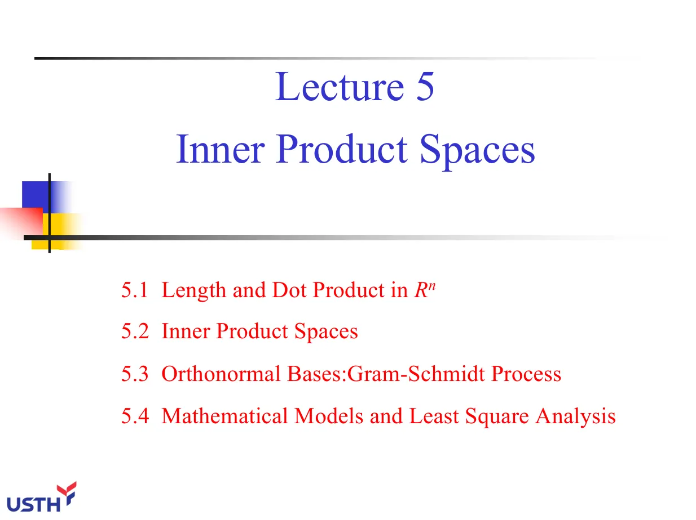
Title slide. Four sections: 5.1 Length and dot product in $\mathbb R^n$; 5.2 Inner product spaces; 5.3 Orthonormal bases and the Gram–Schmidt process; 5.4 Mathematical models and least squares analysis.
Slide tiêu đề. Bốn mục: 5.1 Độ dài và tích vô hướng trong $\mathbb R^n$; 5.2 Không gian tích trong; 5.3 Cơ sở trực chuẩn và quá trình Gram–Schmidt; 5.4 Mô hình toán học và phân tích bình phương tối thiểu.
5.1 Length (norm) of a vector · 5.1 Độ dài (chuẩn) của vectơ
★★★ Core · Cốt lõi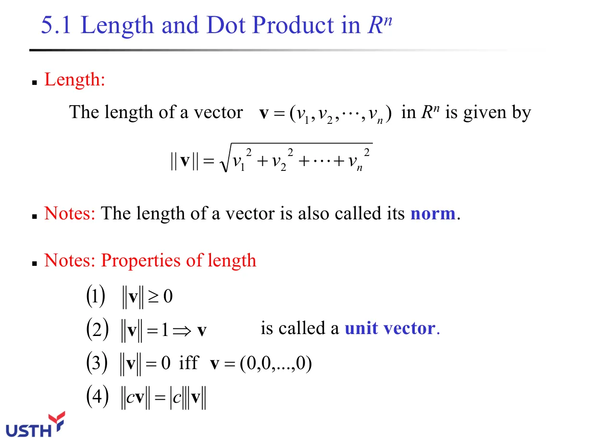
The length (also called norm) of $v=(v_1,\dots,v_n)\in\mathbb R^n$ is $\|v\|=\sqrt{v_1^2+v_2^2+\cdots+v_n^2}$: Pythagoras in $n$ dimensions. Properties: (1) $\|v\|\ge0$; (2) $\|v\|=1$ means $v$ is a unit vector; (3) $\|v\|=0$ iff $v=0$; (4) $\|cv\|=|c|\,\|v\|$.
Độ dài (còn gọi là chuẩn) của $v=(v_1,\dots,v_n)\in\mathbb R^n$ là $\|v\|=\sqrt{v_1^2+v_2^2+\cdots+v_n^2}$: định lý Pythagore trong $n$ chiều. Tính chất: (1) $\|v\|\ge0$; (2) $\|v\|=1$ nghĩa là $v$ là vectơ đơn vị; (3) $\|v\|=0$ khi và chỉ khi $v=0$; (4) $\|cv\|=|c|\,\|v\|$.
Find $\|v\|$ for $v=(1,-2,2,4)$ and a scalar $c$ with $\|cv\|=1$.
Tìm $\|v\|$ với $v=(1,-2,2,4)$ và một số $c$ sao cho $\|cv\|=1$.
Answer and solution · Đáp án và lời giải
Answer · Đáp án: $\|v\|=5$, $c=\pm\dfrac15$
$\|v\|=\sqrt{1+4+4+16}=\sqrt{25}=5$. Since $\|cv\|=|c|\,5=1$, $c=\pm\frac15$.
$\|v\|=\sqrt{1+4+4+16}=\sqrt{25}=5$. Vì $\|cv\|=|c|\,5=1$ nên $c=\pm\frac15$.
Example 1: lengths in $\mathbb R^3$ and $\mathbb R^5$ · Ví dụ 1: độ dài trong $\mathbb R^3$ và $\mathbb R^5$
★★ Important · Quan trọng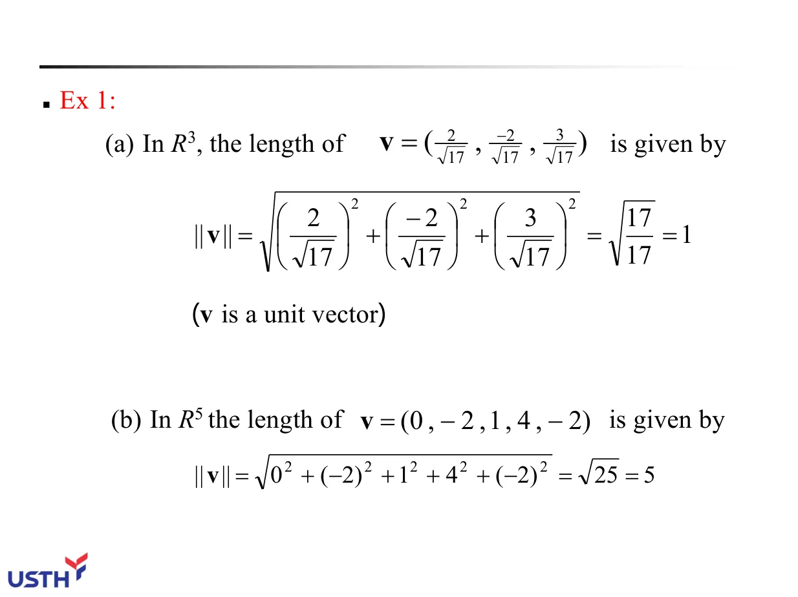
(a) $v=\left(\frac2{\sqrt{17}},\frac{-2}{\sqrt{17}},\frac3{\sqrt{17}}\right)$ has $\|v\|=\sqrt{\frac4{17}+\frac4{17}+\frac9{17}}=\sqrt{\frac{17}{17}}=1$: a unit vector. (b) $v=(0,-2,1,4,-2)\in\mathbb R^5$ has $\|v\|=\sqrt{0+4+1+16+4}=\sqrt{25}=5$.
(a) $v=\left(\frac2{\sqrt{17}},\frac{-2}{\sqrt{17}},\frac3{\sqrt{17}}\right)$ có $\|v\|=\sqrt{\frac4{17}+\frac4{17}+\frac9{17}}=\sqrt{\frac{17}{17}}=1$: vectơ đơn vị. (b) $v=(0,-2,1,4,-2)\in\mathbb R^5$ có $\|v\|=\sqrt{0+4+1+16+4}=\sqrt{25}=5$.
Which of $\left(\frac13,\frac23,\frac23\right)$, $\left(\frac12,\frac12,\frac12\right)$, $\left(\frac12,\frac12,\frac12,\frac12\right)$ are unit vectors?
Vectơ nào trong $\left(\frac13,\frac23,\frac23\right)$, $\left(\frac12,\frac12,\frac12\right)$, $\left(\frac12,\frac12,\frac12,\frac12\right)$ là vectơ đơn vị?
Answer and solution · Đáp án và lời giải
Answer · Đáp án: the first and the third
$\frac19+\frac49+\frac49=1$ (unit). $3\cdot\frac14=\frac34$, length $\frac{\sqrt3}2\ne1$ (not unit). $4\cdot\frac14=1$ (unit).
$\frac19+\frac49+\frac49=1$ (đơn vị). $3\cdot\frac14=\frac34$, độ dài $\frac{\sqrt3}2\ne1$ (không đơn vị). $4\cdot\frac14=1$ (đơn vị).
Standard unit vectors and parallel vectors · Vectơ đơn vị chuẩn và vectơ song song
★★ Important · Quan trọng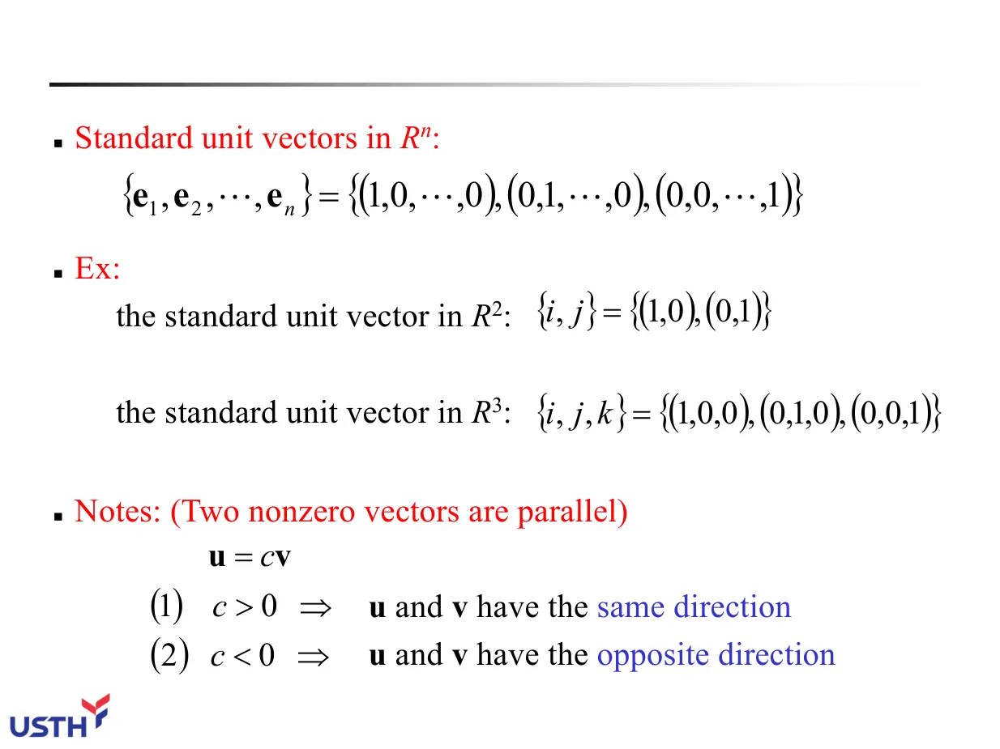
The standard unit vectors of $\mathbb R^n$ are $e_1=(1,0,\dots,0),\dots,e_n=(0,\dots,0,1)$; in $\mathbb R^2$ they are $i,j$ and in $\mathbb R^3$ they are $i,j,k$. Two nonzero vectors are parallel when $u=cv$: if $c>0$ they have the same direction, if $c<0$ the opposite direction.
Vectơ đơn vị chuẩn của $\mathbb R^n$ là $e_1=(1,0,\dots,0),\dots,e_n=(0,\dots,0,1)$; trong $\mathbb R^2$ là $i,j$ và trong $\mathbb R^3$ là $i,j,k$. Hai vectơ khác không song song khi $u=cv$: nếu $c>0$ chúng cùng hướng, nếu $c<0$ chúng ngược hướng.
Are $u=(2,-4,6)$ and $v=(-1,2,-3)$ parallel? Same or opposite direction?
$u=(2,-4,6)$ và $v=(-1,2,-3)$ có song song không? Cùng hướng hay ngược hướng?
Answer and solution · Đáp án và lời giải
Answer · Đáp án: parallel, opposite direction ($u=-2v$)
$-2v=(2,-4,6)=u$, so $u=cv$ with $c=-2<0$: parallel with opposite directions.
$-2v=(2,-4,6)=u$, nên $u=cv$ với $c=-2<0$: song song và ngược hướng.
Theorem 5.1: the length of a scalar multiple · Định lý 5.1: độ dài của bội vô hướng
★★★ Core · Cốt lõi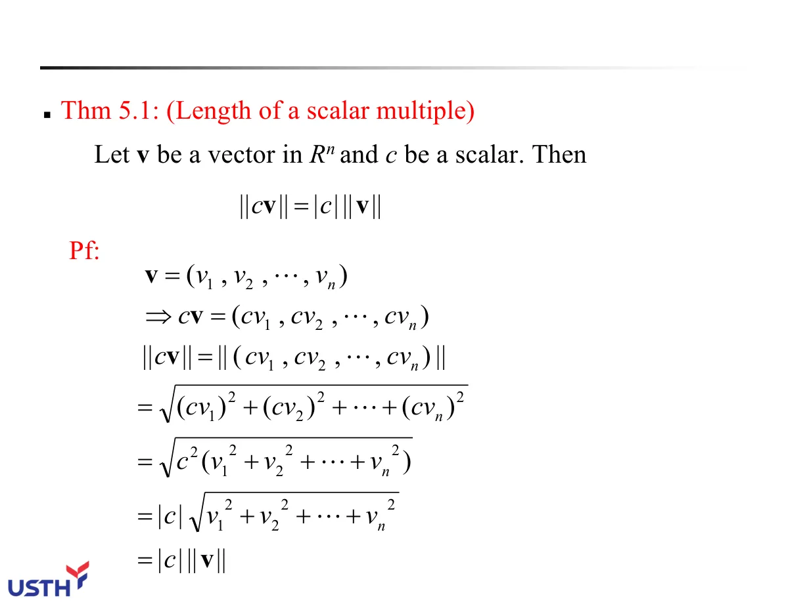
Theorem 5.1. $\|cv\|=|c|\,\|v\|$. Proof: $cv=(cv_1,\dots,cv_n)$, so $\|cv\|=\sqrt{c^2v_1^2+\cdots+c^2v_n^2}=\sqrt{c^2}\sqrt{v_1^2+\cdots+v_n^2}=|c|\,\|v\|$. Do not forget the absolute value: $\sqrt{c^2}=|c|$, not $c$.
Định lý 5.1. $\|cv\|=|c|\,\|v\|$. Chứng minh: $cv=(cv_1,\dots,cv_n)$ nên $\|cv\|=\sqrt{c^2v_1^2+\cdots+c^2v_n^2}=\sqrt{c^2}\sqrt{v_1^2+\cdots+v_n^2}=|c|\,\|v\|$. Đừng quên giá trị tuyệt đối: $\sqrt{c^2}=|c|$ chứ không phải $c$.
If $\|v\|=10$ find $\|-3v\|$ and $\left\|\frac v2\right\|$; confirm with $v=(6,8)$.
Nếu $\|v\|=10$ tìm $\|-3v\|$ và $\left\|\frac v2\right\|$; kiểm tra với $v=(6,8)$.
Answer and solution · Đáp án và lời giải
Answer · Đáp án: $30$ and $5$
$\|-3v\|=|-3|\cdot10=30$ and $\left\|\frac v2\right\|=\frac12\cdot10=5$. For $v=(6,8)$: $\|v\|=10$, $\|-3v\|=\|(-18,-24)\|=30$, $\left\|(3,4)\right\|=5$.
$\|-3v\|=|-3|\cdot10=30$ và $\left\|\frac v2\right\|=\frac12\cdot10=5$. Với $v=(6,8)$: $\|v\|=10$, $\|-3v\|=\|(-18,-24)\|=30$, $\left\|(3,4)\right\|=5$.
Theorem 5.2: the unit vector in the direction of $v$ · Định lý 5.2: vectơ đơn vị theo hướng của $v$
★★★ Core · Cốt lõi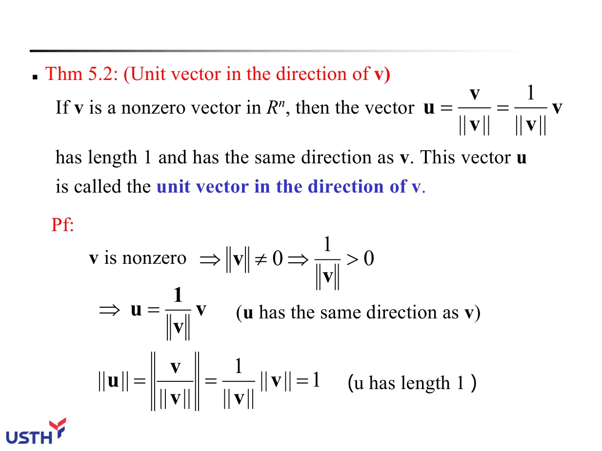
Theorem 5.2. If $v\ne0$ then $u=\frac v{\|v\|}=\frac1{\|v\|}v$ has length $1$ and the same direction as $v$. Proof: $v\ne0\Rightarrow\|v\|\ne0$ and $\frac1{\|v\|}>0$, so $u$ points the same way as $v$ (positive multiple); and $\|u\|=\frac1{\|v\|}\|v\|=1$ by Theorem 5.1. This vector is the unit vector in the direction of $v$.
Định lý 5.2. Nếu $v\ne0$ thì $u=\frac v{\|v\|}=\frac1{\|v\|}v$ có độ dài $1$ và cùng hướng với $v$. Chứng minh: $v\ne0\Rightarrow\|v\|\ne0$ và $\frac1{\|v\|}>0$ nên $u$ cùng hướng với $v$ (bội dương); và $\|u\|=\frac1{\|v\|}\|v\|=1$ theo Định lý 5.1. Vectơ này là vectơ đơn vị theo hướng của $v$.
Find the unit vector in the direction of $(2,-3,6)$ and the vector of length $14$ in the opposite direction.
Tìm vectơ đơn vị theo hướng của $(2,-3,6)$ và vectơ có độ dài $14$ theo hướng ngược lại.
Answer and solution · Đáp án và lời giải
Answer · Đáp án: $\left(\frac27,-\frac37,\frac67\right)$ and $(-4,6,-12)$
$\|(2,-3,6)\|=\sqrt{4+9+36}=7$, so the unit vector is $\frac17(2,-3,6)$. Opposite direction, length $14$: $-14\cdot\frac17(2,-3,6)=-2(2,-3,6)=(-4,6,-12)$; its length is $|{-2}|\cdot7=14$ ✓.
$\|(2,-3,6)\|=\sqrt{4+9+36}=7$ nên vectơ đơn vị là $\frac17(2,-3,6)$. Ngược hướng, độ dài $14$: $-14\cdot\frac17(2,-3,6)=-2(2,-3,6)=(-4,6,-12)$; độ dài của nó là $|{-2}|\cdot7=14$ ✓.
Normalising a vector · Chuẩn hóa vectơ
★★ Important · Quan trọng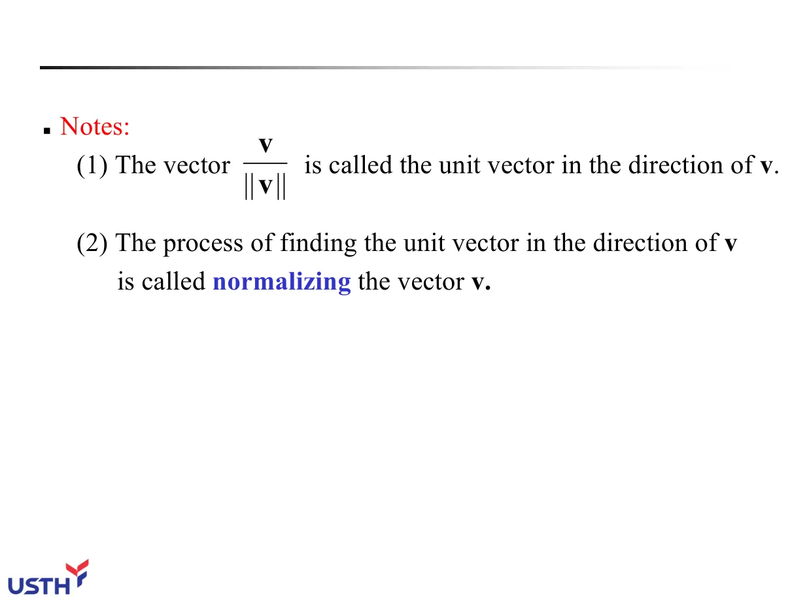
Notes: (1) $\frac v{\|v\|}$ is the unit vector in the direction of $v$. (2) The process of finding it is called normalising $v$. If $v\ne0$ and $\|v\|\ne1$ ($v$ is not a unit vector), dividing by the length gives a unit vector. This is the last step of almost every orthonormal-basis construction.
Lưu ý: (1) $\frac v{\|v\|}$ là vectơ đơn vị theo hướng của $v$. (2) Quá trình tìm nó gọi là chuẩn hóa $v$. Nếu $v\ne0$ và $\|v\|\ne1$ ($v$ không là vectơ đơn vị), chia cho độ dài được một vectơ đơn vị. Đây là bước cuối của hầu hết mọi cách xây cơ sở trực chuẩn.
Normalise $(1,1,1,1)$ and $(0,0,5)$.
Chuẩn hóa $(1,1,1,1)$ và $(0,0,5)$.
Answer and solution · Đáp án và lời giải
Answer · Đáp án: $\left(\frac12,\frac12,\frac12,\frac12\right)$ and $(0,0,1)$
$\|(1,1,1,1)\|=2$ and $\|(0,0,5)\|=5$; divide each vector by its length.
$\|(1,1,1,1)\|=2$ và $\|(0,0,5)\|=5$; chia mỗi vectơ cho độ dài của nó.
Example 2: a unit vector · Ví dụ 2: một vectơ đơn vị
★★★ Core · Cốt lõi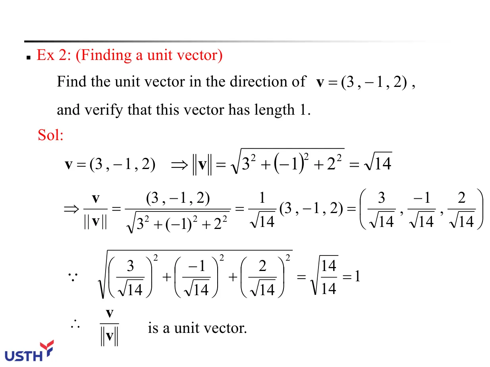
Find the unit vector in the direction of $v=(3,-1,2)$ and verify that it has length $1$. $\|v\|=\sqrt{9+1+4}=\sqrt{14}$, so $\frac v{\|v\|}=\left(\frac3{\sqrt{14}},\frac{-1}{\sqrt{14}},\frac2{\sqrt{14}}\right)$, and its length is $\sqrt{\frac9{14}+\frac1{14}+\frac4{14}}=\sqrt{\frac{14}{14}}=1$ ✓.
Tìm vectơ đơn vị theo hướng của $v=(3,-1,2)$ và kiểm tra nó có độ dài $1$. $\|v\|=\sqrt{9+1+4}=\sqrt{14}$ nên $\frac v{\|v\|}=\left(\frac3{\sqrt{14}},\frac{-1}{\sqrt{14}},\frac2{\sqrt{14}}\right)$, và độ dài của nó là $\sqrt{\frac9{14}+\frac1{14}+\frac4{14}}=\sqrt{\frac{14}{14}}=1$ ✓.
Find a vector of length $10$ in the direction of $(3,4,12)$.
Tìm vectơ có độ dài $10$ theo hướng của $(3,4,12)$.
Answer and solution · Đáp án và lời giải
Answer · Đáp án: $\dfrac{10}{13}(3,4,12)=\left(\frac{30}{13},\frac{40}{13},\frac{120}{13}\right)$
$\|(3,4,12)\|=\sqrt{9+16+144}=13$. The unit vector is $\frac1{13}(3,4,12)$; multiply by $10$.
$\|(3,4,12)\|=\sqrt{9+16+144}=13$. Vectơ đơn vị là $\frac1{13}(3,4,12)$; nhân với $10$.
Distance between two vectors · Khoảng cách giữa hai vectơ
★★★ Core · Cốt lõi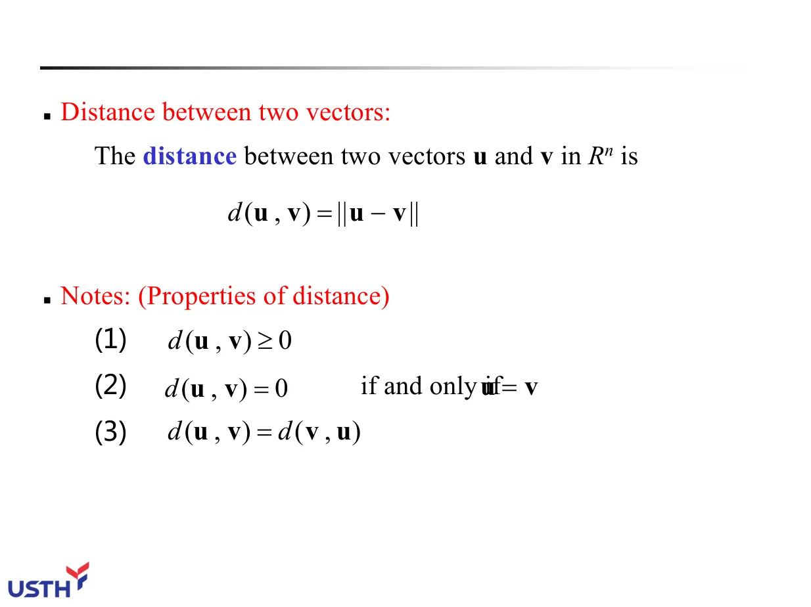
The distance between $u$ and $v$ in $\mathbb R^n$ is $d(u,v)=\|u-v\|$. Properties: (1) $d(u,v)\ge0$; (2) $d(u,v)=0$ iff $u=v$; (3) $d(u,v)=d(v,u)$ (symmetry). It is the length of the vector joining the two points.
Khoảng cách giữa $u$ và $v$ trong $\mathbb R^n$ là $d(u,v)=\|u-v\|$. Tính chất: (1) $d(u,v)\ge0$; (2) $d(u,v)=0$ khi và chỉ khi $u=v$; (3) $d(u,v)=d(v,u)$ (đối xứng). Đó là độ dài của vectơ nối hai điểm.
Find $d(u,v)$ for $u=(1,2,3)$, $v=(4,6,3)$ and for $u=(1,0,-1,2)$, $v=(3,2,0,0)$.
Tìm $d(u,v)$ với $u=(1,2,3)$, $v=(4,6,3)$ và với $u=(1,0,-1,2)$, $v=(3,2,0,0)$.
Answer and solution · Đáp án và lời giải
Answer · Đáp án: $5$ and $\sqrt{13}$
$u-v=(-3,-4,0)$, length $5$. Second: $u-v=(-2,-2,-1,2)$, length $\sqrt{4+4+1+4}=\sqrt{13}$.
$u-v=(-3,-4,0)$, độ dài $5$. Bài sau: $u-v=(-2,-2,-1,2)$, độ dài $\sqrt{4+4+1+4}=\sqrt{13}$.
Example 3: a distance in $\mathbb R^3$ · Ví dụ 3: một khoảng cách trong $\mathbb R^3$
★★ Important · Quan trọng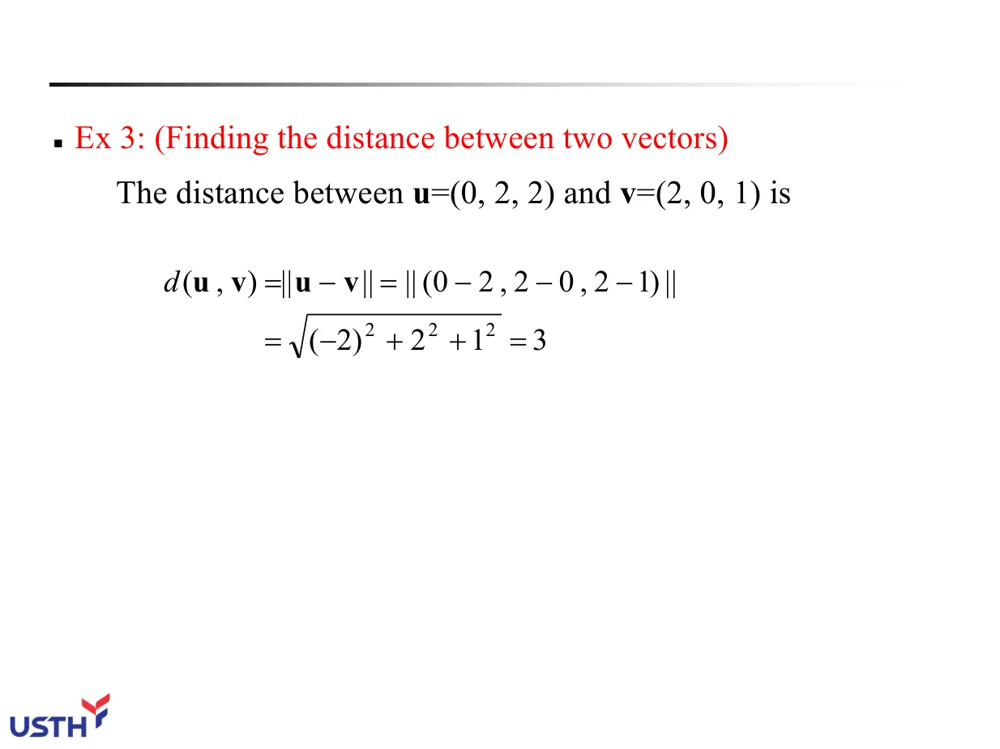
The distance between $u=(0,2,2)$ and $v=(2,0,1)$ is $d(u,v)=\|u-v\|=\|(-2,2,1)\|=\sqrt{4+4+1}=3$. Computing it in the other order, $\|v-u\|=\|(2,-2,-1)\|=3$, gives the same number.
Khoảng cách giữa $u=(0,2,2)$ và $v=(2,0,1)$ là $d(u,v)=\|u-v\|=\|(-2,2,1)\|=\sqrt{4+4+1}=3$. Tính theo thứ tự ngược lại, $\|v-u\|=\|(2,-2,-1)\|=3$, cho cùng một số.
Find all points of the $x$-axis at distance $5$ from $(3,4)$.
Tìm mọi điểm trên trục $x$ cách $(3,4)$ một khoảng $5$.
Answer and solution · Đáp án và lời giải
Answer · Đáp án: $(0,0)$ and $(6,0)$
$(x,0)$ with $\sqrt{(x-3)^2+16}=5$: $(x-3)^2=9$, so $x=0$ or $x=6$.
$(x,0)$ với $\sqrt{(x-3)^2+16}=5$: $(x-3)^2=9$ nên $x=0$ hoặc $x=6$.
The dot product in $\mathbb R^n$ · Tích vô hướng trong $\mathbb R^n$
★★★ Core · Cốt lõi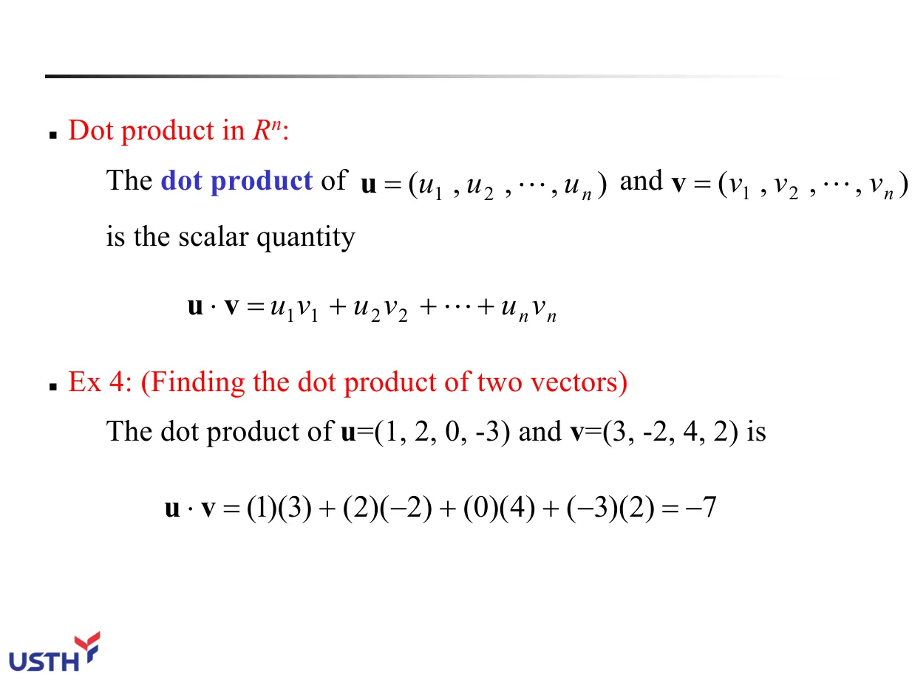
The dot product of $u=(u_1,\dots,u_n)$ and $v=(v_1,\dots,v_n)$ is the scalar $u\cdot v=u_1v_1+u_2v_2+\cdots+u_nv_n$. Example 4: for $u=(1,2,0,-3)$ and $v=(3,-2,4,2)$: $u\cdot v=(1)(3)+(2)(-2)+(0)(4)+(-3)(2)=3-4+0-6=-7$. The result is a number, not a vector.
Tích vô hướng của $u=(u_1,\dots,u_n)$ và $v=(v_1,\dots,v_n)$ là số $u\cdot v=u_1v_1+u_2v_2+\cdots+u_nv_n$. Ví dụ 4: với $u=(1,2,0,-3)$ và $v=(3,-2,4,2)$: $u\cdot v=(1)(3)+(2)(-2)+(0)(4)+(-3)(2)=3-4+0-6=-7$. Kết quả là một số, không phải vectơ.
Compute $(2,-1,3)\cdot(1,4,-2)$ and $(1,2,3,4)\cdot(4,3,2,1)$.
Tính $(2,-1,3)\cdot(1,4,-2)$ và $(1,2,3,4)\cdot(4,3,2,1)$.
Answer and solution · Đáp án và lời giải
Answer · Đáp án: $-8$ and $20$
$2-4-6=-8$ and $4+6+6+4=20$.
$2-4-6=-8$ và $4+6+6+4=20$.
Theorem 5.3: properties of the dot product · Định lý 5.3: tính chất của tích vô hướng
★★★ Core · Cốt lõi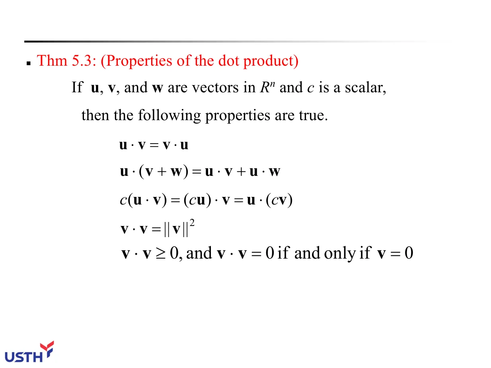
For $u,v,w\in\mathbb R^n$ and a scalar $c$: $u\cdot v=v\cdot u$; $u\cdot(v+w)=u\cdot v+u\cdot w$; $c(u\cdot v)=(cu)\cdot v=u\cdot(cv)$; $v\cdot v=\|v\|^2$; $v\cdot v\ge0$ and $v\cdot v=0$ iff $v=0$. The key link between lengths and dot products is $\|v\|^2=v\cdot v$.
Với $u,v,w\in\mathbb R^n$ và vô hướng $c$: $u\cdot v=v\cdot u$; $u\cdot(v+w)=u\cdot v+u\cdot w$; $c(u\cdot v)=(cu)\cdot v=u\cdot(cv)$; $v\cdot v=\|v\|^2$; $v\cdot v\ge0$ và $v\cdot v=0$ khi và chỉ khi $v=0$. Mối liên hệ then chốt giữa độ dài và tích vô hướng là $\|v\|^2=v\cdot v$.
If $u\cdot u=4$, $v\cdot v=9$, $u\cdot v=-2$, find $\|2u-v\|^2$ and $\|u+v\|$.
Nếu $u\cdot u=4$, $v\cdot v=9$, $u\cdot v=-2$, tìm $\|2u-v\|^2$ và $\|u+v\|$.
Answer and solution · Đáp án và lời giải
Answer · Đáp án: $33$ and $3$
$\|2u-v\|^2=(2u-v)\cdot(2u-v)=4u\cdot u-4u\cdot v+v\cdot v=16+8+9=33$. $\|u+v\|^2=u\cdot u+2u\cdot v+v\cdot v=4-4+9=9$, so $\|u+v\|=3$.
$\|2u-v\|^2=(2u-v)\cdot(2u-v)=4u\cdot u-4u\cdot v+v\cdot v=16+8+9=33$. $\|u+v\|^2=u\cdot u+2u\cdot v+v\cdot v=4-4+9=9$ nên $\|u+v\|=3$.
Euclidean $n$-space · Không gian Euclid $n$ chiều
★★ Important · Quan trọng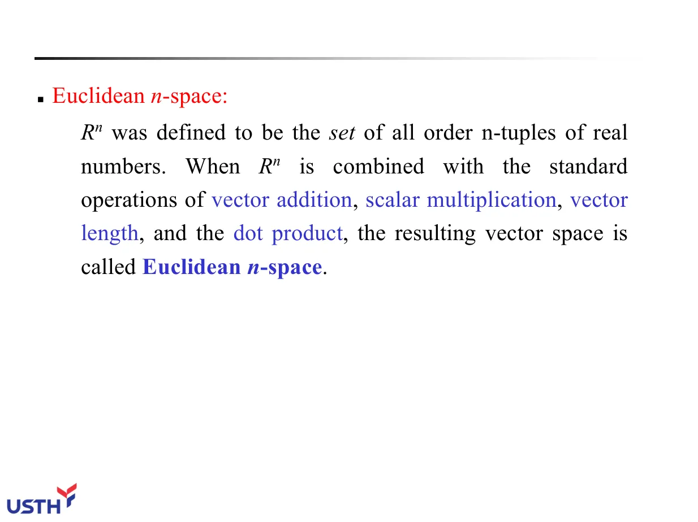
$\mathbb R^n$ was defined as the set of ordered $n$-tuples. When it is combined with the standard operations of addition, scalar multiplication, length and the dot product, the result is called Euclidean $n$-space.
$\mathbb R^n$ được định nghĩa là tập các bộ $n$ số có thứ tự. Khi kết hợp với các phép toán chuẩn cộng, nhân vô hướng, độ dài và tích vô hướng, kết quả gọi là không gian Euclid $n$ chiều.
Example 5: dot products of 2-D vectors · Ví dụ 5: tích vô hướng của các vectơ 2 chiều
★★★ Core · Cốt lõi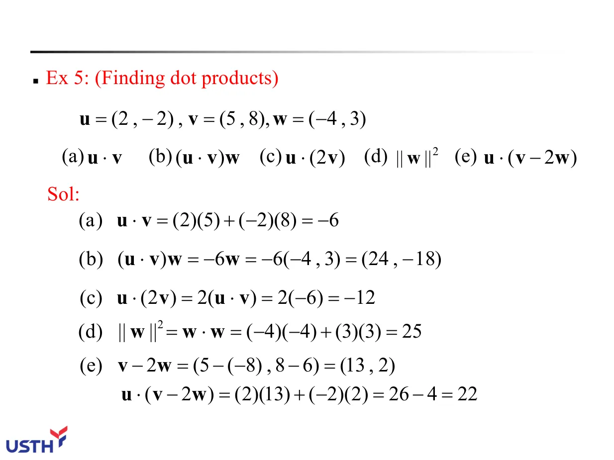
$u=(2,-2)$, $v=(5,8)$, $w=(-4,3)$. (a) $u\cdot v=10-16=-6$. (b) $(u\cdot v)w=-6w=(24,-18)$ (a number times a vector). (c) $u\cdot(2v)=2(u\cdot v)=-12$. (d) $\|w\|^2=w\cdot w=16+9=25$. (e) $v-2w=(13,2)$ and $u\cdot(v-2w)=26-4=22$.
$u=(2,-2)$, $v=(5,8)$, $w=(-4,3)$. (a) $u\cdot v=10-16=-6$. (b) $(u\cdot v)w=-6w=(24,-18)$ (một số nhân một vectơ). (c) $u\cdot(2v)=2(u\cdot v)=-12$. (d) $\|w\|^2=w\cdot w=16+9=25$. (e) $v-2w=(13,2)$ và $u\cdot(v-2w)=26-4=22$.
For $u=(1,3)$, $v=(2,-1)$, $w=(-3,2)$ compute $(u\cdot v)w$ and $u\cdot(2v-w)$.
Với $u=(1,3)$, $v=(2,-1)$, $w=(-3,2)$ tính $(u\cdot v)w$ và $u\cdot(2v-w)$.
Answer and solution · Đáp án và lời giải
Answer · Đáp án: $(3,-2)$ and $-5$
$u\cdot v=2-3=-1$, so $(u\cdot v)w=-w=(3,-2)$ (a vector). $2v-w=(7,-4)$ and $u\cdot(7,-4)=7-12=-5$ (a number).
$u\cdot v=2-3=-1$ nên $(u\cdot v)w=-w=(3,-2)$ (một vectơ). $2v-w=(7,-4)$ và $u\cdot(7,-4)=7-12=-5$ (một số).
Example 6: using the properties of the dot product · Ví dụ 6: dùng các tính chất của tích vô hướng
★★★ Core · Cốt lõi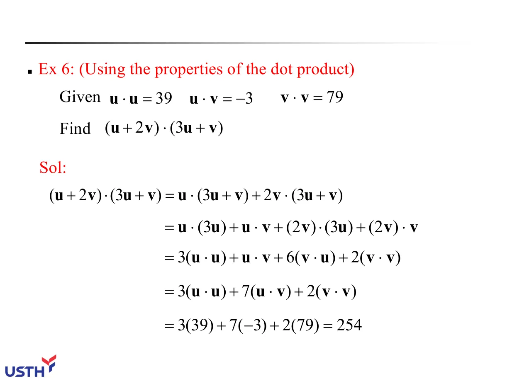
Given $u\cdot u=39$, $u\cdot v=-3$, $v\cdot v=79$, find $(u+2v)\cdot(3u+v)$. Expand like a product of two binomials, keeping the order: $3(u\cdot u)+u\cdot v+6(v\cdot u)+2(v\cdot v)=3(u\cdot u)+7(u\cdot v)+2(v\cdot v)=117-21+158=254$. You never need the components.
Cho $u\cdot u=39$, $u\cdot v=-3$, $v\cdot v=79$, tìm $(u+2v)\cdot(3u+v)$. Khai triển như tích hai nhị thức, giữ thứ tự: $3(u\cdot u)+u\cdot v+6(v\cdot u)+2(v\cdot v)=3(u\cdot u)+7(u\cdot v)+2(v\cdot v)=117-21+158=254$. Không bao giờ cần các thành phần.
Given $u\cdot u=5$, $u\cdot v=2$, $v\cdot v=3$, find $(2u-v)\cdot(u+3v)$.
Cho $u\cdot u=5$, $u\cdot v=2$, $v\cdot v=3$, tìm $(2u-v)\cdot(u+3v)$.
Answer and solution · Đáp án và lời giải
Answer · Đáp án: $11$
$(2u-v)\cdot(u+3v)=2u\cdot u+6u\cdot v-v\cdot u-3v\cdot v=2u\cdot u+5u\cdot v-3v\cdot v=10+10-9=11$.
$(2u-v)\cdot(u+3v)=2u\cdot u+6u\cdot v-v\cdot u-3v\cdot v=2u\cdot u+5u\cdot v-3v\cdot v=10+10-9=11$.
Theorem 5.4: the Cauchy–Schwarz inequality · Định lý 5.4: bất đẳng thức Cauchy–Schwarz
★★★ Core · Cốt lõi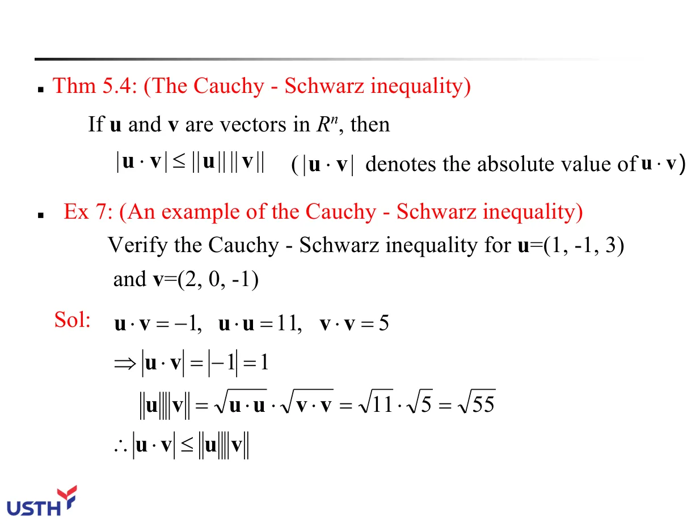
Theorem 5.4. For $u,v\in\mathbb R^n$: $|u\cdot v|\le\|u\|\,\|v\|$. Example 7: $u=(1,-1,3)$, $v=(2,0,-1)$: $u\cdot v=-1$, $u\cdot u=11$, $v\cdot v=5$, so $|u\cdot v|=1\le\sqrt{11}\sqrt5=\sqrt{55}$ ✓. Equality holds exactly when the vectors are parallel. This inequality is what makes the angle between vectors well defined (next slides).
Định lý 5.4. Với $u,v\in\mathbb R^n$: $|u\cdot v|\le\|u\|\,\|v\|$. Ví dụ 7: $u=(1,-1,3)$, $v=(2,0,-1)$: $u\cdot v=-1$, $u\cdot u=11$, $v\cdot v=5$ nên $|u\cdot v|=1\le\sqrt{11}\sqrt5=\sqrt{55}$ ✓. Dấu bằng xảy ra đúng khi hai vectơ song song. Bất đẳng thức này làm cho góc giữa các vectơ được xác định tốt (các slide sau).
Cauchy–Schwarz is the reason $\cos\theta=\frac{u\cdot v}{\|u\|\|v\|}$ lies between $-1$ and $1$, and it is used in many proofs.
Cauchy–Schwarz là lý do $\cos\theta=\frac{u\cdot v}{\|u\|\|v\|}$ nằm giữa $-1$ và $1$, và nó được dùng trong nhiều chứng minh.
Verify Cauchy–Schwarz for $u=(2,-1,2)$, $v=(1,2,-2)$, and show equality for $u=(1,2)$, $v=(2,4)$.
Kiểm tra Cauchy–Schwarz với $u=(2,-1,2)$, $v=(1,2,-2)$, và chứng tỏ dấu bằng xảy ra với $u=(1,2)$, $v=(2,4)$.
Answer and solution · Đáp án và lời giải
Answer · Đáp án: $4\le9$; and $10=10$
$u\cdot v=2-2-4=-4$, $\|u\|=\|v\|=3$, so $|u\cdot v|=4\le9$. For $(1,2)$ and $(2,4)=2(1,2)$: $|u\cdot v|=10$ and $\sqrt5\cdot\sqrt{20}=\sqrt{100}=10$: equality.
$u\cdot v=2-2-4=-4$, $\|u\|=\|v\|=3$ nên $|u\cdot v|=4\le9$. Với $(1,2)$ và $(2,4)=2(1,2)$: $|u\cdot v|=10$ và $\sqrt5\cdot\sqrt{20}=\sqrt{100}=10$: dấu bằng.
The angle between two vectors · Góc giữa hai vectơ
★★★ Core · Cốt lõi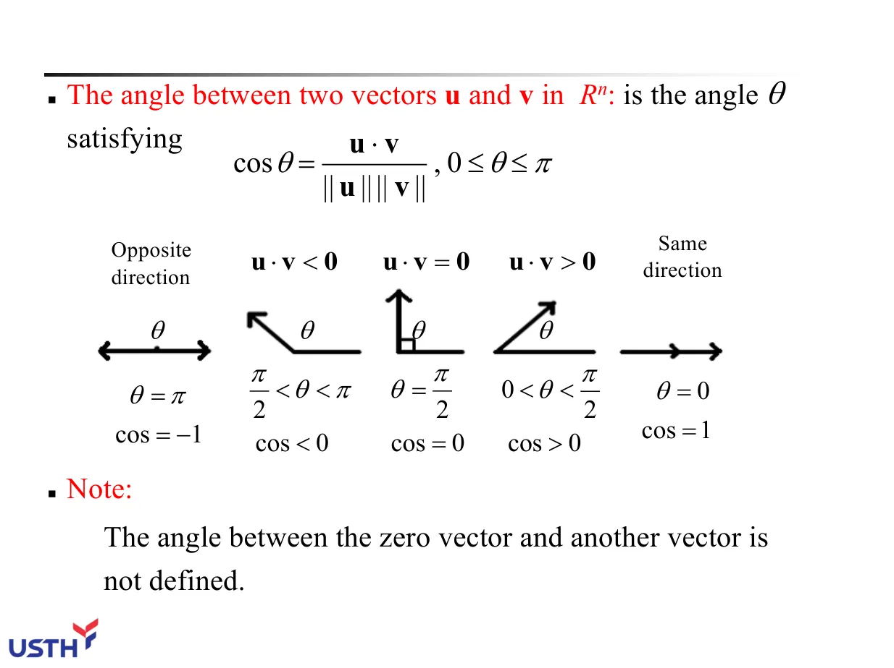
The angle $\theta$ between nonzero $u,v\in\mathbb R^n$ is defined by $\cos\theta=\frac{u\cdot v}{\|u\|\,\|v\|}$, $0\le\theta\le\pi$. The sign of the dot product tells the picture: $u\cdot v>0$ gives $0\le\theta<\frac\pi2$ (acute, $\theta=0$ means same direction); $u\cdot v=0$ gives $\theta=\frac\pi2$; $u\cdot v<0$ gives $\frac\pi2<\theta\le\pi$ ($\theta=\pi$ means opposite directions). The angle with the zero vector is not defined.
Góc $\theta$ giữa hai vectơ khác không $u,v\in\mathbb R^n$ được định nghĩa bởi $\cos\theta=\frac{u\cdot v}{\|u\|\,\|v\|}$, $0\le\theta\le\pi$. Dấu của tích vô hướng cho hình ảnh: $u\cdot v>0$ cho $0\le\theta<\frac\pi2$ (nhọn, $\theta=0$ nghĩa là cùng hướng); $u\cdot v=0$ cho $\theta=\frac\pi2$; $u\cdot v<0$ cho $\frac\pi2<\theta\le\pi$ ($\theta=\pi$ nghĩa là ngược hướng). Góc với vectơ không không xác định.
Find the angle between $(1,1,0)$ and $(0,1,1)$.
Tìm góc giữa $(1,1,0)$ và $(0,1,1)$.
Answer and solution · Đáp án và lời giải
Answer · Đáp án: $\dfrac\pi3$
$u\cdot v=1$, $\|u\|=\|v\|=\sqrt2$, so $\cos\theta=\frac1{2}$ and $\theta=\frac\pi3$.
$u\cdot v=1$, $\|u\|=\|v\|=\sqrt2$ nên $\cos\theta=\frac1{2}$ và $\theta=\frac\pi3$.
Example 8: an angle of $\pi$ · Ví dụ 8: góc bằng $\pi$
★★★ Core · Cốt lõi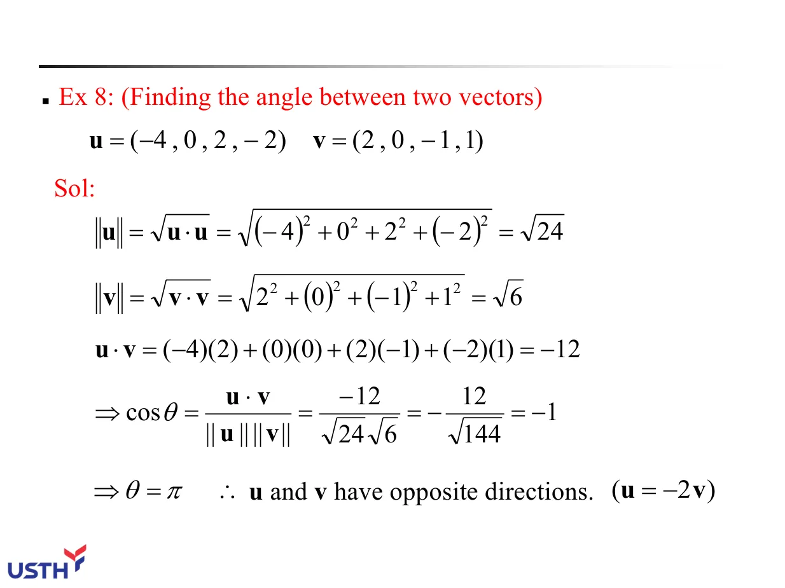
$u=(-4,0,2,-2)$, $v=(2,0,-1,1)$. $\|u\|=\sqrt{24}$, $\|v\|=\sqrt6$, $u\cdot v=-8+0-2-2=-12$, so $\cos\theta=\frac{-12}{\sqrt{24}\sqrt6}=\frac{-12}{\sqrt{144}}=-1$ and $\theta=\pi$: the vectors point in opposite directions (indeed $u=-2v$).
$u=(-4,0,2,-2)$, $v=(2,0,-1,1)$. $\|u\|=\sqrt{24}$, $\|v\|=\sqrt6$, $u\cdot v=-8+0-2-2=-12$ nên $\cos\theta=\frac{-12}{\sqrt{24}\sqrt6}=\frac{-12}{\sqrt{144}}=-1$ và $\theta=\pi$: các vectơ ngược hướng (thật vậy $u=-2v$).
Show that the angle between $(3,0,-3)$ and $(-1,0,1)$ is $\pi$.
Chứng tỏ góc giữa $(3,0,-3)$ và $(-1,0,1)$ bằng $\pi$.
Answer and solution · Đáp án và lời giải
Answer · Đáp án: $\cos\theta=-1$, so $\theta=\pi$
$u\cdot v=-3-3=-6$, $\|u\|=3\sqrt2$, $\|v\|=\sqrt2$, product of lengths $6$: $\cos\theta=-1$. Also $u=-3v$.
$u\cdot v=-3-3=-6$, $\|u\|=3\sqrt2$, $\|v\|=\sqrt2$, tích độ dài $6$: $\cos\theta=-1$. Ngoài ra $u=-3v$.
Orthogonal vectors · Vectơ trực giao
★★★ Core · Cốt lõi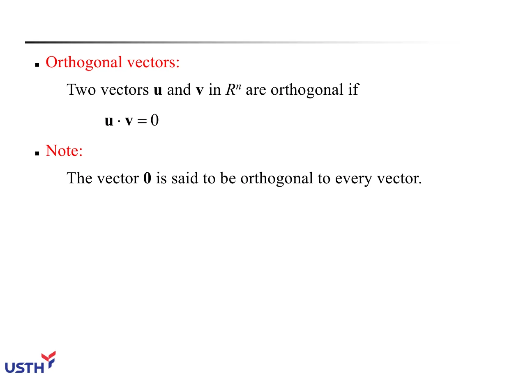
Two vectors $u,v\in\mathbb R^n$ are orthogonal (perpendicular) if $u\cdot v=0$. By convention the zero vector is orthogonal to every vector. Orthogonality is the algebraic version of a right angle, and it needs no square roots.
Hai vectơ $u,v\in\mathbb R^n$ trực giao (vuông góc) nếu $u\cdot v=0$. Theo quy ước vectơ không trực giao với mọi vectơ. Trực giao là phiên bản đại số của góc vuông, và không cần căn bậc hai.
Find $t$ such that $(1,t,2)$ and $(3,-1,t)$ are orthogonal.
Tìm $t$ để $(1,t,2)$ và $(3,-1,t)$ trực giao.
Answer and solution · Đáp án và lời giải
Answer · Đáp án: $t=-3$
$(1,t,2)\cdot(3,-1,t)=3-t+2t=3+t=0$, so $t=-3$. Check: $(1,-3,2)\cdot(3,-1,-3)=3+3-6=0$ ✓.
$(1,t,2)\cdot(3,-1,t)=3-t+2t=3+t=0$ nên $t=-3$. Kiểm tra: $(1,-3,2)\cdot(3,-1,-3)=3+3-6=0$ ✓.
Example 10: all vectors orthogonal to $(4,2)$ · Ví dụ 10: mọi vectơ trực giao với $(4,2)$
★★★ Core · Cốt lõi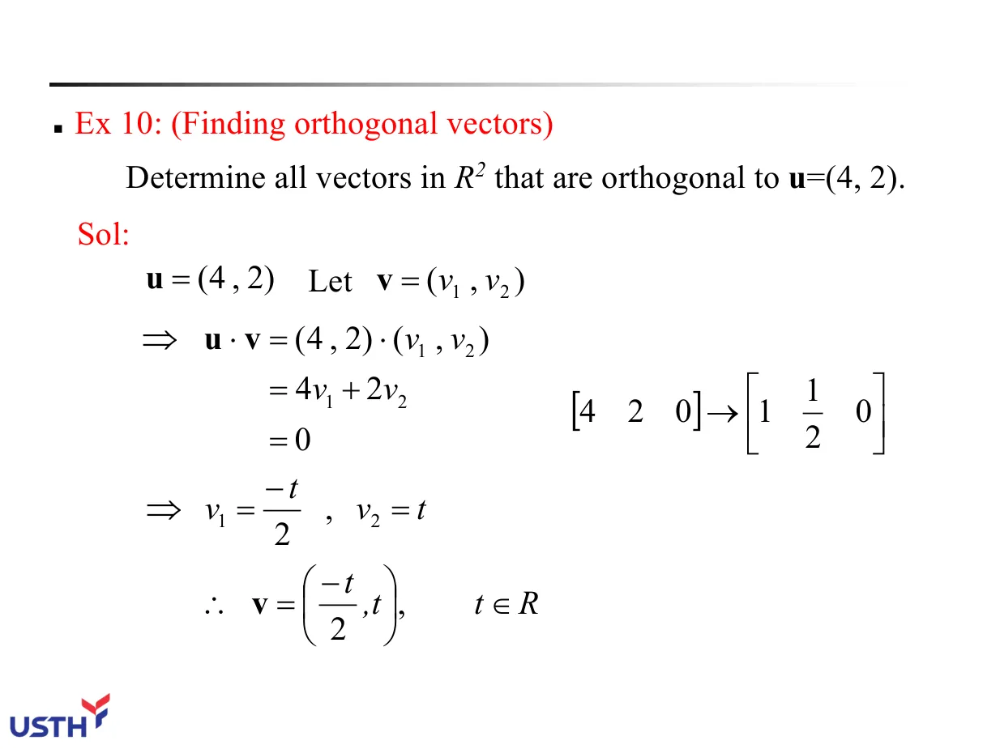
Find all $v=(v_1,v_2)\in\mathbb R^2$ orthogonal to $u=(4,2)$: $u\cdot v=4v_1+2v_2=0$, a homogeneous system with row $[4\ 2\ 0]\to[1\ \frac12\ 0]$. With $v_2=t$: $v_1=-\frac t2$, so $v=\left(-\frac t2,t\right)$, $t\in\mathbb R$: a line through the origin. In general the vectors orthogonal to a given vector form a subspace.
Tìm mọi $v=(v_1,v_2)\in\mathbb R^2$ trực giao với $u=(4,2)$: $u\cdot v=4v_1+2v_2=0$, một hệ thuần nhất với hàng $[4\ 2\ 0]\to[1\ \frac12\ 0]$. Với $v_2=t$: $v_1=-\frac t2$ nên $v=\left(-\frac t2,t\right)$, $t\in\mathbb R$: một đường thẳng qua gốc. Tổng quát, các vectơ trực giao với một vectơ cho trước tạo thành một không gian con.
Find a basis of the set of all vectors of $\mathbb R^4$ orthogonal to $(1,1,1,1)$.
Tìm cơ sở của tập mọi vectơ trong $\mathbb R^4$ trực giao với $(1,1,1,1)$.
Answer and solution · Đáp án và lời giải
Answer · Đáp án: $(-1,1,0,0),\ (-1,0,1,0),\ (-1,0,0,1)$
The condition is $x_1+x_2+x_3+x_4=0$ with three free variables $x_2,x_3,x_4$, giving three basis vectors; the set is a subspace of dimension $3$.
Điều kiện là $x_1+x_2+x_3+x_4=0$ với ba biến tự do $x_2,x_3,x_4$, cho ba vectơ cơ sở; tập này là không gian con số chiều $3$.
Theorem 5.5: the triangle inequality · Định lý 5.5: bất đẳng thức tam giác
★★★ Core · Cốt lõi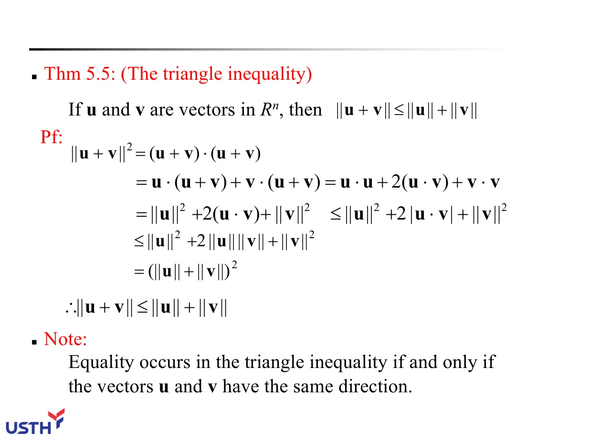
Theorem 5.5. $\|u+v\|\le\|u\|+\|v\|$. Proof: $\|u+v\|^2=u\cdot u+2u\cdot v+v\cdot v=\|u\|^2+2u\cdot v+\|v\|^2\le\|u\|^2+2\|u\|\|v\|+\|v\|^2=(\|u\|+\|v\|)^2$, using Cauchy–Schwarz. Equality occurs iff $u$ and $v$ have the same direction (one is a nonnegative multiple of the other): the shortest way between two points is the straight line.
Định lý 5.5. $\|u+v\|\le\|u\|+\|v\|$. Chứng minh: $\|u+v\|^2=u\cdot u+2u\cdot v+v\cdot v=\|u\|^2+2u\cdot v+\|v\|^2\le\|u\|^2+2\|u\|\|v\|+\|v\|^2=(\|u\|+\|v\|)^2$, dùng Cauchy–Schwarz. Dấu bằng xảy ra khi và chỉ khi $u$ và $v$ cùng hướng (một vectơ là bội không âm của vectơ kia): đường ngắn nhất giữa hai điểm là đoạn thẳng.
Verify the triangle inequality for $u=(3,4)$, $v=(-1,2)$, and show equality for $u=(1,2)$, $v=(2,4)$.
Kiểm tra bất đẳng thức tam giác với $u=(3,4)$, $v=(-1,2)$, và chứng tỏ dấu bằng với $u=(1,2)$, $v=(2,4)$.
Answer and solution · Đáp án và lời giải
Answer · Đáp án: $\sqrt{40}\approx6.32\le5+\sqrt5\approx7.24$; and $3\sqrt5=\sqrt5+2\sqrt5$
$u+v=(2,6)$, $\|u+v\|=\sqrt{40}$, while $\|u\|+\|v\|=5+\sqrt5$. For $(1,2)$ and $(2,4)=2(1,2)$: $\|u+v\|=\|(3,6)\|=3\sqrt5=\sqrt5+2\sqrt5=\|u\|+\|v\|$.
$u+v=(2,6)$, $\|u+v\|=\sqrt{40}$, còn $\|u\|+\|v\|=5+\sqrt5$. Với $(1,2)$ và $(2,4)=2(1,2)$: $\|u+v\|=\|(3,6)\|=3\sqrt5=\sqrt5+2\sqrt5=\|u\|+\|v\|$.
Theorem 5.6: the Pythagorean theorem · Định lý 5.6: định lý Pythagore
★★★ Core · Cốt lõi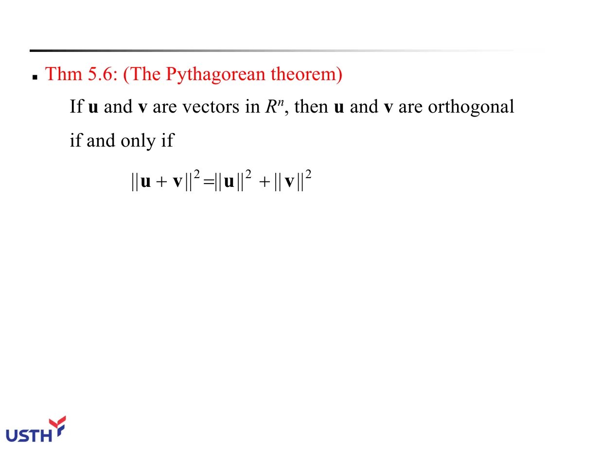
Theorem 5.6. $u$ and $v$ are orthogonal if and only if $\|u+v\|^2=\|u\|^2+\|v\|^2$. It follows from $\|u+v\|^2=\|u\|^2+2u\cdot v+\|v\|^2$: the middle term vanishes exactly when $u\cdot v=0$. This is the classical Pythagorean theorem, now valid in every dimension and, as we will see, in every inner product space.
Định lý 5.6. $u$ và $v$ trực giao khi và chỉ khi $\|u+v\|^2=\|u\|^2+\|v\|^2$. Nó suy ra từ $\|u+v\|^2=\|u\|^2+2u\cdot v+\|v\|^2$: số hạng giữa triệt tiêu đúng khi $u\cdot v=0$. Đây là định lý Pythagore cổ điển, nay đúng trong mọi chiều và, như ta sẽ thấy, trong mọi không gian tích trong.
Check Pythagoras for $u=(1,2,2)$, $v=(2,1,-2)$.
Kiểm tra Pythagore với $u=(1,2,2)$, $v=(2,1,-2)$.
Answer and solution · Đáp án và lời giải
Answer · Đáp án: orthogonal, and $\|u+v\|^2=18=9+9$
$u\cdot v=2+2-4=0$, so they are orthogonal. $u+v=(3,3,0)$ with $\|u+v\|^2=18=\|u\|^2+\|v\|^2=9+9$ ✓.
$u\cdot v=2+2-4=0$ nên chúng trực giao. $u+v=(3,3,0)$ với $\|u+v\|^2=18=\|u\|^2+\|v\|^2=9+9$ ✓.
The dot product as a matrix product · Tích vô hướng như một tích ma trận
★★★ Core · Cốt lõi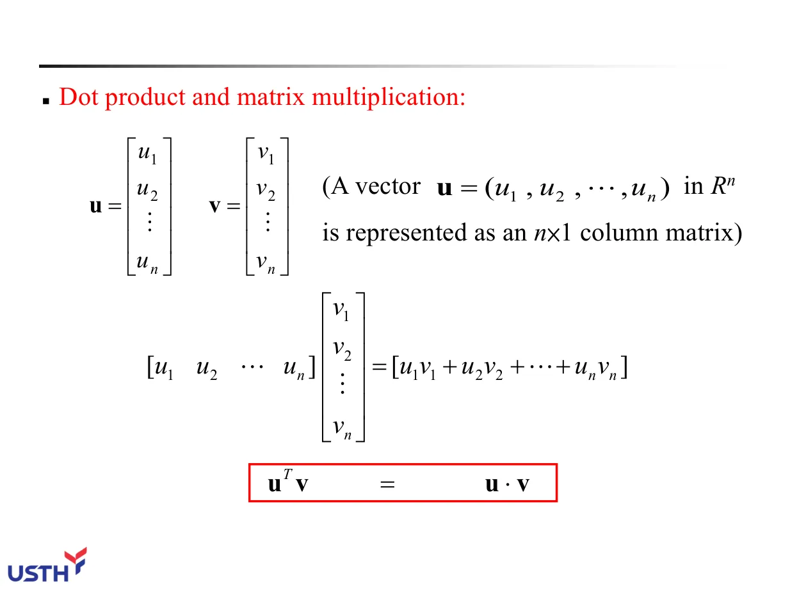
Writing vectors as $n\times1$ columns, $u^Tv=[u_1\ \cdots\ u_n]\begin{bmatrix}v_1\\\vdots\\v_n\end{bmatrix}=[u_1v_1+\cdots+u_nv_n]$, a $1\times1$ matrix: $u^Tv=u\cdot v$. Note that $uv^T$ is a completely different object, an $n\times n$ matrix. This identity is how the dot product enters matrix formulas such as $A^TA$.
Viết vectơ thành cột $n\times1$, $u^Tv=[u_1\ \cdots\ u_n]\begin{bmatrix}v_1\\\vdots\\v_n\end{bmatrix}=[u_1v_1+\cdots+u_nv_n]$, một ma trận $1\times1$: $u^Tv=u\cdot v$. Lưu ý $uv^T$ là một đối tượng hoàn toàn khác, một ma trận $n\times n$. Đẳng thức này là cách tích vô hướng đi vào các công thức ma trận như $A^TA$.
Compute $u^Tv$ and $uv^T$ for $u=(1,2,3)^T$, $v=(4,-5,6)^T$; compare the sizes.
Tính $u^Tv$ và $uv^T$ với $u=(1,2,3)^T$, $v=(4,-5,6)^T$; so sánh cỡ.
Answer and solution · Đáp án và lời giải
Answer · Đáp án: $u^Tv=[12]$ ($1\times1$), $uv^T$ is $3\times3$
$u^Tv=4-10+18=12$. $uv^T=\begin{bmatrix}4&-5&6\\8&-10&12\\12&-15&18\end{bmatrix}$ has size $3\times3$ (rank $1$): a different thing.
$u^Tv=4-10+18=12$. $uv^T=\begin{bmatrix}4&-5&6\\8&-10&12\\12&-15&18\end{bmatrix}$ có cỡ $3\times3$ (hạng $1$): một thứ khác.
5.2 The inner product: four axioms · 5.2 Tích trong: bốn tiên đề
★★★ Core · Cốt lõi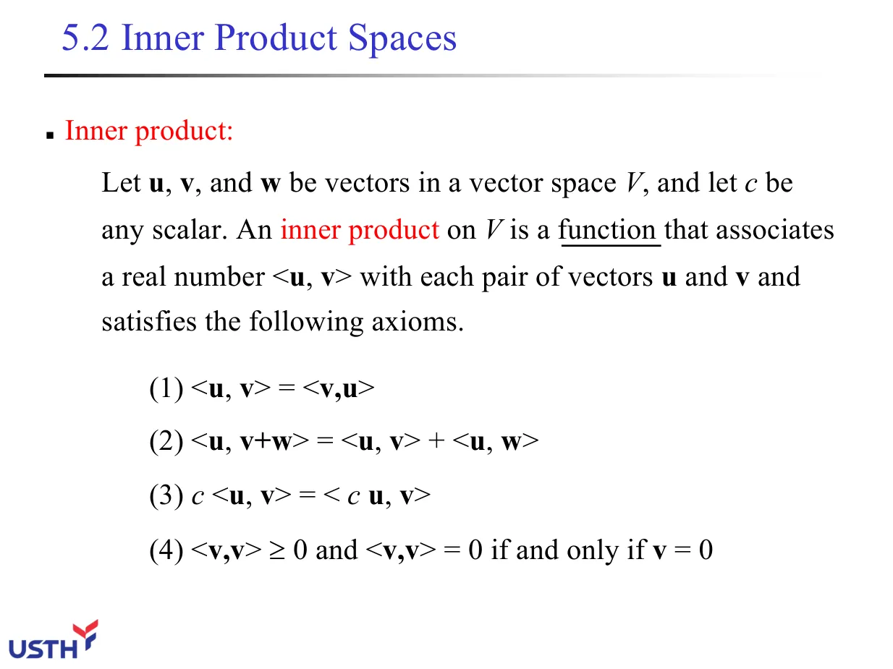
An inner product on a vector space $V$ is a function that assigns a real number $\langle u,v\rangle$ to each pair of vectors and satisfies, for all $u,v,w\in V$ and scalars $c$: (1) $\langle u,v\rangle=\langle v,u\rangle$ (symmetry); (2) $\langle u,v+w\rangle=\langle u,v\rangle+\langle u,w\rangle$ (additivity); (3) $c\langle u,v\rangle=\langle cu,v\rangle$ (homogeneity); (4) $\langle v,v\rangle\ge0$ and $\langle v,v\rangle=0$ iff $v=0$ (positive definiteness). The dot product satisfies all four; so do many other functions.
Tích trong trên không gian vectơ $V$ là hàm gán một số thực $\langle u,v\rangle$ cho mỗi cặp vectơ và thỏa, với mọi $u,v,w\in V$ và vô hướng $c$: (1) $\langle u,v\rangle=\langle v,u\rangle$ (đối xứng); (2) $\langle u,v+w\rangle=\langle u,v\rangle+\langle u,w\rangle$ (cộng tính); (3) $c\langle u,v\rangle=\langle cu,v\rangle$ (thuần nhất); (4) $\langle v,v\rangle\ge0$ và $\langle v,v\rangle=0$ khi và chỉ khi $v=0$ (xác định dương). Tích vô hướng thỏa cả bốn; nhiều hàm khác cũng thỏa.
To prove that a formula is an inner product you must check all four axioms; to disprove it, one counterexample to one axiom suffices (axiom 4 fails most often).
Để chứng minh một công thức là tích trong phải kiểm tra cả bốn tiên đề; để bác bỏ chỉ cần một phản ví dụ cho một tiên đề (tiên đề 4 hay sai nhất).
Which axiom fails for (a) $u_1v_1-u_2v_2$, (b) $u_1v_1+u_2v_2+1$, (c) $|u_1v_1|+|u_2v_2|$ on $\mathbb R^2$? Give numbers.
Tiên đề nào sai với (a) $u_1v_1-u_2v_2$, (b) $u_1v_1+u_2v_2+1$, (c) $|u_1v_1|+|u_2v_2|$ trên $\mathbb R^2$? Cho số cụ thể.
Answer and solution · Đáp án và lời giải
Answer · Đáp án: (a) axiom 4, (b) axiom 4 (and 3), (c) axiom 3
(a) $v=(0,1)$: $\langle v,v\rangle=-1<0$. (b) $v=0$: $\langle0,0\rangle=1\ne0$; also $2\langle u,v\rangle\ne\langle2u,v\rangle$ in general. (c) $u=v=(1,0)$ and $c=-1$: $\langle cu,v\rangle=|{-1}|=1$ but $c\langle u,v\rangle=-1$.
(a) $v=(0,1)$: $\langle v,v\rangle=-1<0$. (b) $v=0$: $\langle0,0\rangle=1\ne0$; ngoài ra nói chung $2\langle u,v\rangle\ne\langle2u,v\rangle$. (c) $u=v=(1,0)$ và $c=-1$: $\langle cu,v\rangle=|{-1}|=1$ nhưng $c\langle u,v\rangle=-1$.
Dot product versus general inner product · Tích vô hướng và tích trong tổng quát
★★ Important · Quan trọng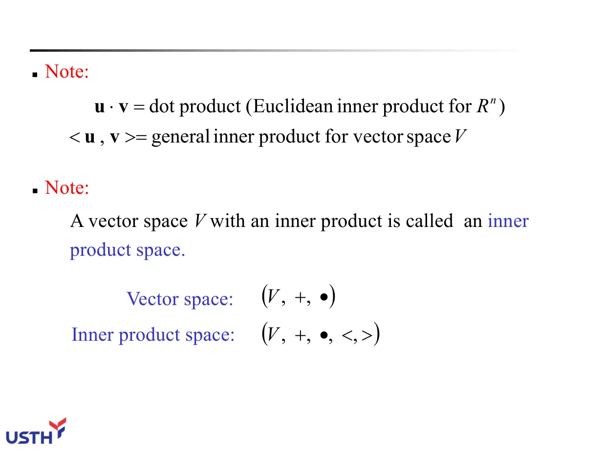
Notation: $u\cdot v$ is the dot product (the Euclidean inner product of $\mathbb R^n$); $\langle u,v\rangle$ denotes a general inner product on a vector space $V$. A vector space with an inner product is an inner product space: the vector space was $(V,+,\cdot)$, the inner product space is $(V,+,\cdot,\langle\ ,\rangle)$.
Ký hiệu: $u\cdot v$ là tích vô hướng (tích trong Euclid của $\mathbb R^n$); $\langle u,v\rangle$ là tích trong tổng quát trên không gian vectơ $V$. Không gian vectơ có một tích trong gọi là không gian tích trong: không gian vectơ là $(V,+,\cdot)$, không gian tích trong là $(V,+,\cdot,\langle\ ,\rangle)$.
Example 1: the Euclidean inner product · Ví dụ 1: tích trong Euclid
★★ Important · Quan trọng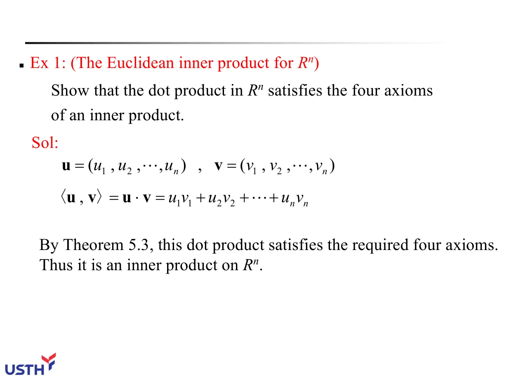
The dot product $\langle u,v\rangle=u\cdot v=u_1v_1+\cdots+u_nv_n$ on $\mathbb R^n$ satisfies the four axioms by Theorem 5.3, so it is an inner product: the Euclidean inner product. Everything of Section 5.1 is the special case of Section 5.2.
Tích vô hướng $\langle u,v\rangle=u\cdot v=u_1v_1+\cdots+u_nv_n$ trên $\mathbb R^n$ thỏa bốn tiên đề theo Định lý 5.3 nên là một tích trong: tích trong Euclid. Mọi thứ của Mục 5.1 là trường hợp đặc biệt của Mục 5.2.
Example 2: a different inner product on $\mathbb R^2$ (axioms 1–2) · Ví dụ 2: một tích trong khác trên $\mathbb R^2$ (tiên đề 1–2)
★★★ Core · Cốt lõi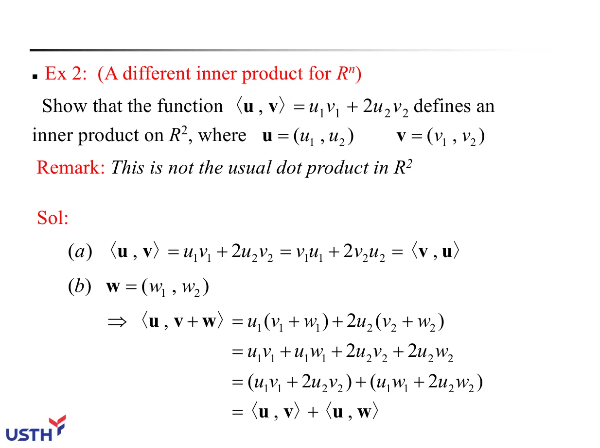
Show that $\langle u,v\rangle=u_1v_1+2u_2v_2$ is an inner product on $\mathbb R^2$ (it is not the usual dot product). (a) Symmetry: $u_1v_1+2u_2v_2=v_1u_1+2v_2u_2=\langle v,u\rangle$. (b) Additivity: $\langle u,v+w\rangle=u_1(v_1+w_1)+2u_2(v_2+w_2)=(u_1v_1+2u_2v_2)+(u_1w_1+2u_2w_2)=\langle u,v\rangle+\langle u,w\rangle$.
Chứng minh $\langle u,v\rangle=u_1v_1+2u_2v_2$ là tích trong trên $\mathbb R^2$ (nó không phải tích vô hướng thông thường). (a) Đối xứng: $u_1v_1+2u_2v_2=v_1u_1+2v_2u_2=\langle v,u\rangle$. (b) Cộng tính: $\langle u,v+w\rangle=u_1(v_1+w_1)+2u_2(v_2+w_2)=(u_1v_1+2u_2v_2)+(u_1w_1+2u_2w_2)=\langle u,v\rangle+\langle u,w\rangle$.
For this inner product compute $\langle u,v\rangle$ with $u=(1,2)$, $v=(3,-1)$ and the length $\|u\|$; compare with the dot product.
Với tích trong này tính $\langle u,v\rangle$ với $u=(1,2)$, $v=(3,-1)$ và độ dài $\|u\|$; so với tích vô hướng.
Answer and solution · Đáp án và lời giải
Answer · Đáp án: $\langle u,v\rangle=-1$, $\|u\|=3$ (dot product: $u\cdot v=1$, $\|u\|=\sqrt5$)
$\langle u,v\rangle=1\cdot3+2\cdot2\cdot(-1)=3-4=-1$. $\|u\|=\sqrt{1+2\cdot4}=3$. The usual dot product gives $u\cdot v=3-2=1$ and $\|u\|=\sqrt5$: the same vectors have different lengths in different inner products.
$\langle u,v\rangle=1\cdot3+2\cdot2\cdot(-1)=3-4=-1$. $\|u\|=\sqrt{1+2\cdot4}=3$. Tích vô hướng thông thường cho $u\cdot v=3-2=1$ và $\|u\|=\sqrt5$: cùng các vectơ có độ dài khác nhau trong các tích trong khác nhau.
Example 2 (continued): axioms 3–4, and weighted inner products · Ví dụ 2 (tiếp): tiên đề 3–4, và tích trong có trọng số
★★★ Core · Cốt lõi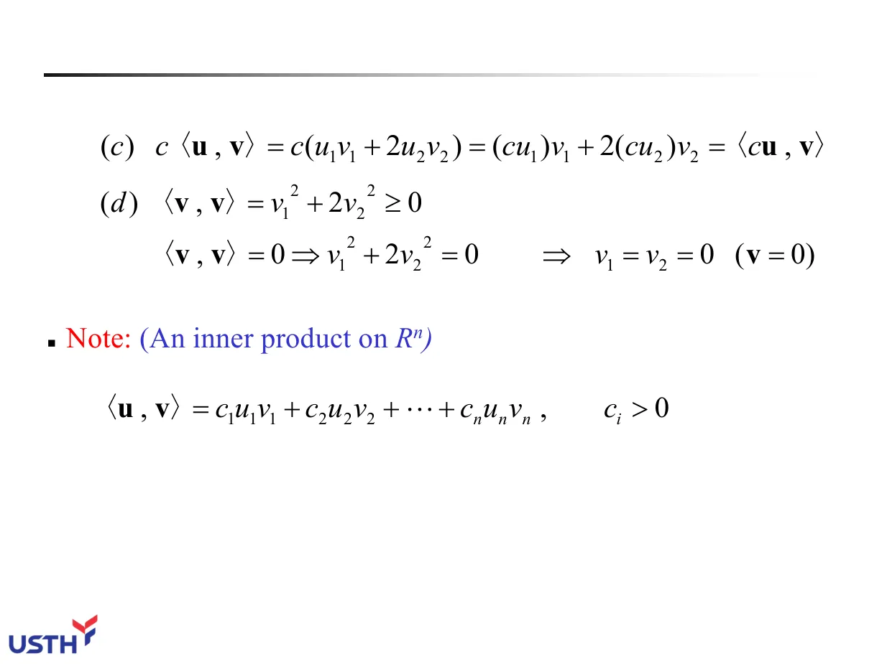
(c) Homogeneity: $c\langle u,v\rangle=c(u_1v_1+2u_2v_2)=(cu_1)v_1+2(cu_2)v_2=\langle cu,v\rangle$. (d) Positivity: $\langle v,v\rangle=v_1^2+2v_2^2\ge0$, and $=0\Rightarrow v_1^2+2v_2^2=0\Rightarrow v_1=v_2=0$. Note: $\langle u,v\rangle=c_1u_1v_1+\cdots+c_nu_nv_n$ is an inner product on $\mathbb R^n$ whenever all weights $c_i>0$.
(c) Thuần nhất: $c\langle u,v\rangle=c(u_1v_1+2u_2v_2)=(cu_1)v_1+2(cu_2)v_2=\langle cu,v\rangle$. (d) Dương: $\langle v,v\rangle=v_1^2+2v_2^2\ge0$, và $=0\Rightarrow v_1^2+2v_2^2=0\Rightarrow v_1=v_2=0$. Lưu ý: $\langle u,v\rangle=c_1u_1v_1+\cdots+c_nu_nv_n$ là tích trong trên $\mathbb R^n$ khi mọi trọng số $c_i>0$.
For $\langle u,v\rangle=u_1v_1+2u_2v_2$ find all vectors orthogonal to $(2,1)$, and compare with the dot product.
Với $\langle u,v\rangle=u_1v_1+2u_2v_2$ tìm mọi vectơ trực giao với $(2,1)$, và so với tích vô hướng.
Answer and solution · Đáp án và lời giải
Answer · Đáp án: $t(1,-1)$ (dot product: $t(1,-2)$)
$\langle(2,1),(v_1,v_2)\rangle=2v_1+2v_2=0$ gives $v_2=-v_1$: $t(1,-1)$. With the dot product $2v_1+v_2=0$ gives $t(1,-2)$. Orthogonality depends on the inner product.
$\langle(2,1),(v_1,v_2)\rangle=2v_1+2v_2=0$ cho $v_2=-v_1$: $t(1,-1)$. Với tích vô hướng $2v_1+v_2=0$ cho $t(1,-2)$. Tính trực giao phụ thuộc vào tích trong.
Example 3: a function that is not an inner product · Ví dụ 3: một hàm không phải tích trong
★★★ Core · Cốt lõi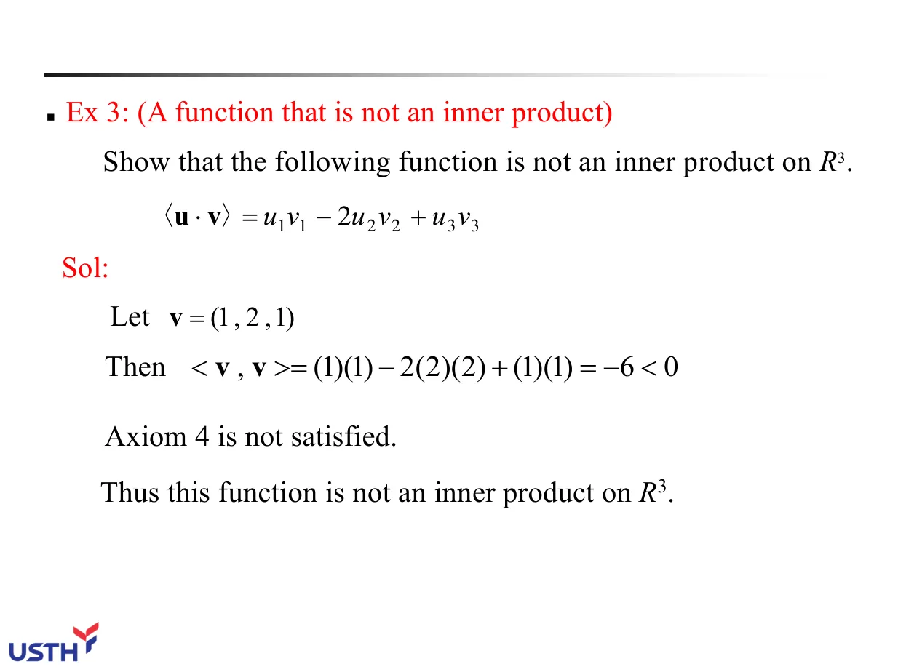
Show that $\langle u,v\rangle=u_1v_1-2u_2v_2+u_3v_3$ is not an inner product on $\mathbb R^3$. Take $v=(1,2,1)$: $\langle v,v\rangle=(1)(1)-2(2)(2)+(1)(1)=-6<0$. Axiom 4 fails, so it is not an inner product. A single bad vector is enough; here the negative weight $-2$ is the culprit.
Chứng minh $\langle u,v\rangle=u_1v_1-2u_2v_2+u_3v_3$ không là tích trong trên $\mathbb R^3$. Lấy $v=(1,2,1)$: $\langle v,v\rangle=(1)(1)-2(2)(2)+(1)(1)=-6<0$. Tiên đề 4 sai nên nó không là tích trong. Một vectơ xấu là đủ; ở đây trọng số âm $-2$ là thủ phạm.
Is $\langle u,v\rangle=u_1v_1+u_1v_2+u_2v_1+u_2v_2$ an inner product on $\mathbb R^2$?
$\langle u,v\rangle=u_1v_1+u_1v_2+u_2v_1+u_2v_2$ có là tích trong trên $\mathbb R^2$ không?
Answer and solution · Đáp án và lời giải
Answer · Đáp án: no: $\langle(1,-1),(1,-1)\rangle=0$ with $(1,-1)\ne0$
The formula equals $(u_1+u_2)(v_1+v_2)$. For $v=(1,-1)$: $\langle v,v\rangle=1-1-1+1=0$ although $v\ne0$, so axiom 4 (definiteness) fails.
Công thức bằng $(u_1+u_2)(v_1+v_2)$. Với $v=(1,-1)$: $\langle v,v\rangle=1-1-1+1=0$ dù $v\ne0$ nên tiên đề 4 (tính xác định) sai.
Theorem 5.7: properties of inner products; the norm · Định lý 5.7: tính chất của tích trong; chuẩn
★★★ Core · Cốt lõi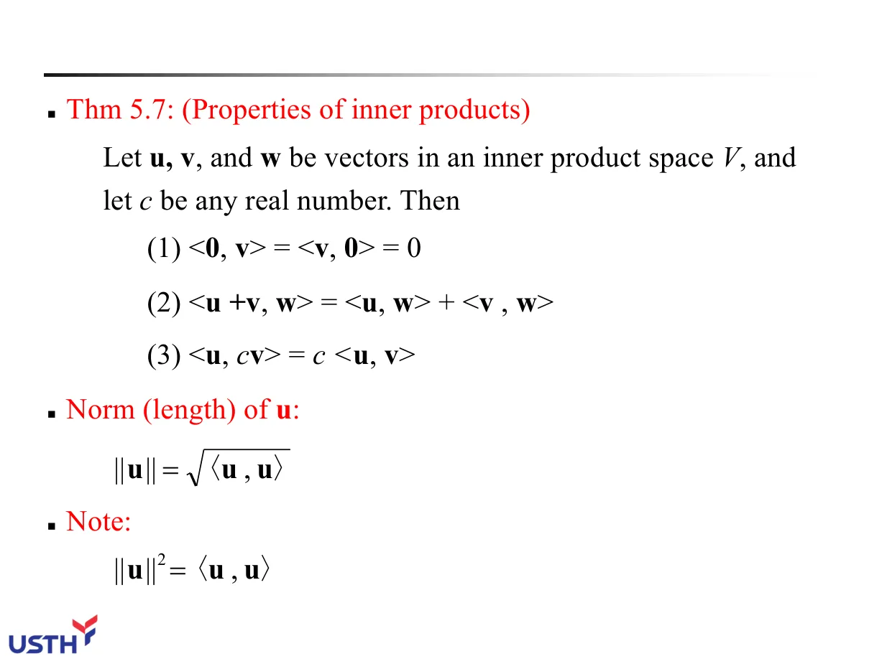
Theorem 5.7. In an inner product space: (1) $\langle0,v\rangle=\langle v,0\rangle=0$; (2) $\langle u+v,w\rangle=\langle u,w\rangle+\langle v,w\rangle$; (3) $\langle u,cv\rangle=c\langle u,v\rangle$. The norm (length) of $u$ is $\|u\|=\sqrt{\langle u,u\rangle}$, so $\|u\|^2=\langle u,u\rangle$. This is exactly the formula of Section 5.1, now relative to whatever inner product the space carries.
Định lý 5.7. Trong không gian tích trong: (1) $\langle0,v\rangle=\langle v,0\rangle=0$; (2) $\langle u+v,w\rangle=\langle u,w\rangle+\langle v,w\rangle$; (3) $\langle u,cv\rangle=c\langle u,v\rangle$. Chuẩn (độ dài) của $u$ là $\|u\|=\sqrt{\langle u,u\rangle}$ nên $\|u\|^2=\langle u,u\rangle$. Đây đúng là công thức của Mục 5.1, nay theo bất kỳ tích trong nào mà không gian mang.
With $\langle u,v\rangle=u_1v_1+2u_2v_2$ compute $\|(2,1)\|$ and check $\langle u,cv\rangle=c\langle u,v\rangle$ for $u=(1,2)$, $v=(3,-1)$, $c=-2$.
Với $\langle u,v\rangle=u_1v_1+2u_2v_2$ tính $\|(2,1)\|$ và kiểm tra $\langle u,cv\rangle=c\langle u,v\rangle$ với $u=(1,2)$, $v=(3,-1)$, $c=-2$.
Answer and solution · Đáp án và lời giải
Answer · Đáp án: $\sqrt6$; both sides equal $2$
$\|(2,1)\|=\sqrt{4+2\cdot1}=\sqrt6$. $cv=(-6,2)$: $\langle u,cv\rangle=1(-6)+2\cdot2\cdot2=2$ and $c\langle u,v\rangle=(-2)(-1)=2$ ✓.
$\|(2,1)\|=\sqrt{4+2\cdot1}=\sqrt6$. $cv=(-6,2)$: $\langle u,cv\rangle=1(-6)+2\cdot2\cdot2=2$ và $c\langle u,v\rangle=(-2)(-1)=2$ ✓.
Distance, angle and orthogonality in an inner product space · Khoảng cách, góc và tính trực giao trong không gian tích trong
★★★ Core · Cốt lõi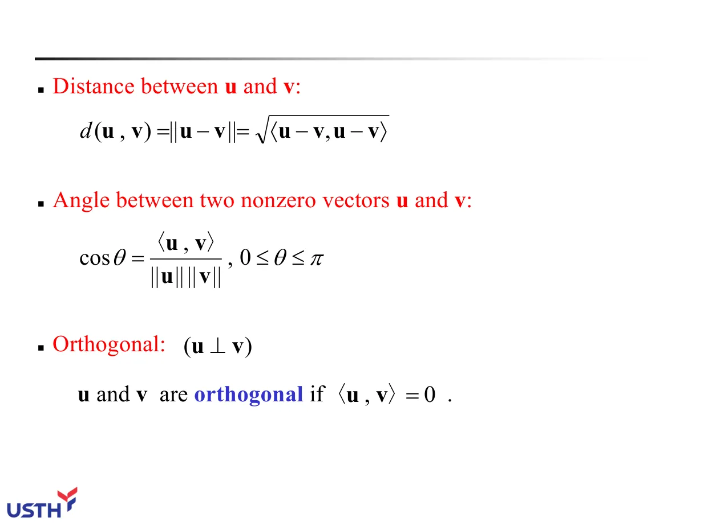
Everything of Section 5.1 transfers: distance $d(u,v)=\|u-v\|=\sqrt{\langle u-v,u-v\rangle}$; angle between nonzero $u,v$: $\cos\theta=\frac{\langle u,v\rangle}{\|u\|\,\|v\|}$, $0\le\theta\le\pi$; orthogonal $u\perp v$ iff $\langle u,v\rangle=0$. Replace the dot by $\langle\ ,\rangle$ and nothing else changes.
Mọi thứ của Mục 5.1 chuyển sang: khoảng cách $d(u,v)=\|u-v\|=\sqrt{\langle u-v,u-v\rangle}$; góc giữa $u,v$ khác không: $\cos\theta=\frac{\langle u,v\rangle}{\|u\|\,\|v\|}$, $0\le\theta\le\pi$; trực giao $u\perp v$ khi và chỉ khi $\langle u,v\rangle=0$. Thay dấu chấm bằng $\langle\ ,\rangle$ thì không có gì khác đổi.
With $\langle u,v\rangle=u_1v_1+2u_2v_2$ find $d((1,0),(0,1))$ and the angle between $(1,0)$ and $(0,1)$.
Với $\langle u,v\rangle=u_1v_1+2u_2v_2$ tìm $d((1,0),(0,1))$ và góc giữa $(1,0)$ và $(0,1)$.
Answer and solution · Đáp án và lời giải
Answer · Đáp án: $\sqrt3$ and $\frac\pi2$
$d=\|(1,-1)\|=\sqrt{1+2\cdot1}=\sqrt3$ (dot product: $\sqrt2$). $\langle(1,0),(0,1)\rangle=0$, so the angle is $\frac\pi2$ in both inner products.
$d=\|(1,-1)\|=\sqrt{1+2\cdot1}=\sqrt3$ (tích vô hướng: $\sqrt2$). $\langle(1,0),(0,1)\rangle=0$ nên góc là $\frac\pi2$ trong cả hai tích trong.
Notes: unit vectors and normalising in an inner product space · Lưu ý: vectơ đơn vị và chuẩn hóa trong không gian tích trong
★★ Important · Quan trọng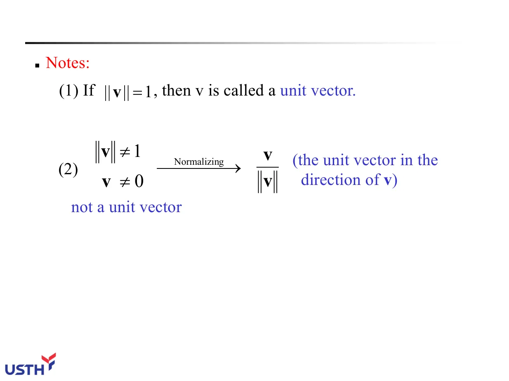
(1) If $\|v\|=1$, $v$ is a unit vector. (2) A nonzero $v$ with $\|v\|\ne1$ is normalised by $\frac v{\|v\|}$. Both notions depend on the chosen inner product: $(1,1)$ has length $\sqrt2$ for the dot product but $\sqrt3$ for $\langle u,v\rangle=u_1v_1+2u_2v_2$.
(1) Nếu $\|v\|=1$ thì $v$ là vectơ đơn vị. (2) Vectơ $v$ khác không với $\|v\|\ne1$ được chuẩn hóa bằng $\frac v{\|v\|}$. Cả hai khái niệm phụ thuộc tích trong được chọn: $(1,1)$ có độ dài $\sqrt2$ với tích vô hướng nhưng $\sqrt3$ với $\langle u,v\rangle=u_1v_1+2u_2v_2$.
Normalise $(1,1)$ for $\langle u,v\rangle=u_1v_1+2u_2v_2$ and verify its length is $1$.
Chuẩn hóa $(1,1)$ với $\langle u,v\rangle=u_1v_1+2u_2v_2$ và kiểm tra độ dài bằng $1$.
Answer and solution · Đáp án và lời giải
Answer · Đáp án: $\left(\frac1{\sqrt3},\frac1{\sqrt3}\right)$
$\|(1,1)\|=\sqrt{1+2}=\sqrt3$, so the unit vector is $\left(\frac1{\sqrt3},\frac1{\sqrt3}\right)$; its length is $\sqrt{\frac13+2\cdot\frac13}=1$ ✓.
$\|(1,1)\|=\sqrt{1+2}=\sqrt3$ nên vectơ đơn vị là $\left(\frac1{\sqrt3},\frac1{\sqrt3}\right)$; độ dài của nó là $\sqrt{\frac13+2\cdot\frac13}=1$ ✓.
Example 6: an inner product on the polynomials $P_n(x)$ · Ví dụ 6: một tích trong trên đa thức $P_n(x)$
★★★ Core · Cốt lõi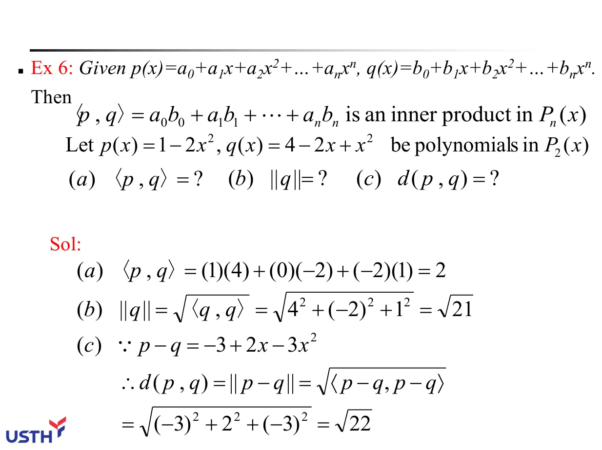
For $p=a_0+a_1x+\cdots+a_nx^n$ and $q=b_0+b_1x+\cdots+b_nx^n$, $\langle p,q\rangle=a_0b_0+a_1b_1+\cdots+a_nb_n$ is an inner product on $P_n(x)$ (the dot product of the coefficient vectors). For $p=1-2x^2$, $q=4-2x+x^2$ in $P_2$: (a) $\langle p,q\rangle=(1)(4)+(0)(-2)+(-2)(1)=2$; (b) $\|q\|=\sqrt{16+4+1}=\sqrt{21}$; (c) $p-q=-3+2x-3x^2$, so $d(p,q)=\sqrt{9+4+9}=\sqrt{22}$.
Với $p=a_0+a_1x+\cdots+a_nx^n$ và $q=b_0+b_1x+\cdots+b_nx^n$, $\langle p,q\rangle=a_0b_0+a_1b_1+\cdots+a_nb_n$ là tích trong trên $P_n(x)$ (tích vô hướng của các vectơ hệ số). Với $p=1-2x^2$, $q=4-2x+x^2$ trong $P_2$: (a) $\langle p,q\rangle=(1)(4)+(0)(-2)+(-2)(1)=2$; (b) $\|q\|=\sqrt{16+4+1}=\sqrt{21}$; (c) $p-q=-3+2x-3x^2$ nên $d(p,q)=\sqrt{9+4+9}=\sqrt{22}$.
In $P_2$ with this inner product take $p=2+x-x^2$ and $q=1-3x+2x^2$: find $\langle p,q\rangle$, $\|p\|$ and $d(p,q)$.
Trong $P_2$ với tích trong này lấy $p=2+x-x^2$ và $q=1-3x+2x^2$: tìm $\langle p,q\rangle$, $\|p\|$ và $d(p,q)$.
Answer and solution · Đáp án và lời giải
Answer · Đáp án: $-3$, $\sqrt6$ and $\sqrt{26}$
Coefficient vectors $(2,1,-1)$ and $(1,-3,2)$: $\langle p,q\rangle=2-3-2=-3$; $\|p\|=\sqrt{4+1+1}=\sqrt6$; $p-q=1+4x-3x^2$, so $d=\sqrt{1+16+9}=\sqrt{26}$.
Vectơ hệ số $(2,1,-1)$ và $(1,-3,2)$: $\langle p,q\rangle=2-3-2=-3$; $\|p\|=\sqrt{4+1+1}=\sqrt6$; $p-q=1+4x-3x^2$ nên $d=\sqrt{1+16+9}=\sqrt{26}$.
Properties of the norm and the distance · Tính chất của chuẩn và khoảng cách
★★ Important · Quan trọng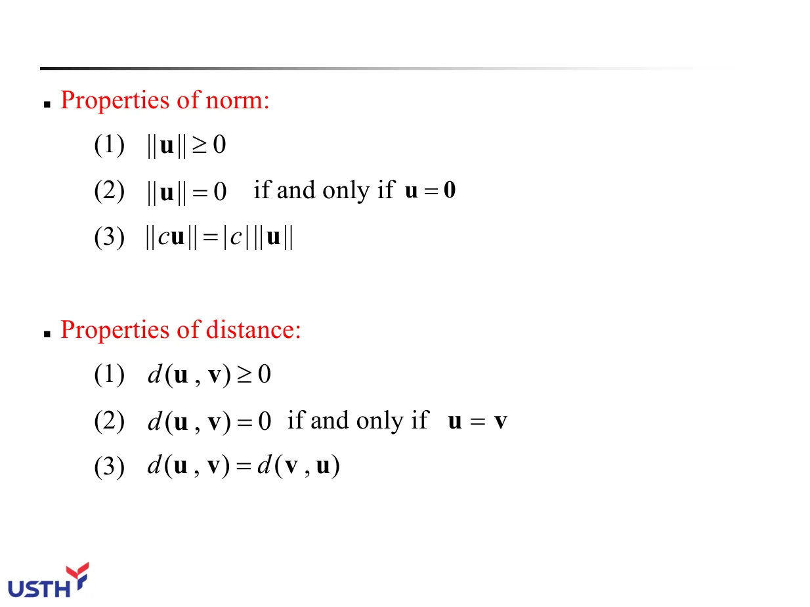
Norm: (1) $\|u\|\ge0$; (2) $\|u\|=0$ iff $u=0$; (3) $\|cu\|=|c|\,\|u\|$. Distance: (1) $d(u,v)\ge0$; (2) $d(u,v)=0$ iff $u=v$; (3) $d(u,v)=d(v,u)$. Together with the triangle inequality $d(u,w)\le d(u,v)+d(v,w)$ these are the properties that make $d$ a sensible notion of distance.
Chuẩn: (1) $\|u\|\ge0$; (2) $\|u\|=0$ khi và chỉ khi $u=0$; (3) $\|cu\|=|c|\,\|u\|$. Khoảng cách: (1) $d(u,v)\ge0$; (2) $d(u,v)=0$ khi và chỉ khi $u=v$; (3) $d(u,v)=d(v,u)$. Cùng với bất đẳng thức tam giác $d(u,w)\le d(u,v)+d(v,w)$ đây là các tính chất làm cho $d$ là một khái niệm khoảng cách hợp lý.
Check $d(u,w)\le d(u,v)+d(v,w)$ for $u=(0,0)$, $v=(3,0)$, $w=(3,4)$.
Kiểm tra $d(u,w)\le d(u,v)+d(v,w)$ với $u=(0,0)$, $v=(3,0)$, $w=(3,4)$.
Answer and solution · Đáp án và lời giải
Answer · Đáp án: $5\le3+4=7$
$d(u,w)=\|(3,4)\|=5$, $d(u,v)=3$, $d(v,w)=4$, and $5\le7$: going through $v$ is longer than going straight (a right triangle with legs $3,4$).
$d(u,w)=\|(3,4)\|=5$, $d(u,v)=3$, $d(v,w)=4$, và $5\le7$: đi qua $v$ dài hơn đi thẳng (tam giác vuông với hai cạnh góc vuông $3,4$).
Theorem 5.8: the three theorems hold in every inner product space · Định lý 5.8: ba định lý đúng trong mọi không gian tích trong
★★★ Core · Cốt lõi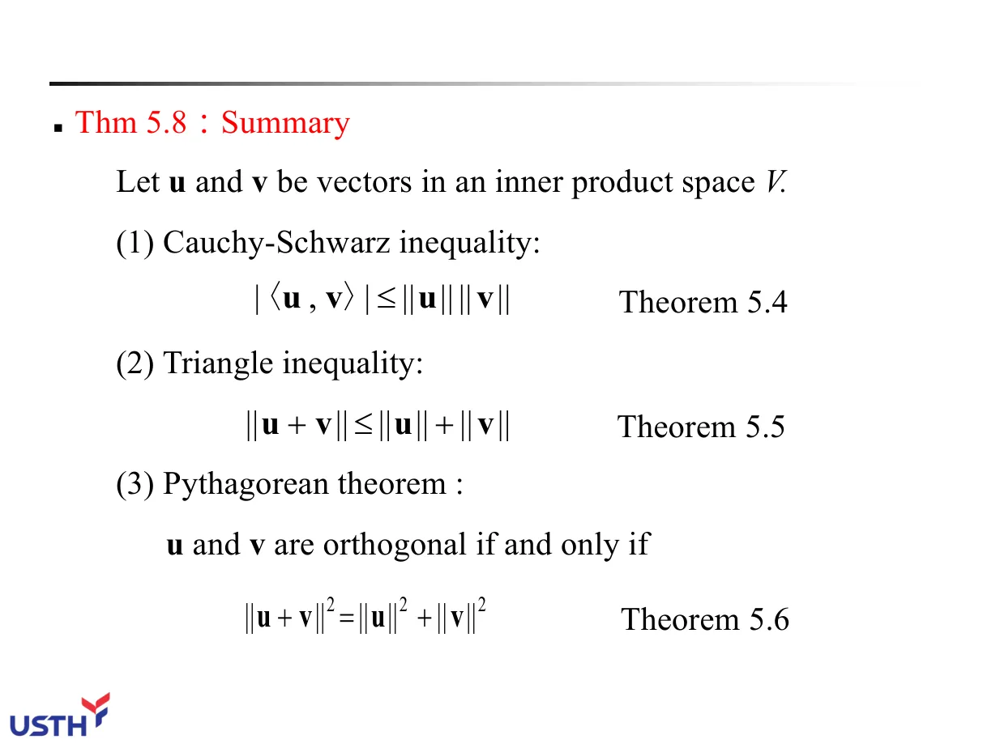
Theorem 5.8. For $u,v$ in an inner product space $V$: (1) Cauchy–Schwarz $|\langle u,v\rangle|\le\|u\|\,\|v\|$; (2) triangle inequality $\|u+v\|\le\|u\|+\|v\|$; (3) Pythagoras: $u\perp v$ iff $\|u+v\|^2=\|u\|^2+\|v\|^2$. The proofs are the same as in $\mathbb R^n$, using only the four axioms.
Định lý 5.8. Với $u,v$ trong không gian tích trong $V$: (1) Cauchy–Schwarz $|\langle u,v\rangle|\le\|u\|\,\|v\|$; (2) bất đẳng thức tam giác $\|u+v\|\le\|u\|+\|v\|$; (3) Pythagore: $u\perp v$ khi và chỉ khi $\|u+v\|^2=\|u\|^2+\|v\|^2$. Các chứng minh giống như trong $\mathbb R^n$, chỉ dùng bốn tiên đề.
With $\langle u,v\rangle=u_1v_1+2u_2v_2$ show that $u=(1,1)$ and $v=(2,-1)$ are orthogonal and satisfy Pythagoras, though $u\cdot v\ne0$.
Với $\langle u,v\rangle=u_1v_1+2u_2v_2$ chứng tỏ $u=(1,1)$ và $v=(2,-1)$ trực giao và thỏa Pythagore, dù $u\cdot v\ne0$.
Answer and solution · Đáp án và lời giải
Answer · Đáp án: $\langle u,v\rangle=0$ and $\|u+v\|^2=9=3+6$
$\langle u,v\rangle=2+2\cdot1\cdot(-1)=0$. $u+v=(3,0)$ with $\|u+v\|^2=9$; $\|u\|^2=1+2=3$, $\|v\|^2=4+2=6$ and $3+6=9$ ✓. For the ordinary dot product $u\cdot v=2-1=1\ne0$, so they are not orthogonal there.
$\langle u,v\rangle=2+2\cdot1\cdot(-1)=0$. $u+v=(3,0)$ với $\|u+v\|^2=9$; $\|u\|^2=1+2=3$, $\|v\|^2=4+2=6$ và $3+6=9$ ✓. Với tích vô hướng thường $u\cdot v=2-1=1\ne0$ nên chúng không trực giao ở đó.
Orthogonal projection onto a vector · Hình chiếu trực giao lên một vectơ
★★★ Core · Cốt lõi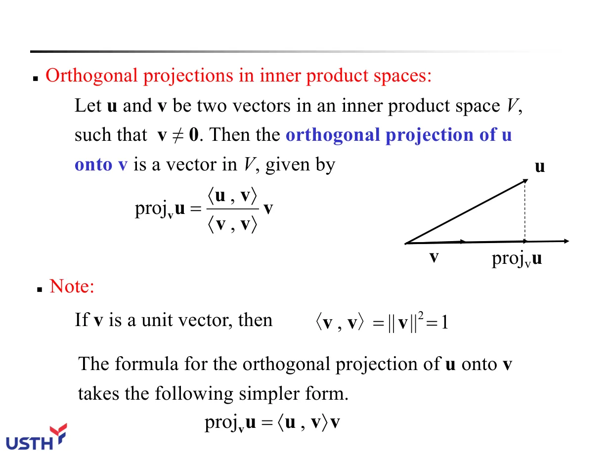
Let $u,v$ be vectors in an inner product space with $v\ne0$. The orthogonal projection of $u$ onto $v$ is $\operatorname{proj}_vu=\dfrac{\langle u,v\rangle}{\langle v,v\rangle}\,v$. If $v$ is a unit vector, $\langle v,v\rangle=1$ and the formula simplifies to $\operatorname{proj}_vu=\langle u,v\rangle v$. The picture: drop a perpendicular from the tip of $u$ to the line through $v$.
Cho $u,v$ là vectơ trong không gian tích trong với $v\ne0$. Hình chiếu trực giao của $u$ lên $v$ là $\operatorname{proj}_vu=\dfrac{\langle u,v\rangle}{\langle v,v\rangle}\,v$. Nếu $v$ là vectơ đơn vị thì $\langle v,v\rangle=1$ và công thức rút gọn thành $\operatorname{proj}_vu=\langle u,v\rangle v$. Hình ảnh: hạ đường vuông góc từ đầu mút của $u$ xuống đường thẳng qua $v$.
This one formula is behind Gram–Schmidt, best approximation and least squares; practise it until it is automatic.
Công thức này nằm sau Gram–Schmidt, xấp xỉ tốt nhất và bình phương tối thiểu; hãy luyện đến khi thành phản xạ.
Find $\operatorname{proj}_vu$ for $u=(1,2,3)$, $v=(1,1,1)$, and for $u=(3,4)$, $v=(1,0)$.
Tìm $\operatorname{proj}_vu$ với $u=(1,2,3)$, $v=(1,1,1)$, và với $u=(3,4)$, $v=(1,0)$.
Answer and solution · Đáp án và lời giải
Answer · Đáp án: $(2,2,2)$ and $(3,0)$
First: $\langle u,v\rangle=6$, $\langle v,v\rangle=3$, so $2v=(2,2,2)$. Second: $\langle u,v\rangle=3$, $\langle v,v\rangle=1$: $3(1,0)=(3,0)$ (the $x$-component).
Bài đầu: $\langle u,v\rangle=6$, $\langle v,v\rangle=3$ nên $2v=(2,2,2)$. Bài sau: $\langle u,v\rangle=3$, $\langle v,v\rangle=1$: $3(1,0)=(3,0)$ (thành phần theo $x$).
Example 10: an orthogonal projection in $\mathbb R^3$ · Ví dụ 10: hình chiếu trực giao trong $\mathbb R^3$
★★★ Core · Cốt lõi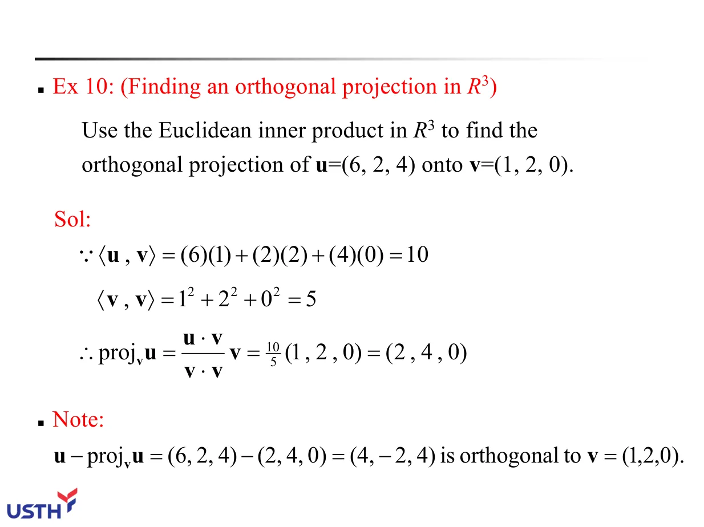
Project $u=(6,2,4)$ onto $v=(1,2,0)$: $\langle u,v\rangle=6+4+0=10$, $\langle v,v\rangle=1+4+0=5$, so $\operatorname{proj}_vu=\frac{10}5(1,2,0)=(2,4,0)$. Note: $u-\operatorname{proj}_vu=(4,-2,4)$ is orthogonal to $v$: $(4,-2,4)\cdot(1,2,0)=4-4+0=0$. This orthogonality of the remainder is the key property.
Chiếu $u=(6,2,4)$ lên $v=(1,2,0)$: $\langle u,v\rangle=6+4+0=10$, $\langle v,v\rangle=1+4+0=5$ nên $\operatorname{proj}_vu=\frac{10}5(1,2,0)=(2,4,0)$. Lưu ý: $u-\operatorname{proj}_vu=(4,-2,4)$ trực giao với $v$: $(4,-2,4)\cdot(1,2,0)=4-4+0=0$. Tính trực giao của phần dư này là tính chất then chốt.
Project $u=(4,1,2)$ onto $v=(1,2,2)$ and check that the remainder is orthogonal to $v$.
Chiếu $u=(4,1,2)$ lên $v=(1,2,2)$ và kiểm tra phần dư trực giao với $v$.
Answer and solution · Đáp án và lời giải
Answer · Đáp án: $\operatorname{proj}_vu=\dfrac{10}9(1,2,2)$; remainder $\frac19(26,-11,-2)$
$\langle u,v\rangle=4+2+4=10$, $\langle v,v\rangle=9$. Remainder $u-\frac{10}9v=\frac19(36-10,\ 9-20,\ 18-20)=\frac19(26,-11,-2)$, and $26-22-4=0$, so it is orthogonal to $(1,2,2)$ ✓.
$\langle u,v\rangle=4+2+4=10$, $\langle v,v\rangle=9$. Phần dư $u-\frac{10}9v=\frac19(36-10,\ 9-20,\ 18-20)=\frac19(26,-11,-2)$, và $26-22-4=0$ nên nó trực giao với $(1,2,2)$ ✓.
Theorem 5.9: the projection is the closest point on the line · Định lý 5.9: hình chiếu là điểm gần nhất trên đường thẳng
★★★ Core · Cốt lõi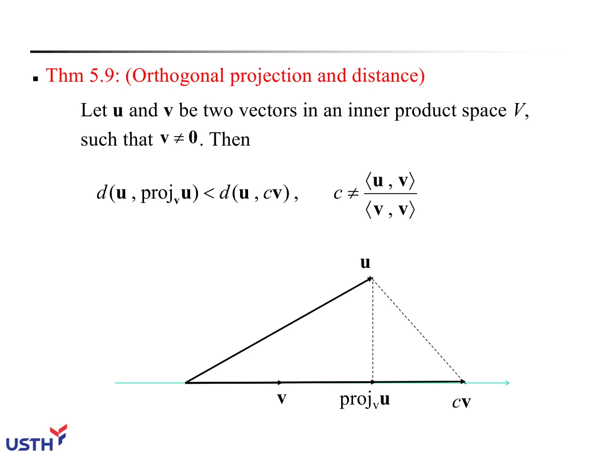
Theorem 5.9. For $v\ne0$: $d(u,\operatorname{proj}_vu)<d(u,cv)$ for every $c\ne\frac{\langle u,v\rangle}{\langle v,v\rangle}$. Among all multiples of $v$, the projection is the one closest to $u$; the perpendicular is the shortest path from a point to a line. The length $\|u-\operatorname{proj}_vu\|$ is the distance from $u$ to the line spanned by $v$.
Định lý 5.9. Với $v\ne0$: $d(u,\operatorname{proj}_vu)<d(u,cv)$ với mọi $c\ne\frac{\langle u,v\rangle}{\langle v,v\rangle}$. Trong mọi bội của $v$, hình chiếu là bội gần nhất với $u$; đường vuông góc là đường ngắn nhất từ một điểm đến một đường thẳng. Độ dài $\|u-\operatorname{proj}_vu\|$ là khoảng cách từ $u$ đến đường thẳng sinh bởi $v$.
Find the distance from $u=(1,2,3)$ to the line spanned by $(1,1,1)$ and compare with $d(u,v)$ for $v=(1,1,1)$ itself.
Tìm khoảng cách từ $u=(1,2,3)$ đến đường thẳng sinh bởi $(1,1,1)$ và so với $d(u,v)$ với chính $v=(1,1,1)$.
Answer and solution · Đáp án và lời giải
Answer · Đáp án: $\sqrt2$, smaller than $\sqrt5$
$\operatorname{proj}=(2,2,2)$, $u-\operatorname{proj}=(-1,0,1)$ with length $\sqrt2$. For $c=1$: $\|u-v\|=\|(0,1,2)\|=\sqrt5>\sqrt2$ ✓.
$\operatorname{proj}=(2,2,2)$, $u-\operatorname{proj}=(-1,0,1)$ có độ dài $\sqrt2$. Với $c=1$: $\|u-v\|=\|(0,1,2)\|=\sqrt5>\sqrt2$ ✓.
5.3 Orthogonal and orthonormal sets · 5.3 Tập trực giao và tập trực chuẩn
★★★ Core · Cốt lõi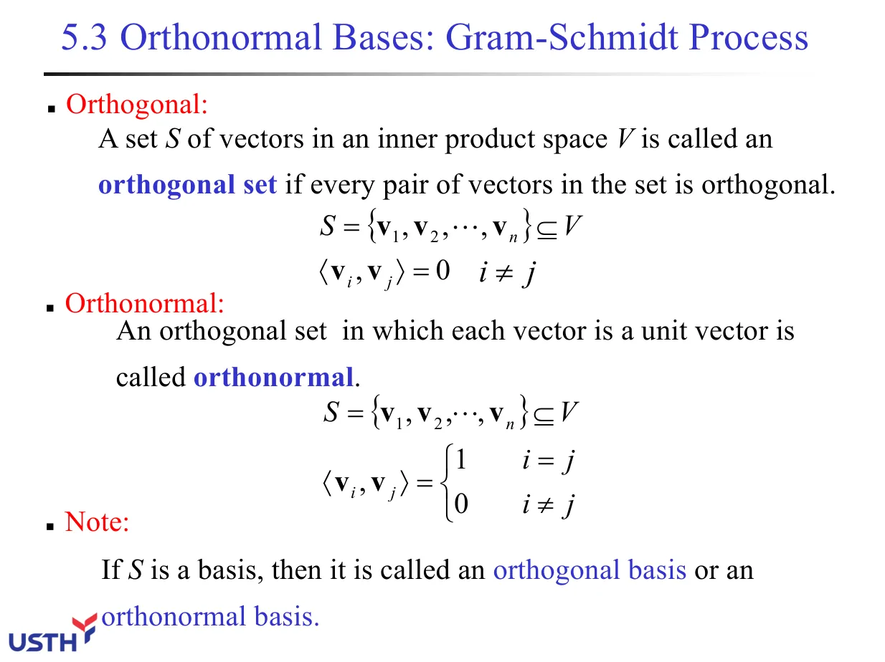
A set $S=\{v_1,\dots,v_n\}$ in an inner product space is orthogonal if every pair is orthogonal: $\langle v_i,v_j\rangle=0$ for $i\ne j$. It is orthonormal if moreover every vector is a unit vector: $\langle v_i,v_j\rangle=1$ for $i=j$ and $0$ for $i\ne j$. If an orthogonal (orthonormal) set is a basis, it is an orthogonal (orthonormal) basis.
Tập $S=\{v_1,\dots,v_n\}$ trong không gian tích trong là trực giao nếu mọi cặp trực giao: $\langle v_i,v_j\rangle=0$ với $i\ne j$. Nó là trực chuẩn nếu hơn nữa mọi vectơ là vectơ đơn vị: $\langle v_i,v_j\rangle=1$ khi $i=j$ và $0$ khi $i\ne j$. Nếu một tập trực giao (trực chuẩn) là cơ sở thì nó là cơ sở trực giao (trực chuẩn).
Is $\{(1,1,0),(1,-1,0),(0,0,2)\}$ orthogonal? orthonormal? Normalise it.
$\{(1,1,0),(1,-1,0),(0,0,2)\}$ có trực giao không? trực chuẩn không? Hãy chuẩn hóa.
Answer and solution · Đáp án và lời giải
Answer · Đáp án: orthogonal, not orthonormal; normalised: $\left(\frac1{\sqrt2},\frac1{\sqrt2},0\right),\left(\frac1{\sqrt2},-\frac1{\sqrt2},0\right),(0,0,1)$
All three pairwise dot products are $0$. The lengths are $\sqrt2,\sqrt2,2$, not $1$. Dividing each vector by its length gives the orthonormal set.
Cả ba tích vô hướng từng cặp đều bằng $0$. Các độ dài là $\sqrt2,\sqrt2,2$, không phải $1$. Chia mỗi vectơ cho độ dài của nó được tập trực chuẩn.
Pictures: the standard bases of $\mathbb R^2$ and $\mathbb R^3$ · Hình: các cơ sở chuẩn của $\mathbb R^2$ và $\mathbb R^3$
★ Context · Bổ trợ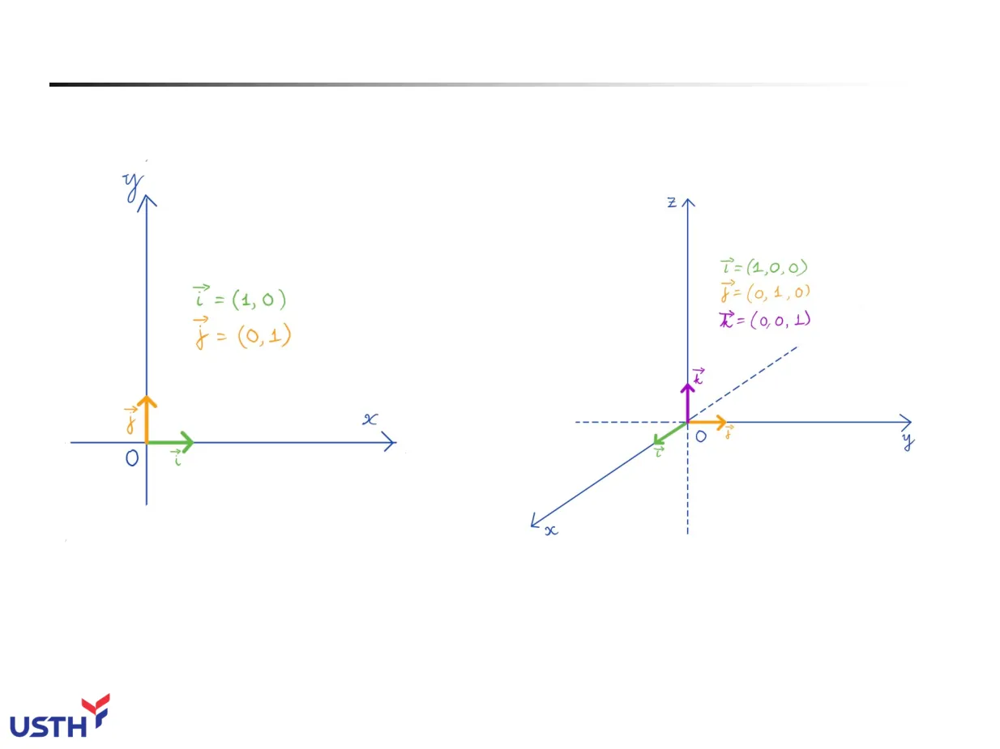
The figures show the standard bases $\{i,j\}$ of $\mathbb R^2$ and $\{i,j,k\}$ of $\mathbb R^3$: mutually perpendicular arrows of length $1$ along the axes. They are the model of an orthonormal basis; the lecture teaches how to find other ones.
Các hình cho thấy các cơ sở chuẩn $\{i,j\}$ của $\mathbb R^2$ và $\{i,j,k\}$ của $\mathbb R^3$: các mũi tên đôi một vuông góc, dài $1$ dọc theo các trục. Chúng là mô hình của cơ sở trực chuẩn; bài học dạy cách tìm những cơ sở khác.
Example 1: a nonstandard orthonormal basis of $\mathbb R^3$, orthogonality · Ví dụ 1: cơ sở trực chuẩn không chuẩn của $\mathbb R^3$, tính trực giao
★★ Important · Quan trọng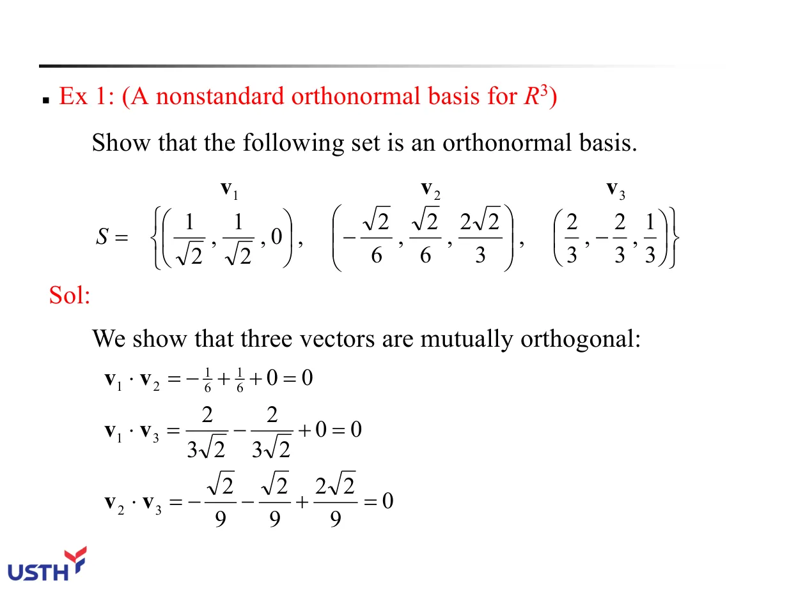
$S=\{v_1,v_2,v_3\}$ with $v_1=\left(\frac1{\sqrt2},\frac1{\sqrt2},0\right)$, $v_2=\left(-\frac{\sqrt2}6,\frac{\sqrt2}6,\frac{2\sqrt2}3\right)$, $v_3=\left(\frac23,-\frac23,\frac13\right)$. First show the vectors are mutually orthogonal: $v_1\cdot v_2=-\frac16+\frac16+0=0$; $v_1\cdot v_3=\frac2{3\sqrt2}-\frac2{3\sqrt2}+0=0$; $v_2\cdot v_3=-\frac{\sqrt2}9-\frac{\sqrt2}9+\frac{2\sqrt2}9=0$.
$S=\{v_1,v_2,v_3\}$ với $v_1=\left(\frac1{\sqrt2},\frac1{\sqrt2},0\right)$, $v_2=\left(-\frac{\sqrt2}6,\frac{\sqrt2}6,\frac{2\sqrt2}3\right)$, $v_3=\left(\frac23,-\frac23,\frac13\right)$. Trước hết chứng tỏ các vectơ đôi một trực giao: $v_1\cdot v_2=-\frac16+\frac16+0=0$; $v_1\cdot v_3=\frac2{3\sqrt2}-\frac2{3\sqrt2}+0=0$; $v_2\cdot v_3=-\frac{\sqrt2}9-\frac{\sqrt2}9+\frac{2\sqrt2}9=0$.
Is $\left\{\left(\frac35,\frac45\right),\left(-\frac45,\frac35\right)\right\}$ orthonormal? Is $\{(1,2),(2,-1)\}$?
$\left\{\left(\frac35,\frac45\right),\left(-\frac45,\frac35\right)\right\}$ có trực chuẩn không? $\{(1,2),(2,-1)\}$ thì sao?
Answer and solution · Đáp án và lời giải
Answer · Đáp án: yes; no (orthogonal but of length $\sqrt5$)
First pair: dot $-\frac{12}{25}+\frac{12}{25}=0$ and each length $\sqrt{\frac9{25}+\frac{16}{25}}=1$. Second pair: dot $2-2=0$, but each length is $\sqrt5\ne1$.
Cặp đầu: tích vô hướng $-\frac{12}{25}+\frac{12}{25}=0$ và mỗi độ dài $\sqrt{\frac9{25}+\frac{16}{25}}=1$. Cặp sau: tích vô hướng $2-2=0$ nhưng mỗi độ dài là $\sqrt5\ne1$.
Example 1: the lengths are all $1$ · Ví dụ 1: tất cả độ dài bằng $1$
★★ Important · Quan trọng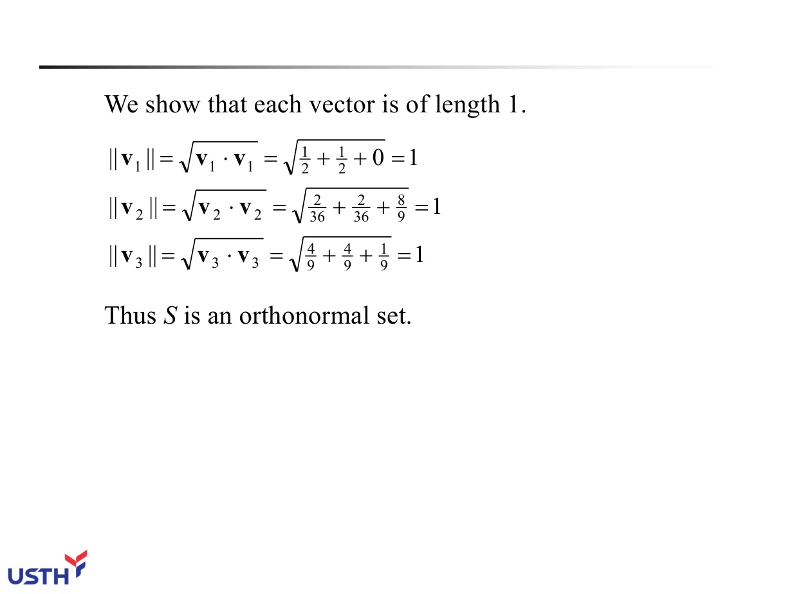
Each vector has length $1$: $\|v_1\|=\sqrt{\frac12+\frac12+0}=1$; $\|v_2\|=\sqrt{\frac2{36}+\frac2{36}+\frac89}=1$; $\|v_3\|=\sqrt{\frac49+\frac49+\frac19}=1$. So $S$ is an orthonormal set of $3$ vectors in $\mathbb R^3$, hence (Corollary of Theorem 5.10 below) an orthonormal basis.
Mỗi vectơ có độ dài $1$: $\|v_1\|=\sqrt{\frac12+\frac12+0}=1$; $\|v_2\|=\sqrt{\frac2{36}+\frac2{36}+\frac89}=1$; $\|v_3\|=\sqrt{\frac49+\frac49+\frac19}=1$. Vậy $S$ là tập trực chuẩn gồm $3$ vectơ trong $\mathbb R^3$, do đó (Hệ quả của Định lý 5.10 dưới đây) là cơ sở trực chuẩn.
Scale $(1,2,2)$, $(2,1,-2)$, $(2,-2,1)$ to an orthonormal basis of $\mathbb R^3$.
Co giãn $(1,2,2)$, $(2,1,-2)$, $(2,-2,1)$ thành cơ sở trực chuẩn của $\mathbb R^3$.
Answer and solution · Đáp án và lời giải
Answer · Đáp án: multiply each by $\dfrac13$
The three vectors are pairwise orthogonal ($2+2-4=0$, $2-4+2=0$, $4-2-2=0$) and each has length $3$; dividing by $3$ gives $Q$ with $Q^TQ=I$.
Ba vectơ đôi một trực giao ($2+2-4=0$, $2-4+2=0$, $4-2-2=0$) và mỗi vectơ dài $3$; chia cho $3$ được $Q$ với $Q^TQ=I$.
Example 2: the standard basis of the polynomial space is orthonormal · Ví dụ 2: cơ sở chuẩn của không gian đa thức là trực chuẩn
★★★ Core · Cốt lõi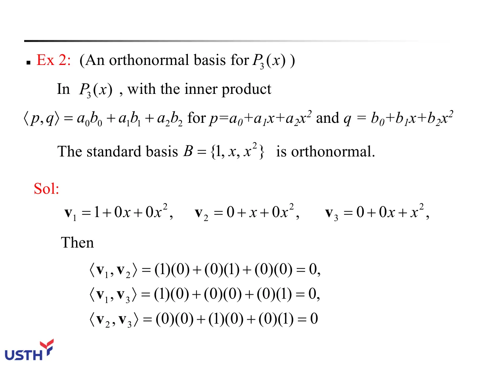
With $\langle p,q\rangle=a_0b_0+a_1b_1+a_2b_2$ for $p=a_0+a_1x+a_2x^2$ and $q=b_0+b_1x+b_2x^2$, the standard basis $B=\{1,x,x^2\}$ is orthonormal: $v_1=1+0x+0x^2$, $v_2=0+x+0x^2$, $v_3=0+0x+x^2$ and $\langle v_1,v_2\rangle=\langle v_1,v_3\rangle=\langle v_2,v_3\rangle=0$. Caution on notation: the slide calls this space $P_3(x)$, but the polynomials have degree $\le2$ (three coefficients), which is $P_2(x)$ in the notation of Lecture 4 ($\dim=3$). With a fourth term $a_3b_3$ the same statement holds for $\{1,x,x^2,x^3\}$ in $P_3$.
Với $\langle p,q\rangle=a_0b_0+a_1b_1+a_2b_2$ cho $p=a_0+a_1x+a_2x^2$ và $q=b_0+b_1x+b_2x^2$, cơ sở chuẩn $B=\{1,x,x^2\}$ là trực chuẩn: $v_1=1+0x+0x^2$, $v_2=0+x+0x^2$, $v_3=0+0x+x^2$ và $\langle v_1,v_2\rangle=\langle v_1,v_3\rangle=\langle v_2,v_3\rangle=0$. Cảnh báo ký hiệu: slide gọi không gian này là $P_3(x)$ nhưng các đa thức có bậc $\le2$ (ba hệ số), tức $P_2(x)$ theo ký hiệu của Bài 4 ($\dim=3$). Với thêm số hạng $a_3b_3$ phát biểu tương tự đúng cho $\{1,x,x^2,x^3\}$ trong $P_3$.
Check that $\langle p,q\rangle$ equals the dot product of the coordinate vectors relative to $\{1,x,x^2\}$ for $p=3-x+2x^2$, $q=1+4x$.
Kiểm tra $\langle p,q\rangle$ bằng tích vô hướng của các vectơ tọa độ theo $\{1,x,x^2\}$ với $p=3-x+2x^2$, $q=1+4x$.
Answer and solution · Đáp án và lời giải
Answer · Đáp án: $\langle p,q\rangle=3-4+0=-1=(3,-1,2)\cdot(1,4,0)$
Coordinates $[p]=(3,-1,2)$ and $[q]=(1,4,0)$; $\langle p,q\rangle=3\cdot1+(-1)\cdot4+2\cdot0=-1$. For an orthonormal basis the inner product is the dot product of the coordinates.
Tọa độ $[p]=(3,-1,2)$ và $[q]=(1,4,0)$; $\langle p,q\rangle=3\cdot1+(-1)\cdot4+2\cdot0=-1$. Với cơ sở trực chuẩn tích trong chính là tích vô hướng của các tọa độ.
Example 2: the norms, and Homework 2 · Ví dụ 2: các chuẩn, và Bài tập về nhà 2
★★ Important · Quan trọng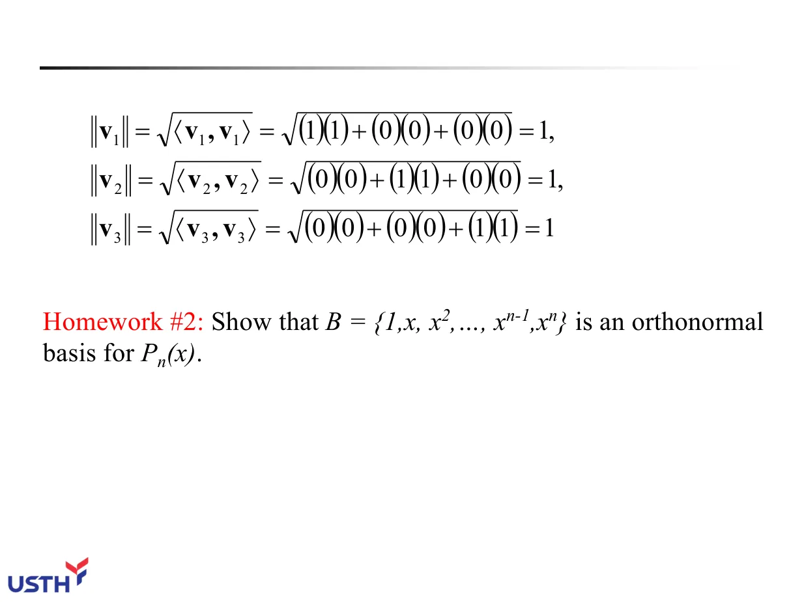
The norms are $\|v_1\|=\|v_2\|=\|v_3\|=1$, so $B$ is an orthonormal set. Homework 2 on the slide: show that $B=\{1,x,x^2,\dots,x^{n-1},x^n\}$ is an orthonormal basis for $P_n(x)$ (same idea: the coefficient vectors are the standard basis vectors $e_1,\dots,e_{n+1}$ of $\mathbb R^{n+1}$).
Các chuẩn là $\|v_1\|=\|v_2\|=\|v_3\|=1$ nên $B$ là tập trực chuẩn. Bài tập về nhà 2 trên slide: chứng minh $B=\{1,x,x^2,\dots,x^{n-1},x^n\}$ là cơ sở trực chuẩn của $P_n(x)$ (cùng ý tưởng: các vectơ hệ số là các vectơ cơ sở chuẩn $e_1,\dots,e_{n+1}$ của $\mathbb R^{n+1}$).
In $P_1(x)$ with $\langle p,q\rangle=a_0b_0+a_1b_1$ show that $\{1+x,\ 1-x\}$ is orthogonal and give an orthonormal basis.
Trong $P_1(x)$ với $\langle p,q\rangle=a_0b_0+a_1b_1$ chứng tỏ $\{1+x,\ 1-x\}$ trực giao và cho một cơ sở trực chuẩn.
Answer and solution · Đáp án và lời giải
Answer · Đáp án: $\left\{\frac{1+x}{\sqrt2},\frac{1-x}{\sqrt2}\right\}$
$\langle1+x,1-x\rangle=1\cdot1+1\cdot(-1)=0$; each has norm $\sqrt{1+1}=\sqrt2$, so divide each by $\sqrt2$.
$\langle1+x,1-x\rangle=1\cdot1+1\cdot(-1)=0$; mỗi đa thức có chuẩn $\sqrt{1+1}=\sqrt2$ nên chia mỗi đa thức cho $\sqrt2$.
Theorem 5.10: orthogonal sets are linearly independent · Định lý 5.10: tập trực giao thì độc lập tuyến tính
★★★ Core · Cốt lõi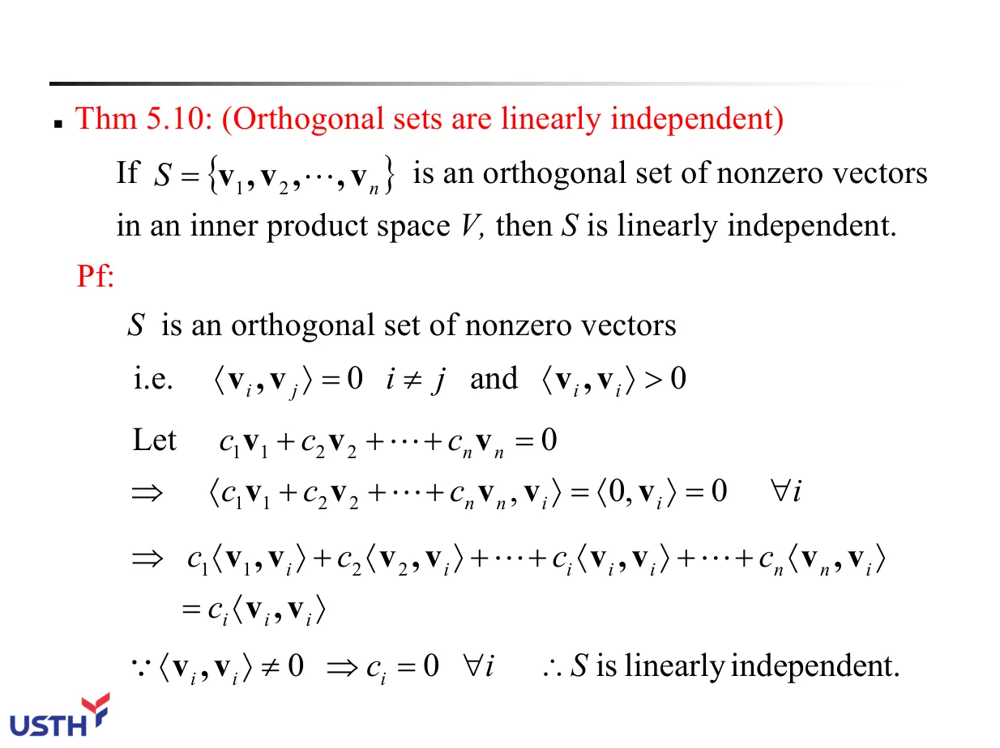
Theorem 5.10. An orthogonal set $S=\{v_1,\dots,v_n\}$ of nonzero vectors in an inner product space is linearly independent. Proof: let $c_1v_1+\cdots+c_nv_n=0$. Take the inner product with $v_i$: $0=\langle c_1v_1+\cdots+c_nv_n,v_i\rangle=c_i\langle v_i,v_i\rangle$, since all the other terms vanish by orthogonality. As $\langle v_i,v_i\rangle\ne0$, $c_i=0$ for every $i$.
Định lý 5.10. Tập trực giao $S=\{v_1,\dots,v_n\}$ gồm các vectơ khác không trong không gian tích trong thì độc lập tuyến tính. Chứng minh: cho $c_1v_1+\cdots+c_nv_n=0$. Lấy tích trong với $v_i$: $0=\langle c_1v_1+\cdots+c_nv_n,v_i\rangle=c_i\langle v_i,v_i\rangle$, vì mọi số hạng khác triệt tiêu do tính trực giao. Vì $\langle v_i,v_i\rangle\ne0$ nên $c_i=0$ với mọi $i$.
Show that $(1,1,1)$, $(1,-1,0)$, $(1,1,-2)$ are independent without row reduction, then confirm with a determinant.
Chứng tỏ $(1,1,1)$, $(1,-1,0)$, $(1,1,-2)$ độc lập mà không cần rút gọn hàng, rồi kiểm tra bằng định thức.
Answer and solution · Đáp án và lời giải
Answer · Đáp án: pairwise orthogonal, nonzero; $\det=6\ne0$
Dot products: $1-1+0=0$, $1+1-2=0$, $1-1+0=0$. By Theorem 5.10 they are independent. The matrix with these columns has $\det=6\ne0$ ($=\sqrt3\sqrt2\sqrt6$, the product of the lengths, as it must be for an orthogonal matrix).
Tích vô hướng: $1-1+0=0$, $1+1-2=0$, $1-1+0=0$. Theo Định lý 5.10 chúng độc lập. Ma trận có các cột này có $\det=6\ne0$ ($=\sqrt3\sqrt2\sqrt6$, tích các độ dài, đúng như phải có với ma trận có cột trực giao).
Corollary to Theorem 5.10 · Hệ quả của Định lý 5.10
★★★ Core · Cốt lõi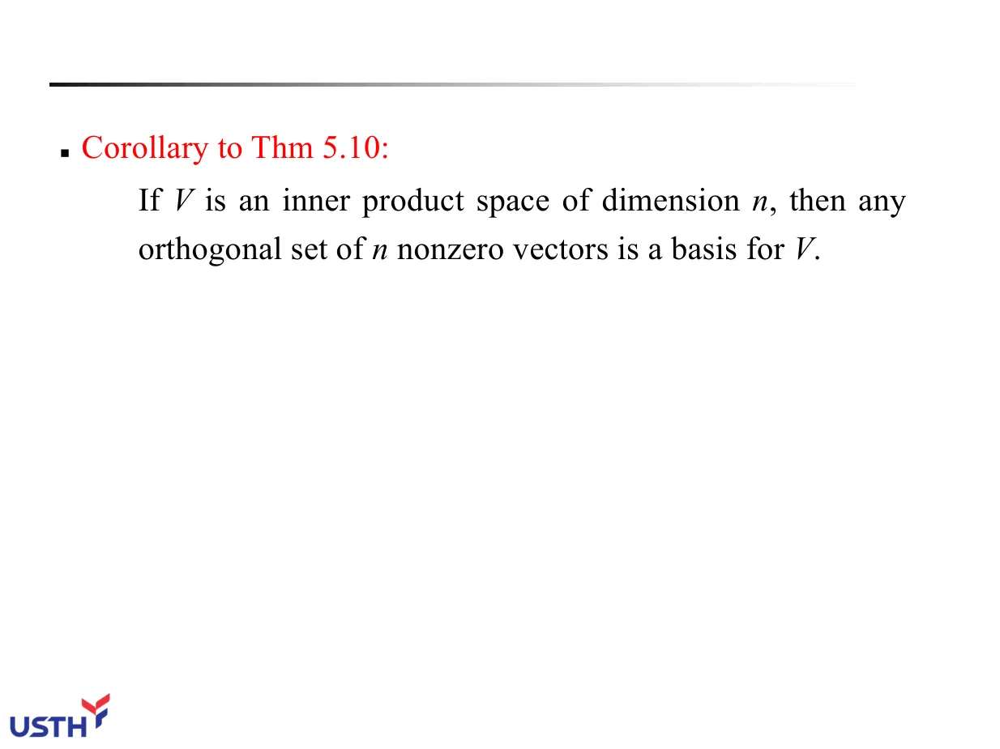
Corollary. If $V$ is an inner product space of dimension $n$, then any orthogonal set of $n$ nonzero vectors is a basis of $V$. The reason: independent + exactly $n$ vectors in an $n$-dimensional space = basis (Theorem 4.11). So to prove a set is a basis you may just check orthogonality, which only needs dot products.
Hệ quả. Nếu $V$ là không gian tích trong số chiều $n$ thì mọi tập trực giao gồm $n$ vectơ khác không là cơ sở của $V$. Lý do: độc lập + đúng $n$ vectơ trong không gian $n$ chiều = cơ sở (Định lý 4.11). Vậy để chứng minh một tập là cơ sở chỉ cần kiểm tra tính trực giao, chỉ cần tích vô hướng.
Complete $\{(1,2,2),(2,1,-2)\}$ to an orthogonal basis of $\mathbb R^3$.
Bổ sung $\{(1,2,2),(2,1,-2)\}$ thành cơ sở trực giao của $\mathbb R^3$.
Answer and solution · Đáp án và lời giải
Answer · Đáp án: add $(2,-2,1)$
The third vector must be orthogonal to both: it is the cross product $(1,2,2)\times(2,1,-2)=(-6,6,-3)\propto(2,-2,1)$. Check $(2,-2,1)\cdot(1,2,2)=0$ and $(2,-2,1)\cdot(2,1,-2)=0$; three orthogonal nonzero vectors in $\mathbb R^3$ form a basis.
Vectơ thứ ba phải trực giao với cả hai: đó là tích có hướng $(1,2,2)\times(2,1,-2)=(-6,6,-3)\propto(2,-2,1)$. Kiểm tra $(2,-2,1)\cdot(1,2,2)=0$ và $(2,-2,1)\cdot(2,1,-2)=0$; ba vectơ khác không đôi một trực giao trong $\mathbb R^3$ tạo thành cơ sở.
Example 4: using orthogonality to test for a basis · Ví dụ 4: dùng tính trực giao để kiểm tra cơ sở
★★★ Core · Cốt lõi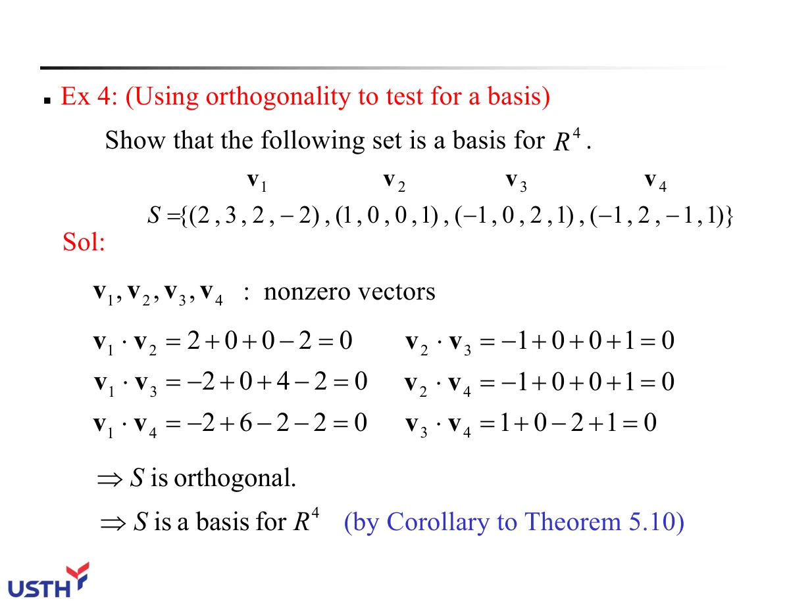
Show that $S=\{(2,3,2,-2),(1,0,0,1),(-1,0,2,1),(-1,2,-1,1)\}$ is a basis of $\mathbb R^4$. The vectors are nonzero, and all six dot products are $0$: $v_1\cdot v_2=2-2=0$, $v_1\cdot v_3=-2+4-2=0$, $v_1\cdot v_4=-2+6-2-2=0$, $v_2\cdot v_3=-1+1=0$, $v_2\cdot v_4=-1+1=0$, $v_3\cdot v_4=1-2+1=0$. So $S$ is orthogonal, hence a basis by the Corollary.
Chứng minh $S=\{(2,3,2,-2),(1,0,0,1),(-1,0,2,1),(-1,2,-1,1)\}$ là cơ sở của $\mathbb R^4$. Các vectơ khác không và cả sáu tích vô hướng đều bằng $0$: $v_1\cdot v_2=2-2=0$, $v_1\cdot v_3=-2+4-2=0$, $v_1\cdot v_4=-2+6-2-2=0$, $v_2\cdot v_3=-1+1=0$, $v_2\cdot v_4=-1+1=0$, $v_3\cdot v_4=1-2+1=0$. Vậy $S$ trực giao, do đó là cơ sở theo Hệ quả.
Show that the four vectors $(1,1,1,1)$, $(1,1,-1,-1)$, $(1,-1,1,-1)$, $(1,-1,-1,1)$ form a basis of $\mathbb R^4$.
Chứng tỏ bốn vectơ $(1,1,1,1)$, $(1,1,-1,-1)$, $(1,-1,1,-1)$, $(1,-1,-1,1)$ tạo thành cơ sở của $\mathbb R^4$.
Answer and solution · Đáp án và lời giải
Answer · Đáp án: pairwise orthogonal, so a basis ($H^TH=4I$)
With these vectors as columns of $H$, $H^TH=4I_4$: the off-diagonal entries (pairwise dot products) are $0$ and each vector has $\|v\|^2=4$. Four orthogonal nonzero vectors in $\mathbb R^4$ are a basis.
Với các vectơ này làm cột của $H$, $H^TH=4I_4$: các phần tử ngoài đường chéo (tích vô hướng từng cặp) bằng $0$ và mỗi vectơ có $\|v\|^2=4$. Bốn vectơ khác không đôi một trực giao trong $\mathbb R^4$ là cơ sở.
Theorem 5.11: coordinates relative to an orthonormal basis · Định lý 5.11: tọa độ theo cơ sở trực chuẩn
★★★ Core · Cốt lõi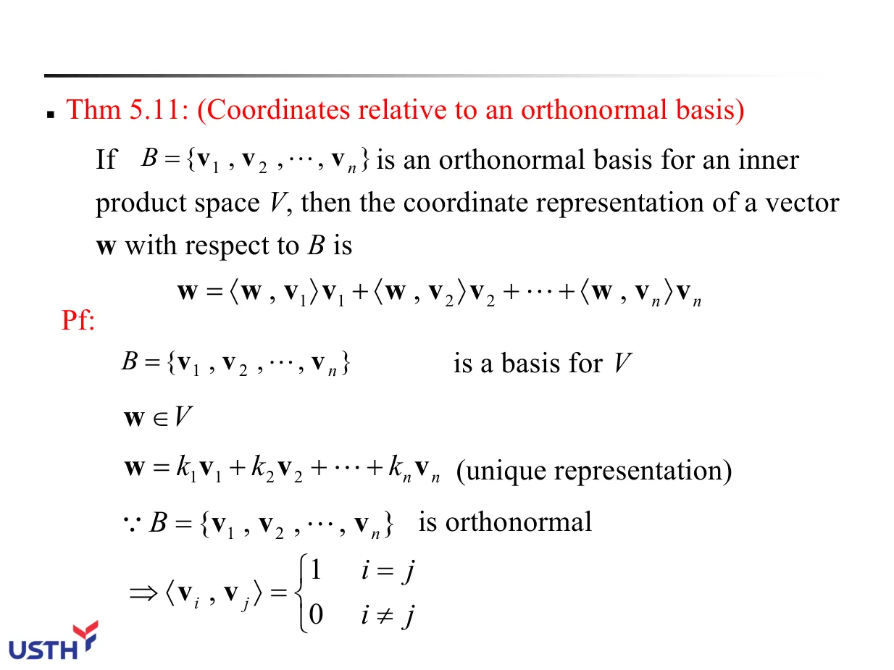
Theorem 5.11. If $B=\{v_1,\dots,v_n\}$ is an orthonormal basis of $V$, every $w\in V$ is $w=\langle w,v_1\rangle v_1+\langle w,v_2\rangle v_2+\cdots+\langle w,v_n\rangle v_n$. Proof: write $w=k_1v_1+\cdots+k_nv_n$ (unique representation). Taking the inner product with $v_i$ kills every term except $k_i\langle v_i,v_i\rangle=k_i$, so $k_i=\langle w,v_i\rangle$.
Định lý 5.11. Nếu $B=\{v_1,\dots,v_n\}$ là cơ sở trực chuẩn của $V$ thì mọi $w\in V$ có dạng $w=\langle w,v_1\rangle v_1+\langle w,v_2\rangle v_2+\cdots+\langle w,v_n\rangle v_n$. Chứng minh: viết $w=k_1v_1+\cdots+k_nv_n$ (biểu diễn duy nhất). Lấy tích trong với $v_i$ triệt tiêu mọi số hạng trừ $k_i\langle v_i,v_i\rangle=k_i$, nên $k_i=\langle w,v_i\rangle$.
Find the coordinates of $w=(3,5)$ relative to $B=\left\{\left(\frac1{\sqrt2},\frac1{\sqrt2}\right),\left(-\frac1{\sqrt2},\frac1{\sqrt2}\right)\right\}$.
Tìm tọa độ của $w=(3,5)$ theo $B=\left\{\left(\frac1{\sqrt2},\frac1{\sqrt2}\right),\left(-\frac1{\sqrt2},\frac1{\sqrt2}\right)\right\}$.
Answer and solution · Đáp án và lời giải
Answer · Đáp án: $[w]_B=(4\sqrt2,\ \sqrt2)^T$
$\langle w,v_1\rangle=\frac{3+5}{\sqrt2}=4\sqrt2$ and $\langle w,v_2\rangle=\frac{-3+5}{\sqrt2}=\sqrt2$. Check: $4\sqrt2\,v_1+\sqrt2\,v_2=(4,4)+(-1,1)=(3,5)$ ✓. No linear system to solve.
$\langle w,v_1\rangle=\frac{3+5}{\sqrt2}=4\sqrt2$ và $\langle w,v_2\rangle=\frac{-3+5}{\sqrt2}=\sqrt2$. Kiểm tra: $4\sqrt2\,v_1+\sqrt2\,v_2=(4,4)+(-1,1)=(3,5)$ ✓. Không phải giải hệ tuyến tính.
The coordinate matrix is a column of inner products · Ma trận tọa độ là cột các tích trong
★★★ Core · Cốt lõi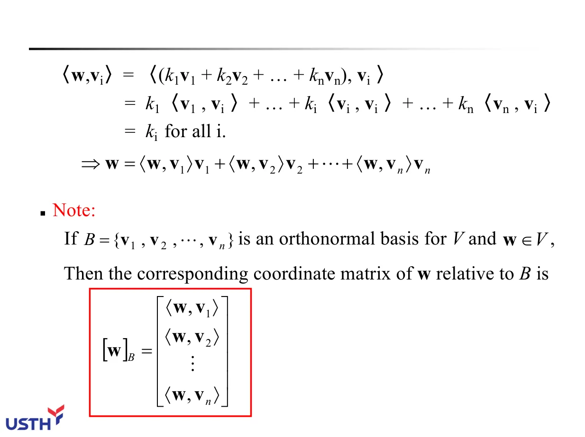
Hence $[w]_B=\begin{bmatrix}\langle w,v_1\rangle\\\vdots\\\langle w,v_n\rangle\end{bmatrix}$ for an orthonormal basis $B$: no system to solve, only $n$ inner products. If the basis is only orthogonal (not normalised), divide: the coordinate along $v_i$ is $\frac{\langle w,v_i\rangle}{\langle v_i,v_i\rangle}$.
Do đó $[w]_B=\begin{bmatrix}\langle w,v_1\rangle\\\vdots\\\langle w,v_n\rangle\end{bmatrix}$ với cơ sở trực chuẩn $B$: không phải giải hệ, chỉ cần $n$ tích trong. Nếu cơ sở chỉ trực giao (chưa chuẩn hóa) thì chia: tọa độ theo $v_i$ là $\frac{\langle w,v_i\rangle}{\langle v_i,v_i\rangle}$.
Find the coordinates of $w=(3,5)$ relative to the orthogonal (not normalised) basis $\{(1,1),(-1,1)\}$.
Tìm tọa độ của $w=(3,5)$ theo cơ sở trực giao (chưa chuẩn hóa) $\{(1,1),(-1,1)\}$.
Answer and solution · Đáp án và lời giải
Answer · Đáp án: $(4,\ 1)^T$
$c_1=\frac{\langle w,v_1\rangle}{\langle v_1,v_1\rangle}=\frac82=4$ and $c_2=\frac{\langle w,v_2\rangle}{\langle v_2,v_2\rangle}=\frac22=1$. Check: $4(1,1)+1(-1,1)=(3,5)$ ✓.
$c_1=\frac{\langle w,v_1\rangle}{\langle v_1,v_1\rangle}=\frac82=4$ và $c_2=\frac{\langle w,v_2\rangle}{\langle v_2,v_2\rangle}=\frac22=1$. Kiểm tra: $4(1,1)+1(-1,1)=(3,5)$ ✓.
Example 5: coordinates relative to an orthonormal basis of $\mathbb R^3$ · Ví dụ 5: tọa độ theo cơ sở trực chuẩn của $\mathbb R^3$
★★★ Core · Cốt lõi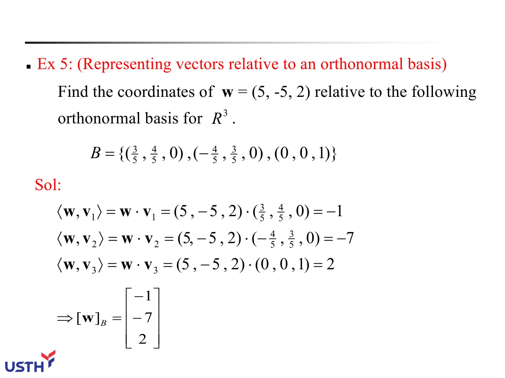
Find the coordinates of $w=(5,-5,2)$ relative to $B=\left\{\left(\frac35,\frac45,0\right),\left(-\frac45,\frac35,0\right),(0,0,1)\right\}$. $\langle w,v_1\rangle=3-4=-1$; $\langle w,v_2\rangle=-4-3=-7$; $\langle w,v_3\rangle=2$. So $[w]_B=(-1,-7,2)^T$. A useful check: the lengths agree, $\|w\|^2=25+25+4=54=(-1)^2+(-7)^2+2^2$.
Tìm tọa độ của $w=(5,-5,2)$ theo $B=\left\{\left(\frac35,\frac45,0\right),\left(-\frac45,\frac35,0\right),(0,0,1)\right\}$. $\langle w,v_1\rangle=3-4=-1$; $\langle w,v_2\rangle=-4-3=-7$; $\langle w,v_3\rangle=2$. Vậy $[w]_B=(-1,-7,2)^T$. Một phép kiểm tra hữu ích: độ dài khớp nhau, $\|w\|^2=25+25+4=54=(-1)^2+(-7)^2+2^2$.
Verify that $-v_1-7v_2+2v_3=(5,-5,2)$ and that $\|w\|^2$ equals the sum of squares of the coordinates.
Kiểm tra $-v_1-7v_2+2v_3=(5,-5,2)$ và $\|w\|^2$ bằng tổng bình phương các tọa độ.
Answer and solution · Đáp án và lời giải
Answer · Đáp án: both hold ($54=54$)
$-\left(\frac35,\frac45,0\right)-7\left(-\frac45,\frac35,0\right)+2(0,0,1)=\left(\frac{-3+28}5,\frac{-4-21}5,2\right)=(5,-5,2)$ ✓. This sum-of-squares identity holds only for orthonormal bases.
$-\left(\frac35,\frac45,0\right)-7\left(-\frac45,\frac35,0\right)+2(0,0,1)=\left(\frac{-3+28}5,\frac{-4-21}5,2\right)=(5,-5,2)$ ✓. Đẳng thức tổng bình phương này chỉ đúng với cơ sở trực chuẩn.
Orthogonal projection onto a vector and onto a subspace · Hình chiếu trực giao lên một vectơ và lên một không gian con
★★★ Core · Cốt lõiOnto a vector: $\operatorname{proj}_vu=\frac{\langle u,v\rangle}{\langle v,v\rangle}v$, with the property that $u-\operatorname{proj}_vu$ is orthogonal to $v$. Onto a subspace $W\subseteq V$: $\operatorname{proj}_Wv$ is the vector in $W$ such that $v-\operatorname{proj}_Wv$ is orthogonal to $W$ (to every vector of $W$). The picture is a plane $W$ with a vector $v$ above it and its perpendicular foot.
Lên một vectơ: $\operatorname{proj}_vu=\frac{\langle u,v\rangle}{\langle v,v\rangle}v$, với tính chất $u-\operatorname{proj}_vu$ trực giao với $v$. Lên một không gian con $W\subseteq V$: $\operatorname{proj}_Wv$ là vectơ thuộc $W$ sao cho $v-\operatorname{proj}_Wv$ trực giao với $W$ (với mọi vectơ của $W$). Hình ảnh là một mặt phẳng $W$ với vectơ $v$ phía trên và chân đường vuông góc.
Let $W=\operatorname{span}\{(1,1,0),(0,0,1)\}$ and $v=(2,4,5)$. Find $\operatorname{proj}_Wv$ and check that $v-\operatorname{proj}_Wv\perp W$.
Cho $W=\operatorname{span}\{(1,1,0),(0,0,1)\}$ và $v=(2,4,5)$. Tìm $\operatorname{proj}_Wv$ và kiểm tra $v-\operatorname{proj}_Wv\perp W$.
Answer and solution · Đáp án và lời giải
Answer · Đáp án: $\operatorname{proj}_Wv=(3,3,5)$
$\{(1,1,0),(0,0,1)\}$ is orthogonal, so add the projections onto each: $\frac{6}{2}(1,1,0)+\frac51(0,0,1)=(3,3,5)$. The remainder $(-1,1,0)$ is orthogonal to both basis vectors ($-1+1=0$ and $0$) ✓.
$\{(1,1,0),(0,0,1)\}$ trực giao nên cộng các hình chiếu lên từng vectơ: $\frac{6}{2}(1,1,0)+\frac51(0,0,1)=(3,3,5)$. Phần dư $(-1,1,0)$ trực giao với cả hai vectơ cơ sở ($-1+1=0$ và $0$) ✓.
The Gram–Schmidt orthonormalisation process · Quá trình trực chuẩn hóa Gram–Schmidt
★★★ Core · Cốt lõiLet $B=\{u_1,\dots,u_n\}$ be any basis of an inner product space. Define: $v_1=u_1$; $v_2=u_2-\frac{\langle u_2,v_1\rangle}{\langle v_1,v_1\rangle}v_1$; $v_3=u_3-\frac{\langle u_3,v_1\rangle}{\langle v_1,v_1\rangle}v_1-\frac{\langle u_3,v_2\rangle}{\langle v_2,v_2\rangle}v_2$; $\dots$; $v_n=u_n-\sum_{i=1}^{n-1}\frac{\langle u_n,v_i\rangle}{\langle v_i,v_i\rangle}v_i$. Then $B'=\{v_1,\dots,v_n\}$ is an orthogonal basis, and $B''=\left\{\frac{v_1}{\|v_1\|},\dots,\frac{v_n}{\|v_n\|}\right\}$ is an orthonormal basis. Each step subtracts from $u_k$ its projection onto the span of the previous $v$'s.
Cho $B=\{u_1,\dots,u_n\}$ là cơ sở bất kỳ của không gian tích trong. Định nghĩa: $v_1=u_1$; $v_2=u_2-\frac{\langle u_2,v_1\rangle}{\langle v_1,v_1\rangle}v_1$; $v_3=u_3-\frac{\langle u_3,v_1\rangle}{\langle v_1,v_1\rangle}v_1-\frac{\langle u_3,v_2\rangle}{\langle v_2,v_2\rangle}v_2$; $\dots$; $v_n=u_n-\sum_{i=1}^{n-1}\frac{\langle u_n,v_i\rangle}{\langle v_i,v_i\rangle}v_i$. Khi đó $B'=\{v_1,\dots,v_n\}$ là cơ sở trực giao, và $B''=\left\{\frac{v_1}{\|v_1\|},\dots,\frac{v_n}{\|v_n\|}\right\}$ là cơ sở trực chuẩn. Mỗi bước trừ khỏi $u_k$ hình chiếu của nó lên không gian sinh bởi các $v$ trước đó.
Gram–Schmidt is a standard exam computation: write the formulas, compute step by step with exact fractions, check orthogonality at the end, then normalise.
Gram–Schmidt là phép tính chuẩn trong đề thi: viết công thức, tính từng bước với phân số chính xác, kiểm tra tính trực giao ở cuối, rồi chuẩn hóa.
Apply Gram–Schmidt to $u_1=(1,0,1)$, $u_2=(1,1,0)$.
Áp dụng Gram–Schmidt cho $u_1=(1,0,1)$, $u_2=(1,1,0)$.
Answer and solution · Đáp án và lời giải
Answer · Đáp án: $v_1=(1,0,1)$, $v_2=\left(\frac12,1,-\frac12\right)$
$v_2=u_2-\frac{\langle u_2,v_1\rangle}{\langle v_1,v_1\rangle}v_1=(1,1,0)-\frac12(1,0,1)=\left(\frac12,1,-\frac12\right)$. Check: $v_1\cdot v_2=\frac12-\frac12=0$ ✓. Normalising: $\frac{v_1}{\sqrt2}$ and $\frac{v_2}{\sqrt{3/2}}$.
$v_2=u_2-\frac{\langle u_2,v_1\rangle}{\langle v_1,v_1\rangle}v_1=(1,1,0)-\frac12(1,0,1)=\left(\frac12,1,-\frac12\right)$. Kiểm tra: $v_1\cdot v_2=\frac12-\frac12=0$ ✓. Chuẩn hóa: $\frac{v_1}{\sqrt2}$ và $\frac{v_2}{\sqrt{3/2}}$.
Gram–Schmidt in $\mathbb R^2$: the picture · Gram–Schmidt trong $\mathbb R^2$: hình ảnh
★★ Important · Quan trọngLet $\{v_1,v_2\}$ be a basis of $\mathbb R^2$ that is not yet orthonormal. Step 1: $w_1=v_1$. Step 2: $w_2=v_2-\operatorname{proj}_{v_1}v_2$, which is automatically orthogonal to $w_1$ (it is the perpendicular part of $v_2$). Conclusion: $\{u_1,u_2\}=\left\{\frac{w_1}{\|w_1\|},\frac{w_2}{\|w_2\|}\right\}$ is an orthonormal basis of $\mathbb R^2$.
Cho $\{v_1,v_2\}$ là cơ sở của $\mathbb R^2$ chưa trực chuẩn. Bước 1: $w_1=v_1$. Bước 2: $w_2=v_2-\operatorname{proj}_{v_1}v_2$, tự động trực giao với $w_1$ (đó là phần vuông góc của $v_2$). Kết luận: $\{u_1,u_2\}=\left\{\frac{w_1}{\|w_1\|},\frac{w_2}{\|w_2\|}\right\}$ là cơ sở trực chuẩn của $\mathbb R^2$.
Apply the two steps to $v_1=(3,1)$, $v_2=(2,2)$ and normalise.
Áp dụng hai bước cho $v_1=(3,1)$, $v_2=(2,2)$ và chuẩn hóa.
Answer and solution · Đáp án và lời giải
Answer · Đáp án: $w_1=(3,1)$, $w_2=\left(-\frac25,\frac65\right)$; $u_1=\frac{(3,1)}{\sqrt{10}}$, $u_2=\frac{(-1,3)}{\sqrt{10}}$
$\operatorname{proj}_{v_1}v_2=\frac{8}{10}(3,1)=\left(\frac{12}5,\frac45\right)$, so $w_2=\left(-\frac25,\frac65\right)=\frac25(-1,3)$ and $w_1\cdot w_2=-\frac65+\frac65=0$. Both vectors have length $\sqrt{10}$ (after scaling $w_2$ to $(-1,3)$).
$\operatorname{proj}_{v_1}v_2=\frac{8}{10}(3,1)=\left(\frac{12}5,\frac45\right)$ nên $w_2=\left(-\frac25,\frac65\right)=\frac25(-1,3)$ và $w_1\cdot w_2=-\frac65+\frac65=0$. Cả hai vectơ có độ dài $\sqrt{10}$ (sau khi co giãn $w_2$ thành $(-1,3)$).
Example 7: Gram–Schmidt in $\mathbb R^3$ · Ví dụ 7: Gram–Schmidt trong $\mathbb R^3$
★★★ Core · Cốt lõiApply Gram–Schmidt to $B=\{u_1,u_2,u_3\}=\{(1,1,0),(1,2,0),(0,1,2)\}$. $v_1=u_1=(1,1,0)$. $v_2=u_2-\frac{u_2\cdot v_1}{v_1\cdot v_1}v_1=(1,2,0)-\frac32(1,1,0)=\left(-\frac12,\frac12,0\right)$. $v_3=u_3-\frac{u_3\cdot v_1}{v_1\cdot v_1}v_1-\frac{u_3\cdot v_2}{v_2\cdot v_2}v_2=(0,1,2)-\frac12(1,1,0)-\frac{1/2}{1/2}\left(-\frac12,\frac12,0\right)=(0,0,2)$.
Áp dụng Gram–Schmidt cho $B=\{u_1,u_2,u_3\}=\{(1,1,0),(1,2,0),(0,1,2)\}$. $v_1=u_1=(1,1,0)$. $v_2=u_2-\frac{u_2\cdot v_1}{v_1\cdot v_1}v_1=(1,2,0)-\frac32(1,1,0)=\left(-\frac12,\frac12,0\right)$. $v_3=u_3-\frac{u_3\cdot v_1}{v_1\cdot v_1}v_1-\frac{u_3\cdot v_2}{v_2\cdot v_2}v_2=(0,1,2)-\frac12(1,1,0)-\frac{1/2}{1/2}\left(-\frac12,\frac12,0\right)=(0,0,2)$.
Apply Gram–Schmidt to $\{(1,0,0),(1,1,0),(1,1,1)\}$. What do you observe?
Áp dụng Gram–Schmidt cho $\{(1,0,0),(1,1,0),(1,1,1)\}$. Bạn nhận xét gì?
Answer and solution · Đáp án và lời giải
Answer · Đáp án: $\{(1,0,0),(0,1,0),(0,0,1)\}$: the standard basis
$v_1=(1,0,0)$; $v_2=(1,1,0)-1\cdot(1,0,0)=(0,1,0)$; $v_3=(1,1,1)-1\cdot(1,0,0)-1\cdot(0,1,0)=(0,0,1)$. The basis was already "triangular", so Gram–Schmidt just peels off the components.
$v_1=(1,0,0)$; $v_2=(1,1,0)-1\cdot(1,0,0)=(0,1,0)$; $v_3=(1,1,1)-1\cdot(1,0,0)-1\cdot(0,1,0)=(0,0,1)$. Cơ sở đã ở dạng "tam giác" nên Gram–Schmidt chỉ bóc tách các thành phần.
Example 7: the orthogonal and orthonormal bases · Ví dụ 7: cơ sở trực giao và trực chuẩn
★★★ Core · Cốt lõiOrthogonal basis: $B'=\{v_1,v_2,v_3\}=\left\{(1,1,0),\left(-\frac12,\frac12,0\right),(0,0,2)\right\}$. Orthonormal basis (divide by the lengths $\sqrt2,\frac1{\sqrt2},2$): $B''=\left\{\left(\frac1{\sqrt2},\frac1{\sqrt2},0\right),\left(-\frac1{\sqrt2},\frac1{\sqrt2},0\right),(0,0,1)\right\}$. Always check at least one pair for orthogonality before normalising.
Cơ sở trực giao: $B'=\{v_1,v_2,v_3\}=\left\{(1,1,0),\left(-\frac12,\frac12,0\right),(0,0,2)\right\}$. Cơ sở trực chuẩn (chia cho các độ dài $\sqrt2,\frac1{\sqrt2},2$): $B''=\left\{\left(\frac1{\sqrt2},\frac1{\sqrt2},0\right),\left(-\frac1{\sqrt2},\frac1{\sqrt2},0\right),(0,0,1)\right\}$. Luôn kiểm tra ít nhất một cặp có trực giao không trước khi chuẩn hóa.
Apply Gram–Schmidt to $\{(1,1,0),(0,1,1),(1,0,1)\}$.
Áp dụng Gram–Schmidt cho $\{(1,1,0),(0,1,1),(1,0,1)\}$.
Answer and solution · Đáp án và lời giải
Answer · Đáp án: $(1,1,0),\ \left(-\frac12,\frac12,1\right),\ \left(\frac23,-\frac23,\frac23\right)$
$v_2=(0,1,1)-\frac12(1,1,0)=\left(-\frac12,\frac12,1\right)$. $v_3=(1,0,1)-\frac12(1,1,0)-\frac{1/2}{3/2}v_2=(1,0,1)-\left(\frac12,\frac12,0\right)-\left(-\frac16,\frac16,\frac13\right)=\left(\frac23,-\frac23,\frac23\right)$. Checks: $v_1\cdot v_3=0$, $v_2\cdot v_3=-\frac13-\frac13+\frac23=0$ ✓.
$v_2=(0,1,1)-\frac12(1,1,0)=\left(-\frac12,\frac12,1\right)$. $v_3=(1,0,1)-\frac12(1,1,0)-\frac{1/2}{3/2}v_2=(1,0,1)-\left(\frac12,\frac12,0\right)-\left(-\frac16,\frac16,\frac13\right)=\left(\frac23,-\frac23,\frac23\right)$. Kiểm tra: $v_1\cdot v_3=0$, $v_2\cdot v_3=-\frac13-\frac13+\frac23=0$ ✓.
Example 10: an orthonormal basis for a solution space, setup · Ví dụ 10: cơ sở trực chuẩn của một không gian nghiệm, thiết lập
★★★ Core · Cốt lõiFind an orthonormal basis of the solution space of $x_1+x_2+7x_4=0$, $2x_1+x_2+2x_3+6x_4=0$. Gauss-Jordan gives $\begin{bmatrix}1&0&2&-1\\0&1&-2&8\end{bmatrix}$, so with $x_3=s$, $x_4=t$: $x=s(-2,2,1,0)+t(1,-8,0,1)$. The vectors $u_1=(-2,2,1,0)$, $u_2=(1,-8,0,1)$ form a basis of the solution space, but they are not orthogonal; Gram–Schmidt will repair that.
Tìm cơ sở trực chuẩn của không gian nghiệm của $x_1+x_2+7x_4=0$, $2x_1+x_2+2x_3+6x_4=0$. Gauss-Jordan cho $\begin{bmatrix}1&0&2&-1\\0&1&-2&8\end{bmatrix}$ nên với $x_3=s$, $x_4=t$: $x=s(-2,2,1,0)+t(1,-8,0,1)$. Các vectơ $u_1=(-2,2,1,0)$, $u_2=(1,-8,0,1)$ tạo thành một cơ sở của không gian nghiệm, nhưng chúng không trực giao; Gram–Schmidt sẽ sửa điều đó.
Find an orthogonal basis of the plane $x+y+z=0$ in $\mathbb R^3$ by applying Gram–Schmidt to the null-space basis.
Tìm cơ sở trực giao của mặt phẳng $x+y+z=0$ trong $\mathbb R^3$ bằng cách áp dụng Gram–Schmidt cho cơ sở của không gian hạch.
Answer and solution · Đáp án và lời giải
Answer · Đáp án: $(-1,1,0),\ \left(-\frac12,-\frac12,1\right)$
Null-space basis $u_1=(-1,1,0)$, $u_2=(-1,0,1)$. $v_2=u_2-\frac{\langle u_2,u_1\rangle}{\langle u_1,u_1\rangle}u_1=(-1,0,1)-\frac12(-1,1,0)=\left(-\frac12,-\frac12,1\right)$. Check: $v_1\cdot v_2=\frac12-\frac12=0$ and both satisfy $x+y+z=0$.
Cơ sở của không gian hạch $u_1=(-1,1,0)$, $u_2=(-1,0,1)$. $v_2=u_2-\frac{\langle u_2,u_1\rangle}{\langle u_1,u_1\rangle}u_1=(-1,0,1)-\frac12(-1,1,0)=\left(-\frac12,-\frac12,1\right)$. Kiểm tra: $v_1\cdot v_2=\frac12-\frac12=0$ và cả hai thỏa $x+y+z=0$.
Example 10: the orthonormal basis · Ví dụ 10: cơ sở trực chuẩn
★★★ Core · Cốt lõi$v_1=u_1=(-2,2,1,0)$. $v_2=u_2-\frac{\langle u_2,v_1\rangle}{\langle v_1,v_1\rangle}v_1=(1,-8,0,1)-\frac{-18}9(-2,2,1,0)=(1,-8,0,1)+2(-2,2,1,0)=(-3,-4,2,1)$. So the orthogonal basis is $\{(-2,2,1,0),(-3,-4,2,1)\}$ and, with $\|v_1\|=3$, $\|v_2\|=\sqrt{30}$, the orthonormal basis is $\left\{\left(-\frac23,\frac23,\frac13,0\right),\left(-\frac3{\sqrt{30}},-\frac4{\sqrt{30}},\frac2{\sqrt{30}},\frac1{\sqrt{30}}\right)\right\}$. The new vectors are linear combinations of solutions, hence still solutions.
$v_1=u_1=(-2,2,1,0)$. $v_2=u_2-\frac{\langle u_2,v_1\rangle}{\langle v_1,v_1\rangle}v_1=(1,-8,0,1)-\frac{-18}9(-2,2,1,0)=(1,-8,0,1)+2(-2,2,1,0)=(-3,-4,2,1)$. Vậy cơ sở trực giao là $\{(-2,2,1,0),(-3,-4,2,1)\}$ và, với $\|v_1\|=3$, $\|v_2\|=\sqrt{30}$, cơ sở trực chuẩn là $\left\{\left(-\frac23,\frac23,\frac13,0\right),\left(-\frac3{\sqrt{30}},-\frac4{\sqrt{30}},\frac2{\sqrt{30}},\frac1{\sqrt{30}}\right)\right\}$. Các vectơ mới là tổ hợp tuyến tính của nghiệm nên vẫn là nghiệm.
Verify that $(-2,2,1,0)$ and $(-3,-4,2,1)$ solve the system, are orthogonal, and have lengths $3$ and $\sqrt{30}$.
Kiểm tra $(-2,2,1,0)$ và $(-3,-4,2,1)$ nghiệm đúng hệ, trực giao, và có độ dài $3$ và $\sqrt{30}$.
Answer and solution · Đáp án và lời giải
Answer · Đáp án: all hold
$\begin{bmatrix}1&1&0&7\\2&1&2&6\end{bmatrix}$ times each vector gives $0$: e.g. $(-3,-4,2,1)$: $-3-4+0+7=0$ and $-6-4+4+6=0$. Dot product: $6-8+2+0=0$. Lengths: $\sqrt{4+4+1}=3$ and $\sqrt{9+16+4+1}=\sqrt{30}$.
$\begin{bmatrix}1&1&0&7\\2&1&2&6\end{bmatrix}$ nhân mỗi vectơ cho $0$: ví dụ $(-3,-4,2,1)$: $-3-4+0+7=0$ và $-6-4+4+6=0$. Tích vô hướng: $6-8+2+0=0$. Độ dài: $\sqrt{4+4+1}=3$ và $\sqrt{9+16+4+1}=\sqrt{30}$.
5.4 Orthogonal subspaces · 5.4 Các không gian con trực giao
★★★ Core · Cốt lõiTwo subspaces $W_1,W_2$ of an inner product space $V$ are orthogonal if $\langle v_1,v_2\rangle=0$ for all $v_1\in W_1$ and all $v_2\in W_2$. Example (Homework 3): $W_1=\operatorname{span}\left\{(1,0,1)^T,(1,1,0)^T\right\}$ and $W_2=\operatorname{span}\{(-1,1,1)^T\}$ are orthogonal, because $(-1,1,1)\cdot(1,0,1)=0$ and $(-1,1,1)\cdot(1,1,0)=0$: it suffices to check the spanning vectors.
Hai không gian con $W_1,W_2$ của không gian tích trong $V$ trực giao nếu $\langle v_1,v_2\rangle=0$ với mọi $v_1\in W_1$ và mọi $v_2\in W_2$. Ví dụ (Bài tập về nhà 3): $W_1=\operatorname{span}\left\{(1,0,1)^T,(1,1,0)^T\right\}$ và $W_2=\operatorname{span}\{(-1,1,1)^T\}$ trực giao vì $(-1,1,1)\cdot(1,0,1)=0$ và $(-1,1,1)\cdot(1,1,0)=0$: chỉ cần kiểm tra các vectơ sinh.
Show that the row space and the null space of $A=\begin{bmatrix}1&2&3\\0&1&1\end{bmatrix}$ are orthogonal subspaces of $\mathbb R^3$.
Chứng tỏ không gian hàng và không gian hạch của $A=\begin{bmatrix}1&2&3\\0&1&1\end{bmatrix}$ là các không gian con trực giao của $\mathbb R^3$.
Answer and solution · Đáp án và lời giải
Answer · Đáp án: $NS(A)=\operatorname{span}\{(1,1,-1)\}\perp RS(A)$
$Ax=0$ means every row of $A$ is orthogonal to $x$: $(1,2,3)\cdot(1,1,-1)=0$ and $(0,1,1)\cdot(1,1,-1)=0$. So the null space is orthogonal to the span of the rows.
$Ax=0$ nghĩa là mọi hàng của $A$ trực giao với $x$: $(1,2,3)\cdot(1,1,-1)=0$ và $(0,1,1)\cdot(1,1,-1)=0$. Vậy không gian hạch trực giao với không gian sinh bởi các hàng.
The orthogonal complement $W^\perp$ · Phần bù trực giao $W^\perp$
★★★ Core · Cốt lõiLet $W$ be a subspace of $V$. A vector $u$ is orthogonal to $W$ if it is orthogonal to every vector of $W$. The orthogonal complement of $W$ is $W^\perp=\{v\in V:\langle v,w\rangle=0\text{ for all }w\in W\}$ (read "$W$ perp"). Notes: $\{0\}^\perp=V$ and $V^\perp=\{0\}$. In practice: to find $W^\perp$ for $W=\operatorname{span}\{w_1,\dots,w_k\}$ solve the homogeneous system $w_i\cdot x=0$.
Cho $W$ là không gian con của $V$. Vectơ $u$ trực giao với $W$ nếu nó trực giao với mọi vectơ của $W$. Phần bù trực giao của $W$ là $W^\perp=\{v\in V:\langle v,w\rangle=0\text{ với mọi }w\in W\}$ (đọc "$W$ perp"). Lưu ý: $\{0\}^\perp=V$ và $V^\perp=\{0\}$. Trong thực hành: để tìm $W^\perp$ với $W=\operatorname{span}\{w_1,\dots,w_k\}$ hãy giải hệ thuần nhất $w_i\cdot x=0$.
Find a basis of $W^\perp$ for $W=\operatorname{span}\{(1,2,3)\}\subset\mathbb R^3$ and the dimensions of $W$ and $W^\perp$.
Tìm cơ sở của $W^\perp$ với $W=\operatorname{span}\{(1,2,3)\}\subset\mathbb R^3$ và số chiều của $W$ và $W^\perp$.
Answer and solution · Đáp án và lời giải
Answer · Đáp án: $(-2,1,0),\ (-3,0,1)$; $\dim W=1$, $\dim W^\perp=2$
$W^\perp$ is the plane $x+2y+3z=0$ with two free variables; $\dim W+\dim W^\perp=1+2=3=\dim\mathbb R^3$.
$W^\perp$ là mặt phẳng $x+2y+3z=0$ với hai biến tự do; $\dim W+\dim W^\perp=1+2=3=\dim\mathbb R^3$.
Properties of $W^\perp$ · Tính chất của $W^\perp$
★★★ Core · Cốt lõiFor a subspace $W$ of $V$: (1) $W^\perp$ is a subspace of $V$; (2) $W\cap W^\perp=\{0\}$ (a vector orthogonal to itself has $\langle v,v\rangle=0$, so $v=0$); (3) $(W^\perp)^\perp=W$. Example: in $\mathbb R^2$, $W=x$-axis gives $W^\perp=y$-axis, $W\cap W^\perp=\{(0,0)\}$, $(W^\perp)^\perp=W$. The question of the slide for $\mathbb R^3$: for $W$ the $x$-axis, $W^\perp$ is the $yz$-plane (and if $W$ is the $xy$-plane, $W^\perp$ is the $z$-axis): dimensions $1+2=3$ and $2+1=3$.
Với không gian con $W$ của $V$: (1) $W^\perp$ là không gian con của $V$; (2) $W\cap W^\perp=\{0\}$ (vectơ trực giao với chính nó có $\langle v,v\rangle=0$ nên $v=0$); (3) $(W^\perp)^\perp=W$. Ví dụ: trong $\mathbb R^2$, $W=$ trục $x$ cho $W^\perp=$ trục $y$, $W\cap W^\perp=\{(0,0)\}$, $(W^\perp)^\perp=W$. Câu hỏi của slide cho $\mathbb R^3$: với $W$ là trục $x$ thì $W^\perp$ là mặt phẳng $yz$ (và nếu $W$ là mặt phẳng $xy$ thì $W^\perp$ là trục $z$): số chiều $1+2=3$ và $2+1=3$.
Find $W^\perp$ in $\mathbb R^3$ for $W$ the $x$-axis and for $W$ the $xy$-plane.
Tìm $W^\perp$ trong $\mathbb R^3$ với $W$ là trục $x$ và với $W$ là mặt phẳng $xy$.
Answer and solution · Đáp án và lời giải
Answer · Đáp án: the $yz$-plane; the $z$-axis
$W=\operatorname{span}\{(1,0,0)\}$: $x=0$ gives the $yz$-plane (basis $(0,1,0),(0,0,1)$). $W=\operatorname{span}\{(1,0,0),(0,1,0)\}$: $x=y=0$ gives the $z$-axis.
$W=\operatorname{span}\{(1,0,0)\}$: $x=0$ cho mặt phẳng $yz$ (cơ sở $(0,1,0),(0,0,1)$). $W=\operatorname{span}\{(1,0,0),(0,1,0)\}$: $x=y=0$ cho trục $z$.
Direct sum and Theorem 5.13 · Tổng trực tiếp và Định lý 5.13
★★★ Core · Cốt lõiDirect sum: if every $x\in\mathbb R^n$ can be written uniquely as $x=w_1+w_2$ with $w_1\in W_1$, $w_2\in W_2$, then $\mathbb R^n=W_1\oplus W_2$. Theorem 5.13. For a subspace $W$ of $\mathbb R^n$: (1) $\dim W+\dim W^\perp=n$; (2) $\mathbb R^n=W\oplus W^\perp$ (every vector splits uniquely into a part in $W$ and a part perpendicular to $W$); (3) $(W^\perp)^\perp=W$.
Tổng trực tiếp: nếu mọi $x\in\mathbb R^n$ viết được duy nhất dạng $x=w_1+w_2$ với $w_1\in W_1$, $w_2\in W_2$ thì $\mathbb R^n=W_1\oplus W_2$. Định lý 5.13. Với không gian con $W$ của $\mathbb R^n$: (1) $\dim W+\dim W^\perp=n$; (2) $\mathbb R^n=W\oplus W^\perp$ (mọi vectơ tách duy nhất thành phần thuộc $W$ và phần vuông góc với $W$); (3) $(W^\perp)^\perp=W$.
Decompose $x=(1,2,3)$ as $w_1+w_2$ with $w_1\in W=\operatorname{span}\{(1,1,1)\}$ and $w_2\in W^\perp$.
Phân tích $x=(1,2,3)$ thành $w_1+w_2$ với $w_1\in W=\operatorname{span}\{(1,1,1)\}$ và $w_2\in W^\perp$.
Answer and solution · Đáp án và lời giải
Answer · Đáp án: $w_1=(2,2,2)$, $w_2=(-1,0,1)$
$w_1=\operatorname{proj}_{(1,1,1)}x=\frac63(1,1,1)=(2,2,2)$ and $w_2=x-w_1=(-1,0,1)$, which satisfies $w_2\cdot(1,1,1)=0$. The decomposition is unique by Theorem 5.13.
$w_1=\operatorname{proj}_{(1,1,1)}x=\frac63(1,1,1)=(2,2,2)$ và $w_2=x-w_1=(-1,0,1)$, thỏa $w_2\cdot(1,1,1)=0$. Phép phân tích là duy nhất theo Định lý 5.13.
Theorem 5.14: the projection onto a subspace · Định lý 5.14: hình chiếu lên không gian con
★★★ Core · Cốt lõiTheorem 5.14. If $\{u_1,\dots,u_t\}$ is an orthonormal basis of the subspace $W$ of $V$ and $v\in V$, then $\operatorname{proj}_Wv=\langle v,u_1\rangle u_1+\langle v,u_2\rangle u_2+\cdots+\langle v,u_t\rangle u_t$. Proof idea: $\operatorname{proj}_Wv\in W$ has these coordinates in the orthonormal basis (Theorem 5.11), and $v-\operatorname{proj}_Wv=\operatorname{proj}_{W^\perp}v$ is orthogonal to every $u_i$, so replacing $\operatorname{proj}_Wv$ by $v$ in the inner products changes nothing.
Định lý 5.14. Nếu $\{u_1,\dots,u_t\}$ là cơ sở trực chuẩn của không gian con $W$ của $V$ và $v\in V$ thì $\operatorname{proj}_Wv=\langle v,u_1\rangle u_1+\langle v,u_2\rangle u_2+\cdots+\langle v,u_t\rangle u_t$. Ý chứng minh: $\operatorname{proj}_Wv\in W$ có các tọa độ này trong cơ sở trực chuẩn (Định lý 5.11), và $v-\operatorname{proj}_Wv=\operatorname{proj}_{W^\perp}v$ trực giao với mọi $u_i$ nên thay $\operatorname{proj}_Wv$ bằng $v$ trong các tích trong không làm đổi gì.
Project $v=(1,2,3)$ onto the plane $W:x+y+z=0$ using the orthonormal basis $\frac{(-1,1,0)}{\sqrt2}$, $\frac{(-1,-1,2)}{\sqrt6}$.
Chiếu $v=(1,2,3)$ lên mặt phẳng $W:x+y+z=0$ dùng cơ sở trực chuẩn $\frac{(-1,1,0)}{\sqrt2}$, $\frac{(-1,-1,2)}{\sqrt6}$.
Answer and solution · Đáp án và lời giải
Answer · Đáp án: $\operatorname{proj}_Wv=(-1,0,1)$
$\langle v,u_1\rangle=\frac1{\sqrt2}$ and $\langle v,u_2\rangle=\frac{3}{\sqrt6}$; $\operatorname{proj}_Wv=\frac1{\sqrt2}\frac{(-1,1,0)}{\sqrt2}+\frac3{\sqrt6}\frac{(-1,-1,2)}{\sqrt6}=\left(-\frac12,\frac12,0\right)+\left(-\frac12,-\frac12,1\right)=(-1,0,1)$. The rest, $v-\operatorname{proj}_Wv=(2,2,2)$, is in $W^\perp$ (compare slide 61).
$\langle v,u_1\rangle=\frac1{\sqrt2}$ và $\langle v,u_2\rangle=\frac{3}{\sqrt6}$; $\operatorname{proj}_Wv=\frac1{\sqrt2}\frac{(-1,1,0)}{\sqrt2}+\frac3{\sqrt6}\frac{(-1,-1,2)}{\sqrt6}=\left(-\frac12,\frac12,0\right)+\left(-\frac12,-\frac12,1\right)=(-1,0,1)$. Phần còn lại, $v-\operatorname{proj}_Wv=(2,2,2)$, thuộc $W^\perp$ (so với slide 61).
Example 5: projection onto a subspace of $\mathbb R^3$ · Ví dụ 5: hình chiếu lên không gian con của $\mathbb R^3$
★★★ Core · Cốt lõi$w_1=(0,3,1)$, $w_2=(2,0,0)$, $v=(1,1,3)$; find the projection of $v$ onto $W=\operatorname{span}\{w_1,w_2\}$. $\{w_1,w_2\}$ is an orthogonal basis ($w_1\cdot w_2=0$), so $\{u_1,u_2\}=\left\{\left(0,\frac3{\sqrt{10}},\frac1{\sqrt{10}}\right),(1,0,0)\right\}$ is orthonormal. $\operatorname{proj}_Wv=\langle v,u_1\rangle u_1+\langle v,u_2\rangle u_2=\frac6{\sqrt{10}}\left(0,\frac3{\sqrt{10}},\frac1{\sqrt{10}}\right)+(1,0,0)=\left(1,\frac95,\frac35\right)$.
$w_1=(0,3,1)$, $w_2=(2,0,0)$, $v=(1,1,3)$; tìm hình chiếu của $v$ lên $W=\operatorname{span}\{w_1,w_2\}$. $\{w_1,w_2\}$ là cơ sở trực giao ($w_1\cdot w_2=0$) nên $\{u_1,u_2\}=\left\{\left(0,\frac3{\sqrt{10}},\frac1{\sqrt{10}}\right),(1,0,0)\right\}$ là trực chuẩn. $\operatorname{proj}_Wv=\langle v,u_1\rangle u_1+\langle v,u_2\rangle u_2=\frac6{\sqrt{10}}\left(0,\frac3{\sqrt{10}},\frac1{\sqrt{10}}\right)+(1,0,0)=\left(1,\frac95,\frac35\right)$.
Check that the remainder $v-\operatorname{proj}_Wv$ is orthogonal to $w_1$ and $w_2$.
Kiểm tra phần dư $v-\operatorname{proj}_Wv$ trực giao với $w_1$ và $w_2$.
Answer and solution · Đáp án và lời giải
Answer · Đáp án: remainder $\left(0,-\frac45,\frac{12}5\right)$ is orthogonal to both
$(1,1,3)-\left(1,\frac95,\frac35\right)=\left(0,-\frac45,\frac{12}5\right)$. Dot with $w_1=(0,3,1)$: $-\frac{12}5+\frac{12}5=0$; with $w_2=(2,0,0)$: $0$ ✓. (Using the orthogonal basis directly: $\frac{\langle v,w_1\rangle}{\langle w_1,w_1\rangle}w_1+\frac{\langle v,w_2\rangle}{\langle w_2,w_2\rangle}w_2=\frac6{10}(0,3,1)+\frac24(2,0,0)$, the same vector.)
$(1,1,3)-\left(1,\frac95,\frac35\right)=\left(0,-\frac45,\frac{12}5\right)$. Nhân với $w_1=(0,3,1)$: $-\frac{12}5+\frac{12}5=0$; với $w_2=(2,0,0)$: $0$ ✓. (Dùng trực tiếp cơ sở trực giao: $\frac{\langle v,w_1\rangle}{\langle w_1,w_1\rangle}w_1+\frac{\langle v,w_2\rangle}{\langle w_2,w_2\rangle}w_2=\frac6{10}(0,3,1)+\frac24(2,0,0)$, cùng vectơ đó.)
Theorem 5.15: the projection is the best approximation · Định lý 5.15: hình chiếu là xấp xỉ tốt nhất
★★★ Core · Cốt lõiTheorem 5.15. Let $W$ be a subspace of an inner product space $V$ and $v\in V$. For every $w\in W$ with $w\ne\operatorname{proj}_Wv$: $\|v-\operatorname{proj}_Wv\|<\|v-w\|$, i.e. $\|v-\operatorname{proj}_Wv\|=\min_{w\in W}\|v-w\|$. $\operatorname{proj}_Wv$ is the best approximation to $v$ from $W$, and the minimum is the distance from $v$ to $W$.
Định lý 5.15. Cho $W$ là không gian con của không gian tích trong $V$ và $v\in V$. Với mọi $w\in W$ mà $w\ne\operatorname{proj}_Wv$: $\|v-\operatorname{proj}_Wv\|<\|v-w\|$, tức $\|v-\operatorname{proj}_Wv\|=\min_{w\in W}\|v-w\|$. $\operatorname{proj}_Wv$ là xấp xỉ tốt nhất của $v$ từ $W$, và giá trị nhỏ nhất là khoảng cách từ $v$ đến $W$.
For $W$ and $v$ of slide 63 find the distance from $v$ to $W$ and compare with $\|v-w\|$ for $w=(1,3,1)\in W$.
Với $W$ và $v$ của slide 63 tìm khoảng cách từ $v$ đến $W$ và so với $\|v-w\|$ với $w=(1,3,1)\in W$.
Answer and solution · Đáp án và lời giải
Answer · Đáp án: $\frac45\sqrt{10}\approx2.53<2\sqrt2\approx2.83$
$\|v-\operatorname{proj}_Wv\|=\left\|\left(0,-\frac45,\frac{12}5\right)\right\|=\frac45\sqrt{1+9}=\frac{4\sqrt{10}}5$. And $w=(1,3,1)=\frac12(2,0,0)+(0,3,1)\in W$, with $\|v-w\|=\|(0,-2,2)\|=2\sqrt2$, larger ✓.
$\|v-\operatorname{proj}_Wv\|=\left\|\left(0,-\frac45,\frac{12}5\right)\right\|=\frac45\sqrt{1+9}=\frac{4\sqrt{10}}5$. Và $w=(1,3,1)=\frac12(2,0,0)+(0,3,1)\in W$, với $\|v-w\|=\|(0,-2,2)\|=2\sqrt2$, lớn hơn ✓.
Picture of the best approximation · Hình minh họa xấp xỉ tốt nhất
★ Context · Bổ trợThe figure shows a plane $W$, a vector $v$ above it, its foot $\operatorname{proj}_Wv$, and another point $w\in W$. The segment from $v$ to $\operatorname{proj}_Wv$ is perpendicular to $W$ ($v-\operatorname{proj}_Wv\perp W$), and $d(v,\operatorname{proj}_Wv)<d(v,w)$: the perpendicular is the shortest segment from a point to a plane.
Hình cho thấy một mặt phẳng $W$, một vectơ $v$ phía trên nó, chân $\operatorname{proj}_Wv$, và một điểm khác $w\in W$. Đoạn từ $v$ đến $\operatorname{proj}_Wv$ vuông góc với $W$ ($v-\operatorname{proj}_Wv\perp W$), và $d(v,\operatorname{proj}_Wv)<d(v,w)$: đường vuông góc là đoạn ngắn nhất từ một điểm đến một mặt phẳng.
Proof of Theorem 5.15: Pythagoras again · Chứng minh Định lý 5.15: lại là Pythagore
★★ Important · Quan trọngWrite $v-w=(v-\operatorname{proj}_Wv)+(\operatorname{proj}_Wv-w)$. The first term is orthogonal to $W$ and the second lies in $W$, so they are orthogonal; by Pythagoras $\|v-w\|^2=\|v-\operatorname{proj}_Wv\|^2+\|\operatorname{proj}_Wv-w\|^2$. If $w\ne\operatorname{proj}_Wv$ the last term is $>0$, so $\|v-w\|>\|v-\operatorname{proj}_Wv\|$.
Viết $v-w=(v-\operatorname{proj}_Wv)+(\operatorname{proj}_Wv-w)$. Số hạng đầu trực giao với $W$ và số hạng sau nằm trong $W$ nên chúng trực giao; theo Pythagore $\|v-w\|^2=\|v-\operatorname{proj}_Wv\|^2+\|\operatorname{proj}_Wv-w\|^2$. Nếu $w\ne\operatorname{proj}_Wv$ thì số hạng cuối $>0$, nên $\|v-w\|>\|v-\operatorname{proj}_Wv\|$.
Verify $\|v-w\|^2=\|v-\operatorname{proj}_Wv\|^2+\|\operatorname{proj}_Wv-w\|^2$ numerically for $v=(1,1,3)$, $w=(1,3,1)$ and the projection of slide 63.
Kiểm tra bằng số $\|v-w\|^2=\|v-\operatorname{proj}_Wv\|^2+\|\operatorname{proj}_Wv-w\|^2$ với $v=(1,1,3)$, $w=(1,3,1)$ và hình chiếu của slide 63.
Answer and solution · Đáp án và lời giải
Answer · Đáp án: $8=\frac{32}5+\frac85$
$\|v-w\|^2=0+4+4=8$; $\|v-\operatorname{proj}\|^2=\frac{16}{25}+\frac{144}{25}=\frac{32}5$; $\operatorname{proj}-w=\left(0,-\frac65,-\frac25\right)$ with $\|\cdot\|^2=\frac{36+4}{25}=\frac85$; and $\frac{32}5+\frac85=8$ ✓.
$\|v-w\|^2=0+4+4=8$; $\|v-\operatorname{proj}\|^2=\frac{16}{25}+\frac{144}{25}=\frac{32}5$; $\operatorname{proj}-w=\left(0,-\frac65,-\frac25\right)$ với $\|\cdot\|^2=\frac{36+4}{25}=\frac85$; và $\frac{32}5+\frac85=8$ ✓.
Notes: the closest vector · Lưu ý: vectơ gần nhất
★★★ Core · Cốt lõiNotes: (1) among all scalar multiples of a vector $u$, the orthogonal projection of $v$ onto $u$ is the closest to $v$; (2) among all vectors of the subspace $W$, $\operatorname{proj}_Wv$ is the closest to $v$. A typical use: the distance from a point to a plane through the origin is the length of $\operatorname{proj}_{W^\perp}v$, the component along the normal.
Lưu ý: (1) trong mọi bội vô hướng của vectơ $u$, hình chiếu trực giao của $v$ lên $u$ là bội gần $v$ nhất; (2) trong mọi vectơ của không gian con $W$, $\operatorname{proj}_Wv$ gần $v$ nhất. Một ứng dụng điển hình: khoảng cách từ một điểm đến một mặt phẳng qua gốc là độ dài của $\operatorname{proj}_{W^\perp}v$, thành phần dọc pháp tuyến.
Find the distance from $v=(1,2,3)$ to the plane $x+y+z=0$ two ways.
Tìm khoảng cách từ $v=(1,2,3)$ đến mặt phẳng $x+y+z=0$ theo hai cách.
Answer and solution · Đáp án và lời giải
Answer · Đáp án: $2\sqrt3$
(i) $W^\perp=\operatorname{span}\{(1,1,1)\}$ and $\operatorname{proj}_{W^\perp}v=(2,2,2)$, of length $2\sqrt3$. (ii) The point-to-plane formula $\frac{|1+2+3|}{\|(1,1,1)\|}=\frac6{\sqrt3}=2\sqrt3$. Same answer, since the formula is this projection.
(i) $W^\perp=\operatorname{span}\{(1,1,1)\}$ và $\operatorname{proj}_{W^\perp}v=(2,2,2)$, độ dài $2\sqrt3$. (ii) Công thức điểm–mặt phẳng $\frac{|1+2+3|}{\|(1,1,1)\|}=\frac6{\sqrt3}=2\sqrt3$. Cùng đáp số, vì công thức đó chính là hình chiếu này.
Theorem 5.16: the four fundamental subspaces are orthogonal complements · Định lý 5.16: bốn không gian con cơ bản là các phần bù trực giao
★★★ Core · Cốt lõiTheorem 5.16. For an $m\times n$ matrix $A$: (1) $(CS(A))^\perp=NS(A^T)$ and $(NS(A^T))^\perp=CS(A)$; (2) $(CS(A^T))^\perp=NS(A)$ and $(NS(A))^\perp=CS(A^T)$; (3) $CS(A)\oplus NS(A^T)=\mathbb R^m$; (4) $CS(A^T)\oplus NS(A)=\mathbb R^n$. Recall $CS(A),NS(A^T)\subseteq\mathbb R^m$ and $CS(A^T)=RS(A),NS(A)\subseteq\mathbb R^n$. In words: the row space is perpendicular to the null space, and the column space is perpendicular to the left null space.
Định lý 5.16. Với ma trận $A$ cỡ $m\times n$: (1) $(CS(A))^\perp=NS(A^T)$ và $(NS(A^T))^\perp=CS(A)$; (2) $(CS(A^T))^\perp=NS(A)$ và $(NS(A))^\perp=CS(A^T)$; (3) $CS(A)\oplus NS(A^T)=\mathbb R^m$; (4) $CS(A^T)\oplus NS(A)=\mathbb R^n$. Nhắc lại $CS(A),NS(A^T)\subseteq\mathbb R^m$ và $CS(A^T)=RS(A),NS(A)\subseteq\mathbb R^n$. Nói bằng lời: không gian hàng vuông góc với không gian hạch, và không gian cột vuông góc với không gian hạch trái.
This is the "big picture of linear algebra": it explains why $Ax=b$ is solvable iff $b\perp NS(A^T)$ and it is the key to least squares.
Đây là "bức tranh lớn của đại số tuyến tính": nó giải thích vì sao $Ax=b$ giải được khi và chỉ khi $b\perp NS(A^T)$ và là chìa khóa của bình phương tối thiểu.
For $A=\begin{bmatrix}1&2\\2&4\\3&6\end{bmatrix}$ find $RS$, $NS$, $CS$, $NS(A^T)$ and check the orthogonality and the dimensions.
Với $A=\begin{bmatrix}1&2\\2&4\\3&6\end{bmatrix}$ tìm $RS$, $NS$, $CS$, $NS(A^T)$ và kiểm tra tính trực giao và số chiều.
Answer and solution · Đáp án và lời giải
Answer · Đáp án: $RS=\operatorname{span}\{(1,2)\}\perp NS=\operatorname{span}\{(-2,1)\}$; $CS=\operatorname{span}\{(1,2,3)\}\perp NS(A^T)$ (a plane); dims $1+1=2$, $1+2=3$
Rank $1$. $NS(A)$: $x_1+2x_2=0$, $(-2,1)$, orthogonal to $(1,2)$. $NS(A^T)=\{y:y_1+2y_2+3y_3=0\}$ has dimension $m-r=2$ and its vectors are orthogonal to $(1,2,3)$. $\dim RS+\dim NS=1+1=n$; $\dim CS+\dim NS(A^T)=1+2=m$.
Hạng $1$. $NS(A)$: $x_1+2x_2=0$, $(-2,1)$, trực giao với $(1,2)$. $NS(A^T)=\{y:y_1+2y_2+3y_3=0\}$ có số chiều $m-r=2$ và các vectơ của nó trực giao với $(1,2,3)$. $\dim RS+\dim NS=1+1=n$; $\dim CS+\dim NS(A^T)=1+2=m$.
Example 6: the four fundamental subspaces of a matrix · Ví dụ 6: bốn không gian con cơ bản của một ma trận
★★★ Core · Cốt lõi$A=\begin{bmatrix}1&2&0\\0&0&1\\0&0&0\\0&0&0\end{bmatrix}$ (already in reduced echelon form). $CS(A)=\operatorname{span}\{(1,0,0,0),(0,1,0,0)\}\subseteq\mathbb R^4$ (columns $1$ and $3$ are the pivot columns); $CS(A^T)=RS(A)=\operatorname{span}\{(1,2,0),(0,0,1)\}\subseteq\mathbb R^3$; $NS(A)=\operatorname{span}\{(-2,1,0)\}\subseteq\mathbb R^3$ (free variable $x_2$).
$A=\begin{bmatrix}1&2&0\\0&0&1\\0&0&0\\0&0&0\end{bmatrix}$ (đã ở dạng bậc thang rút gọn). $CS(A)=\operatorname{span}\{(1,0,0,0),(0,1,0,0)\}\subseteq\mathbb R^4$ (cột $1$ và $3$ là các cột pivot); $CS(A^T)=RS(A)=\operatorname{span}\{(1,2,0),(0,0,1)\}\subseteq\mathbb R^3$; $NS(A)=\operatorname{span}\{(-2,1,0)\}\subseteq\mathbb R^3$ (biến tự do $x_2$).
Find the four fundamental subspaces' dimensions and bases for $A=\begin{bmatrix}1&0&1\\0&1&1\end{bmatrix}$.
Tìm số chiều và cơ sở của bốn không gian con cơ bản cho $A=\begin{bmatrix}1&0&1\\0&1&1\end{bmatrix}$.
Answer and solution · Đáp án và lời giải
Answer · Đáp án: $RS$: dim $2$; $CS=\mathbb R^2$: dim $2$; $NS=\operatorname{span}\{(-1,-1,1)\}$: dim $1$; $NS(A^T)=\{0\}$: dim $0$
Rank $2$. $RS$ has basis $(1,0,1),(0,1,1)$ in $\mathbb R^3$; $CS=\mathbb R^2$ (two pivot columns); $NS(A)$: $x_1=-x_3$, $x_2=-x_3$, basis $(-1,-1,1)$; $NS(A^T)$ has dimension $m-r=0$: only $\{0\}$.
Hạng $2$. $RS$ có cơ sở $(1,0,1),(0,1,1)$ trong $\mathbb R^3$; $CS=\mathbb R^2$ (hai cột pivot); $NS(A)$: $x_1=-x_3$, $x_2=-x_3$, cơ sở $(-1,-1,1)$; $NS(A^T)$ có số chiều $m-r=0$: chỉ $\{0\}$.
Example 6: the left null space and the checks · Ví dụ 6: không gian hạch trái và các phép kiểm tra
★★★ Core · Cốt lõiFor the left null space reduce $A^T=\begin{bmatrix}1&0&0&0\\2&0&0&0\\0&1&0&0\end{bmatrix}\to R=\begin{bmatrix}1&0&0&0\\0&1&0&0\\0&0&0&0\end{bmatrix}$ with free variables $x_3,x_4$: $NS(A^T)=\operatorname{span}\{(0,0,1,0),(0,0,0,1)\}\subseteq\mathbb R^4$. Checks: $(CS(A))^\perp=NS(A^T)$ (the missing coordinates), $(CS(A^T))^\perp=NS(A)$, and $2+2=4=\dim\mathbb R^4$, $2+1=3=\dim\mathbb R^3$.
Với không gian hạch trái hãy rút gọn $A^T=\begin{bmatrix}1&0&0&0\\2&0&0&0\\0&1&0&0\end{bmatrix}\to R=\begin{bmatrix}1&0&0&0\\0&1&0&0\\0&0&0&0\end{bmatrix}$ với biến tự do $x_3,x_4$: $NS(A^T)=\operatorname{span}\{(0,0,1,0),(0,0,0,1)\}\subseteq\mathbb R^4$. Kiểm tra: $(CS(A))^\perp=NS(A^T)$ (các tọa độ còn thiếu), $(CS(A^T))^\perp=NS(A)$, và $2+2=4=\dim\mathbb R^4$, $2+1=3=\dim\mathbb R^3$.
Verify the slide's left null space: $A^Te_3=A^Te_4=0$, and that $e_3,e_4$ are orthogonal to the columns of $A$.
Kiểm tra không gian hạch trái của slide: $A^Te_3=A^Te_4=0$, và $e_3,e_4$ trực giao với các cột của $A$.
Answer and solution · Đáp án và lời giải
Answer · Đáp án: both hold
The columns of $A$ are $(1,0,0,0)$, $(2,0,0,0)$, $(0,1,0,0)$, and $e_3,e_4$ have zeros in the first two coordinates, so every dot product is $0$; equivalently $A^T(0,0,1,0)^T=0$ and $A^T(0,0,0,1)^T=0$.
Các cột của $A$ là $(1,0,0,0)$, $(2,0,0,0)$, $(0,1,0,0)$, và $e_3,e_4$ có hai thành phần đầu bằng không nên mọi tích vô hướng đều bằng $0$; tương đương $A^T(0,0,1,0)^T=0$ và $A^T(0,0,0,1)^T=0$.
Examples 3 and 4: a subspace and its orthogonal complement in $\mathbb R^4$ · Ví dụ 3 và 4: một không gian con và phần bù trực giao của nó trong $\mathbb R^4$
★★★ Core · Cốt lõiLet $W=\operatorname{span}\{w_1,w_2\}\subseteq\mathbb R^4$ with $w_1=(1,2,1,0)$, $w_2=(0,0,0,1)$. (a) Find a basis of $W$. (b) Find a basis of the orthogonal complement of $W$. Method: put the generators as columns of $A=\begin{bmatrix}1&0\\2&0\\1&0\\0&1\end{bmatrix}\to R=\begin{bmatrix}1&0\\0&1\\0&0\\0&0\end{bmatrix}$, so $W=CS(A)$ and $W^\perp=(CS(A))^\perp=NS(A^T)$.
Cho $W=\operatorname{span}\{w_1,w_2\}\subseteq\mathbb R^4$ với $w_1=(1,2,1,0)$, $w_2=(0,0,0,1)$. (a) Tìm cơ sở của $W$. (b) Tìm cơ sở của phần bù trực giao của $W$. Phương pháp: đặt các vectơ sinh làm cột của $A=\begin{bmatrix}1&0\\2&0\\1&0\\0&1\end{bmatrix}\to R=\begin{bmatrix}1&0\\0&1\\0&0\\0&0\end{bmatrix}$, nên $W=CS(A)$ và $W^\perp=(CS(A))^\perp=NS(A^T)$.
Find $W^\perp$ for $W=\operatorname{span}\{(1,1,0),(0,1,1)\}\subseteq\mathbb R^3$ using $NS(A^T)$.
Tìm $W^\perp$ với $W=\operatorname{span}\{(1,1,0),(0,1,1)\}\subseteq\mathbb R^3$ bằng $NS(A^T)$.
Answer and solution · Đáp án và lời giải
Answer · Đáp án: $W^\perp=\operatorname{span}\{(1,-1,1)\}$
$A^T=\begin{bmatrix}1&1&0\\0&1&1\end{bmatrix}$; $x_1+x_2=0$, $x_2+x_3=0$ give $x=t(1,-1,1)$. Check: $(1,-1,1)\cdot(1,1,0)=0$ and $(1,-1,1)\cdot(0,1,1)=0$.
$A^T=\begin{bmatrix}1&1&0\\0&1&1\end{bmatrix}$; $x_1+x_2=0$, $x_2+x_3=0$ cho $x=t(1,-1,1)$. Kiểm tra: $(1,-1,1)\cdot(1,1,0)=0$ và $(1,-1,1)\cdot(0,1,1)=0$.
Examples 3 and 4: the solution · Ví dụ 3 và 4: lời giải
★★★ Core · Cốt lõi(a) $W=CS(A)$, so $\{(1,2,1,0),(0,0,0,1)\}$ is a basis. (b) $W^\perp=NS(A^T)$ with $A^T=\begin{bmatrix}1&2&1&0\\0&0&0&1\end{bmatrix}$: $x_4=0$ and $x=s(-2,1,0,0)+t(-1,0,1,0)$, so $\{(-2,1,0,0),(-1,0,1,0)\}$ is a basis of $W^\perp$. Notes: $\dim W+\dim W^\perp=2+2=4=\dim\mathbb R^4$ and $W\oplus W^\perp=\mathbb R^4$.
(a) $W=CS(A)$ nên $\{(1,2,1,0),(0,0,0,1)\}$ là một cơ sở. (b) $W^\perp=NS(A^T)$ với $A^T=\begin{bmatrix}1&2&1&0\\0&0&0&1\end{bmatrix}$: $x_4=0$ và $x=s(-2,1,0,0)+t(-1,0,1,0)$, nên $\{(-2,1,0,0),(-1,0,1,0)\}$ là cơ sở của $W^\perp$. Lưu ý: $\dim W+\dim W^\perp=2+2=4=\dim\mathbb R^4$ và $W\oplus W^\perp=\mathbb R^4$.
Split $x=(1,1,1,1)$ as $w+w^\perp$ with $w\in W=\operatorname{span}\{(1,2,1,0),(0,0,0,1)\}$ and $w^\perp\in W^\perp$.
Tách $x=(1,1,1,1)$ thành $w+w^\perp$ với $w\in W=\operatorname{span}\{(1,2,1,0),(0,0,0,1)\}$ và $w^\perp\in W^\perp$.
Answer and solution · Đáp án và lời giải
Answer · Đáp án: $w=\left(\frac23,\frac43,\frac23,1\right)$, $w^\perp=\left(\frac13,-\frac13,\frac13,0\right)$
The generators are orthogonal, so $w=\frac{\langle x,w_1\rangle}{\langle w_1,w_1\rangle}w_1+\frac{\langle x,w_2\rangle}{\langle w_2,w_2\rangle}w_2=\frac46(1,2,1,0)+1\cdot(0,0,0,1)=\left(\frac23,\frac43,\frac23,1\right)$ and $w^\perp=x-w=\left(\frac13,-\frac13,\frac13,0\right)=-\frac13(-2,1,0,0)+\frac13(-1,0,1,0)$, which lies in $W^\perp$.
Các vectơ sinh trực giao nên $w=\frac{\langle x,w_1\rangle}{\langle w_1,w_1\rangle}w_1+\frac{\langle x,w_2\rangle}{\langle w_2,w_2\rangle}w_2=\frac46(1,2,1,0)+1\cdot(0,0,0,1)=\left(\frac23,\frac43,\frac23,1\right)$ và $w^\perp=x-w=\left(\frac13,-\frac13,\frac13,0\right)=-\frac13(-2,1,0,0)+\frac13(-1,0,1,0)$, thuộc $W^\perp$.
The least squares problem · Bài toán bình phương tối thiểu
★★★ Core · Cốt lõiConsider $Ax=b$ with $A$ of size $m\times n$ (a system of linear equations). (1) When the system is consistent, Gaussian elimination with back substitution finds $x$. (2) When it is inconsistent, how do we find the "best possible" solution, the $x$ for which the difference between $Ax$ and $b$ is small? This is the situation in all real data fitting: more equations than unknowns and measurement errors.
Xét $Ax=b$ với $A$ cỡ $m\times n$ (một hệ phương trình tuyến tính). (1) Khi hệ nhất quán, khử Gauss với thế ngược tìm được $x$. (2) Khi hệ không nhất quán, làm sao tìm nghiệm "tốt nhất có thể", tức $x$ làm hiệu giữa $Ax$ và $b$ nhỏ? Đây là tình huống của mọi bài khớp dữ liệu thực: nhiều phương trình hơn ẩn và có sai số đo.
Show that $\begin{bmatrix}1&1\\1&2\\1&3\end{bmatrix}x=\begin{bmatrix}0\\1\\3\end{bmatrix}$ is inconsistent using ranks.
Chứng tỏ $\begin{bmatrix}1&1\\1&2\\1&3\end{bmatrix}x=\begin{bmatrix}0\\1\\3\end{bmatrix}$ không nhất quán bằng hạng.
Answer and solution · Đáp án và lời giải
Answer · Đáp án: $\operatorname{rank}A=2<3=\operatorname{rank}[A\mid b]$
The columns $(1,1,1)$ and $(1,2,3)$ span a plane, and $b=(0,1,3)$ is not in it: $\operatorname{rank}[A\mid b]=3\ne\operatorname{rank}A=2$, so no exact solution exists (Theorem 4.18).
Các cột $(1,1,1)$ và $(1,2,3)$ sinh một mặt phẳng, và $b=(0,1,3)$ không thuộc nó: $\operatorname{rank}[A\mid b]=3\ne\operatorname{rank}A=2$ nên không có nghiệm chính xác (Định lý 4.18).
The least squares solution · Nghiệm bình phương tối thiểu
★★★ Core · Cốt lõiGiven $Ax=b$ ($m$ equations, $n$ unknowns), the least squares problem is to find $\hat x\in\mathbb R^n$ that minimises $\|Ax-b\|$ for the Euclidean inner product on $\mathbb R^m$; such $\hat x$ is a least squares solution. Recall $Ax\in CS(A)$, a subspace of $\mathbb R^m$, while $b\notin CS(A)$: we need the vector of $CS(A)$ closest to $b$, namely $\operatorname{proj}_{CS(A)}b$.
Cho $Ax=b$ ($m$ phương trình, $n$ ẩn), bài toán bình phương tối thiểu là tìm $\hat x\in\mathbb R^n$ cực tiểu hóa $\|Ax-b\|$ theo tích trong Euclid trên $\mathbb R^m$; $\hat x$ như vậy là nghiệm bình phương tối thiểu. Nhớ $Ax\in CS(A)$, một không gian con của $\mathbb R^m$, trong khi $b\notin CS(A)$: ta cần vectơ của $CS(A)$ gần $b$ nhất, đó là $\operatorname{proj}_{CS(A)}b$.
For the system of slide 76 compare the residual norm $\|A\hat x-b\|$ of $\hat x=\left(-\frac53,\frac32\right)$ with that of $x=(-1,1)$.
Với hệ ở slide 76 so sánh chuẩn của phần dư $\|A\hat x-b\|$ của $\hat x=\left(-\frac53,\frac32\right)$ với của $x=(-1,1)$.
Answer and solution · Đáp án và lời giải
Answer · Đáp án: $\frac{\sqrt6}6\approx0.41$ against $1$
$A\hat x-b=\left(-\frac16,\frac13,-\frac16\right)$ with norm $\sqrt{\frac1{36}+\frac4{36}+\frac1{36}}=\frac{\sqrt6}6$. For $x=(-1,1)$: $Ax=(0,1,2)$, residual $(0,0,-1)$ of norm $1$. The least squares solution has the smaller residual.
$A\hat x-b=\left(-\frac16,\frac13,-\frac16\right)$ với chuẩn $\sqrt{\frac1{36}+\frac4{36}+\frac1{36}}=\frac{\sqrt6}6$. Với $x=(-1,1)$: $Ax=(0,1,2)$, phần dư $(0,0,-1)$ có chuẩn $1$. Nghiệm bình phương tối thiểu có phần dư nhỏ hơn.
The normal equations · Hệ phương trình chuẩn
★★★ Core · Cốt lõiLet $A\hat x=\operatorname{proj}_{CS(A)}b$. Then $(b-A\hat x)\perp CS(A)$, so $b-A\hat x\in(CS(A))^\perp=NS(A^T)$ (Theorem 5.16), i.e. $A^T(b-A\hat x)=0$, i.e. $A^TA\hat x=A^Tb$: the normal system of $Ax=b$. Summary: for an inconsistent system, finding the least squares solution of $Ax=b$ is the same as finding an exact solution of the normal system $A^TA\hat x=A^Tb$ (which is always consistent).
Cho $A\hat x=\operatorname{proj}_{CS(A)}b$. Khi đó $(b-A\hat x)\perp CS(A)$ nên $b-A\hat x\in(CS(A))^\perp=NS(A^T)$ (Định lý 5.16), tức $A^T(b-A\hat x)=0$, tức $A^TA\hat x=A^Tb$: hệ chuẩn của $Ax=b$. Tóm tắt: với hệ không nhất quán, tìm nghiệm bình phương tối thiểu của $Ax=b$ chính là tìm nghiệm chính xác của hệ chuẩn $A^TA\hat x=A^Tb$ (luôn nhất quán).
Normal equations are the method: write $A^TA$ and $A^Tb$, solve a small square system, and check that $A^T(b-A\hat x)=0$.
Hệ chuẩn là phương pháp: viết $A^TA$ và $A^Tb$, giải một hệ vuông nhỏ, và kiểm tra $A^T(b-A\hat x)=0$.
Check $A^T(b-A\hat x)=0$ for the data of slide 76 with $\hat x=\left(-\frac53,\frac32\right)$.
Kiểm tra $A^T(b-A\hat x)=0$ với dữ liệu ở slide 76 và $\hat x=\left(-\frac53,\frac32\right)$.
Answer and solution · Đáp án và lời giải
Answer · Đáp án: $A^T(b-A\hat x)=0$
$b-A\hat x=\left(\frac16,-\frac13,\frac16\right)$. Dotting with the columns of $A$: $\frac16-\frac13+\frac16=0$ and $\frac16-\frac23+\frac12=0$. The residual is orthogonal to the column space ✓.
$b-A\hat x=\left(\frac16,-\frac13,\frac16\right)$. Nhân với các cột của $A$: $\frac16-\frac13+\frac16=0$ và $\frac16-\frac23+\frac12=0$. Phần dư trực giao với không gian cột ✓.
Example 7: solving the normal equations, the problem · Ví dụ 7: giải hệ phương trình chuẩn, đề bài
★★★ Core · Cốt lõiFind the least squares solution of the inconsistent system $\begin{bmatrix}1&1\\1&2\\1&3\end{bmatrix}\begin{bmatrix}c_0\\c_1\end{bmatrix}=\begin{bmatrix}0\\1\\3\end{bmatrix}$ and the orthogonal projection of $b$ on the column space of $A$. This is exactly the problem of fitting a line $y=c_0+c_1t$ through the data points $(1,0),(2,1),(3,3)$: the $i$-th row says $c_0+c_1t_i=y_i$.
Tìm nghiệm bình phương tối thiểu của hệ không nhất quán $\begin{bmatrix}1&1\\1&2\\1&3\end{bmatrix}\begin{bmatrix}c_0\\c_1\end{bmatrix}=\begin{bmatrix}0\\1\\3\end{bmatrix}$ và hình chiếu trực giao của $b$ lên không gian cột của $A$. Đây đúng là bài toán khớp đường thẳng $y=c_0+c_1t$ qua các điểm dữ liệu $(1,0),(2,1),(3,3)$: hàng thứ $i$ nói $c_0+c_1t_i=y_i$.
Fit a line $y=c_0+c_1t$ by least squares through $(0,1),(1,2),(2,2),(3,4)$.
Khớp đường thẳng $y=c_0+c_1t$ bằng bình phương tối thiểu qua $(0,1),(1,2),(2,2),(3,4)$.
Answer and solution · Đáp án và lời giải
Answer · Đáp án: $y=\dfrac9{10}+\dfrac9{10}t$
$A=\begin{bmatrix}1&0\\1&1\\1&2\\1&3\end{bmatrix}$, $b=(1,2,2,4)$: $A^TA=\begin{bmatrix}4&6\\6&14\end{bmatrix}$, $A^Tb=(9,18)$. Solving: $\hat x=\frac1{20}\begin{bmatrix}14&-6\\-6&4\end{bmatrix}\begin{bmatrix}9\\18\end{bmatrix}=\left(\frac9{10},\frac9{10}\right)$.
$A=\begin{bmatrix}1&0\\1&1\\1&2\\1&3\end{bmatrix}$, $b=(1,2,2,4)$: $A^TA=\begin{bmatrix}4&6\\6&14\end{bmatrix}$, $A^Tb=(9,18)$. Giải: $\hat x=\frac1{20}\begin{bmatrix}14&-6\\-6&4\end{bmatrix}\begin{bmatrix}9\\18\end{bmatrix}=\left(\frac9{10},\frac9{10}\right)$.
Example 7: the normal system · Ví dụ 7: hệ chuẩn
★★★ Core · Cốt lõi$A^TA=\begin{bmatrix}1&1&1\\1&2&3\end{bmatrix}\begin{bmatrix}1&1\\1&2\\1&3\end{bmatrix}=\begin{bmatrix}3&6\\6&14\end{bmatrix}$ and $A^Tb=\begin{bmatrix}1&1&1\\1&2&3\end{bmatrix}\begin{bmatrix}0\\1\\3\end{bmatrix}=\begin{bmatrix}4\\11\end{bmatrix}$. The associated normal system $A^TA\hat x=A^Tb$ is $\begin{bmatrix}3&6\\6&14\end{bmatrix}\begin{bmatrix}c_0\\c_1\end{bmatrix}=\begin{bmatrix}4\\11\end{bmatrix}$, i.e. $3c_0+6c_1=4$, $6c_0+14c_1=11$. Note that $A^TA$ is always square and symmetric.
$A^TA=\begin{bmatrix}1&1&1\\1&2&3\end{bmatrix}\begin{bmatrix}1&1\\1&2\\1&3\end{bmatrix}=\begin{bmatrix}3&6\\6&14\end{bmatrix}$ và $A^Tb=\begin{bmatrix}1&1&1\\1&2&3\end{bmatrix}\begin{bmatrix}0\\1\\3\end{bmatrix}=\begin{bmatrix}4\\11\end{bmatrix}$. Hệ chuẩn liên kết $A^TA\hat x=A^Tb$ là $\begin{bmatrix}3&6\\6&14\end{bmatrix}\begin{bmatrix}c_0\\c_1\end{bmatrix}=\begin{bmatrix}4\\11\end{bmatrix}$, tức $3c_0+6c_1=4$, $6c_0+14c_1=11$. Lưu ý $A^TA$ luôn vuông và đối xứng.
Solve the normal system $3c_0+6c_1=4$, $6c_0+14c_1=11$.
Giải hệ chuẩn $3c_0+6c_1=4$, $6c_0+14c_1=11$.
Answer and solution · Đáp án và lời giải
Answer · Đáp án: $c_0=-\dfrac53$, $c_1=\dfrac32$
Eliminate: $R_2-2R_1$ gives $2c_1=3$, so $c_1=\frac32$; then $3c_0=4-9=-5$, $c_0=-\frac53$. The line of best fit is $y=-\frac53+\frac32t$.
Khử: $R_2-2R_1$ cho $2c_1=3$ nên $c_1=\frac32$; rồi $3c_0=4-9=-5$, $c_0=-\frac53$. Đường thẳng khớp nhất là $y=-\frac53+\frac32t$.
Example 7: the least squares solution and the projection · Ví dụ 7: nghiệm bình phương tối thiểu và hình chiếu
★★★ Core · Cốt lõiThe least squares solution is $\hat x=\begin{bmatrix}-\frac53\\\frac32\end{bmatrix}$. The orthogonal projection of $b$ on the column space of $A$ is $\operatorname{proj}_{CS(A)}b=A\hat x=\begin{bmatrix}1&1\\1&2\\1&3\end{bmatrix}\begin{bmatrix}-\frac53\\\frac32\end{bmatrix}=\begin{bmatrix}-\frac16\\\frac86\\\frac{17}6\end{bmatrix}$. The fitted values $-\frac16,\frac43,\frac{17}6$ are the points of the line $y=-\frac53+\frac32t$ at $t=1,2,3$, and the residual $b-A\hat x$ is orthogonal to both columns of $A$.
Nghiệm bình phương tối thiểu là $\hat x=\begin{bmatrix}-\frac53\\\frac32\end{bmatrix}$. Hình chiếu trực giao của $b$ lên không gian cột của $A$ là $\operatorname{proj}_{CS(A)}b=A\hat x=\begin{bmatrix}1&1\\1&2\\1&3\end{bmatrix}\begin{bmatrix}-\frac53\\\frac32\end{bmatrix}=\begin{bmatrix}-\frac16\\\frac86\\\frac{17}6\end{bmatrix}$. Các giá trị khớp $-\frac16,\frac43,\frac{17}6$ là các điểm của đường thẳng $y=-\frac53+\frac32t$ tại $t=1,2,3$, và phần dư $b-A\hat x$ trực giao với cả hai cột của $A$.
Verify $A\hat x=\left(-\frac16,\frac86,\frac{17}6\right)^T$ and that $b-A\hat x$ is orthogonal to both columns of $A$.
Kiểm tra $A\hat x=\left(-\frac16,\frac86,\frac{17}6\right)^T$ và $b-A\hat x$ trực giao với cả hai cột của $A$.
Answer and solution · Đáp án và lời giải
Answer · Đáp án: both hold
Row 1: $-\frac53+\frac32=-\frac16$; row 2: $-\frac53+3=\frac43=\frac86$; row 3: $-\frac53+\frac92=\frac{17}6$. Residual $\left(\frac16,-\frac13,\frac16\right)$: dot with $(1,1,1)$ gives $0$ and with $(1,2,3)$ gives $\frac16-\frac23+\frac12=0$.
Hàng 1: $-\frac53+\frac32=-\frac16$; hàng 2: $-\frac53+3=\frac43=\frac86$; hàng 3: $-\frac53+\frac92=\frac{17}6$. Phần dư $\left(\frac16,-\frac13,\frac16\right)$: nhân với $(1,1,1)$ cho $0$ và với $(1,2,3)$ cho $\frac16-\frac23+\frac12=0$.